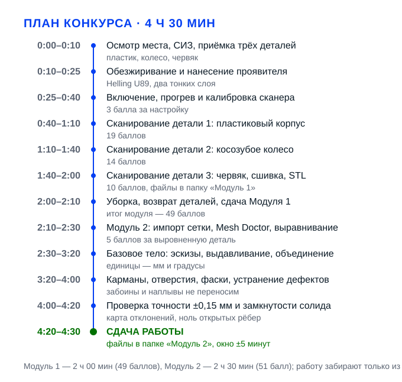
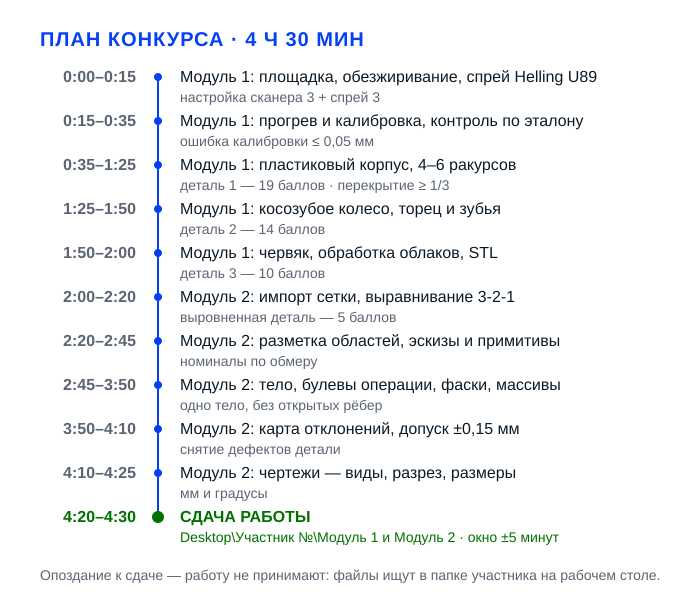
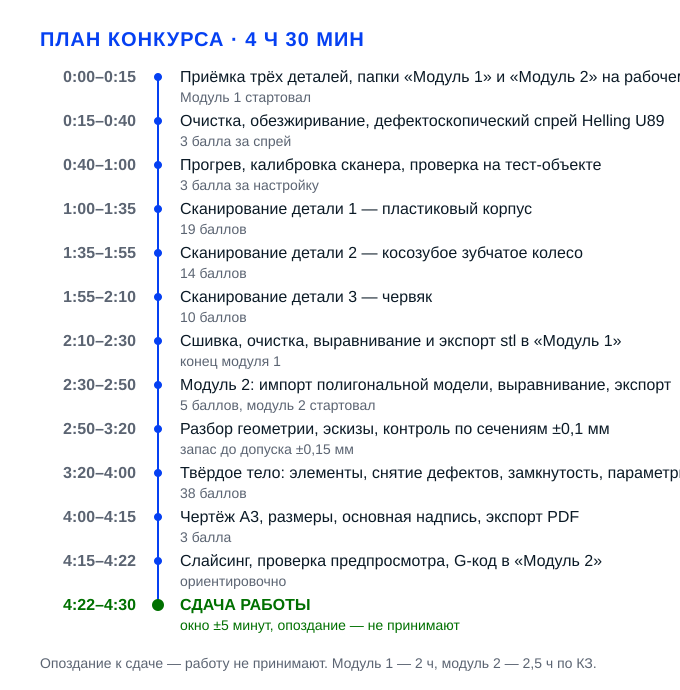

Реверсивный инжиниринг (Р)
Задания ниже — официальные файлы «Абилимпикс» (источник: abilympics-russia.ru), разложенные по категориям. Решения написаны по тексту задания, регламенту и критериям оценки; в них указано, что именно проверяет эксперт.
Школьник
14–16 лет, базовый уровень заданияВ официальном файле категории не разделены отдельными разделами — приводим задание целиком; различия по категориям смотрите в таблице модулей.
Пошаговое решение
Задание школьной категории состоит из двух модулей и идёт без перерыва: два часа на обратное проектирование с 3D-сканером и два с половиной часа на построение редактируемой модели по полигональной модели фрезерованной детали. В первом модуле вы получаете три детали разной сложности из трёх разных материалов — пластиковый корпус, косозубое зубчатое колесо и червяк, готовите их, калибруете сканер, оцифровываете и отдаёте сшитые облака точек в STL. За это дают 49 баллов. Во втором модуле полигональная модель превращается в параметрическую, полностью замкнутую и редактируемую деталь с погрешностью не более ±0,15 мм — это ещё 51 балл. Обратите внимание на две вещи, которые решают исход: качество слоя проявителя (он определяет точность всего облака) и порядок сохранения файлов в папки «Модуль 1» и «Модуль 2» на рабочем столе — работу забирают только оттуда.

Задача 1. Подготовить рабочее место и детали к оцифровкеМодуль 1 · 3 балла за спрей
Модуль 1 начинается с подготовки, и это не формальность: три балла за нанесение дефектоскопического спрея — единственная часть модуля, которую можно сделать идеально заранее, но именно от неё зависит точность всех 43 баллов за сканирование. Слой в 5–15 микрометров даёт чистую геометрию, наплыв в 0,2 мм сдвигает поверхность за пределы допуска ±0,15 мм и портит кромки, которые потом приходится домысливать в модели. Поэтому первые двадцать минут модуля работаем медленно и внимательно.
Действие 1.1. Войти в зону и принять детали
Шаг 1.1.1
Заходим в соревновательную зону до старта и осматриваем место: системный блок, два монитора с диагональю не менее 54 см, сканер на штативе или кронштейне, лоток с тремя деталями, флакон проявителя Helling U89 на 500 мл, штангенциркуль, угломер и набор радиусомеров. Надеваем латексные перчатки, защитные очки и маску: проявитель — аэрозоль с органическим растворителем, и дышать им над лотком нельзя. Проверяем, что сканер подключён к тому же компьютеру, где стоит Geomagic Design X, и что кабель не лежит поперёк прохода.
Эти минуты идут вне конкурсного времени, но определяют, будет ли у вас два часа на работу или полтора: незамеченный незакрытый разъём или забитое сопло всплывут в середине модуля, когда время уже расписано. Критерий «Настройка сканера» стоит 3 балла и оценивается в том числе по тому, насколько осмысленно участник проверяет оборудование до калибровки.
Все три детали на месте и не перепутаны, флакон полный — 500 мл хватает на шесть-восемь деталей, сопло не забито, кабели свободны, очки и перчатки надеты. Сделайте один пробный пшик в сторону от деталей: факел должен быть ровным, без капель и струи.
Типичная ошибка — сразу хвататься за сканер, не проверив, выходит ли проявитель из баллона: после долгого хранения сопло забивается, факел идёт струёй, и первая деталь получает подтёк. Второй провал — работать без маски и очков: аэрозоль висит в зоне дыхания, а эксперты обязаны остановить работу при нарушении техники безопасности.
Эксперт подходит в первые минуты и смотрит, надет ли СИЗ и осмотрен ли инструмент; грубое нарушение требований охраны труда фиксируется сразу и обсуждается с главным экспертом.
Шаг 1.1.2
Раскладываем три детали на белый лист в порядке возрастания сложности: пластиковый корпус, косозубое зубчатое колесо, червяк. Каждую осматриваем и ощупываем в перчатках, отмечая забоины, заусенцы, сколы, следы износа, а также глянцевые и тёмные участки — именно они дают провалы при структурированной подсветке. Ничего не подпиливаем и не зачищаем: деталь нужно оцифровать в том виде, в котором её выдали, все неровности уберёт модель.
Модуль 1 даёт 49 баллов, из них 43 — за сканирование трёх деталей разной сложности, 19, 14 и 10 баллов соответственно. Понимание, где у детали слепые зоны, экономит пятнадцать-двадцать минут: к колесу и червяку вы подойдёте с уже настроенным сканером и продуманной схемой обхода, а не будете искать ракурс на ходу.
Для каждой детали вы можете назвать две-три точки, которые придётся снимать отдельно: у корпуса — внутренние бобышки и пазы под защёлки, у колеса — впадины между зубьями, у червяка — винтовой канал с торцов. Если назвать не можете, деталь ещё не рассмотрена.
Начинать с самой сложной детали, не разобравшись в настройках сканера, — частая ошибка: на червяке теряется время, а корпус, который даёт 19 баллов, снимается в спешке. И наоборот: пытаться зашлифовать заусенец наждачкой «чтобы лучше сканировалось» — это изменение выданной детали, за него снимают баллы.
Эксперт сверяет комплектность и состояние деталей с ведомостью до старта, поэтому все дефекты лучше показать сразу и запомнить, где они находятся: в модели их придётся убрать.
Шаг 1.1.3
Открываем Geomagic Design X и проверяем, что лицензия активна и программа не предлагает обновление. В настройках единиц ставим миллиметры для линейных размеров и градусы для угловых — это прямое требование задания, и менять единицы в середине работы нельзя. Создаём на рабочем столе папку C:\Users\ПОЛЬЗОВАТЕЛЯ\Desktop\Участник №\Модуль 1 и рядом Модуль 2: сохранять в «Документы» или на флешку бессмысленно, работу забирают строго из этих папок.
Единицы измерения и место сохранения — формальные, но жёсткие условия: модель в дюймах или файл, лежащий не в папке «Модуль 1», оцениваются как отсутствие результата, даже если геометрия безупречна. Проверка лицензии заранее спасает от ситуации, когда за десять минут до сдачи программа уходит в демо-режим и перестаёт сохранять проект.
В строке состояния Design X отображаются миллиметры, обе папки созданы и открываются, в них пусто. Сделайте тестовое сохранение пустого проекта и убедитесь, что файл появился именно в папке «Модуль 1», а не в корне рабочего стола.
Работать в дюймах, потому что «так стояло по умолчанию», — потом пересчёт даёт ошибку в 25,4 раза, и модель не проходит по допуску ±0,15 мм. Вторая ошибка — сохранять в корень рабочего стола или в папку «Загрузки»: при сдаче файл просто не найдут.
Эксперт проверяет настройки единиц в начале модуля и путь сохранения при сдаче; это самые быстрые баллы, которые теряют чаще всего, потому что о них вспоминают в последнюю минуту.
Действие 1.2. Подготовить поверхности и нанести проявитель
Шаг 1.2.1
Каждую деталь протираем безворсовой салфеткой, смоченной изопропиловым спиртом, и даём высохнуть тридцать-шестьдесят секунд. Движения — от центра к краям, чтобы не размазывать масляную плёнку; в углах и во впадинах зубьев проходим ватной палочкой. После обезжиривания деталь берём только за торцы и только в перчатках, иначе на поверхности снова остаются отпечатки, которые проявитель обходит стороной.
Проявитель держится на жирной и влажной поверхности неравномерно: в одних местах слой толще, в других он собирается в капли. Критерий «Нанесение дефектоскопического спрея» — 3 балла, но настоящая цена выше: пятна и наплывы дают на облаке ложный рельеф высотой до 0,2 мм, а это уже сопоставимо с допуском ±0,15 мм, по которому строится модель.
Салфетка после протирки чистая, на поверхности нет радужных разводов и ворса, деталь на ощупь сухая и не липкая. Подойдите к окну или лампе: равномерный матовый блеск без пятен — признак того, что обезжиривание выполнено полностью, а не только по центру.
Протирать спиртом и сразу пылить — спирт не успел уйти, и проявитель вскипает мелкими пузырями, которые потом читаются как кратеры. Вторая ошибка — обезжиривать уже после напыления: покрытие смазывается, деталь приходится отмывать заново и терять 10–15 минут.
Эксперт смотрит на подготовку поверхности до напыления: чистая деталь без разводов — первый признак, что участник понимает физику процесса, а не повторяет заученную операцию.
Шаг 1.2.2
Флакон Helling U89 держим вертикально на расстоянии 200–250 мм от детали и наносим два тонких прохода крест-накрест: первый слева направо, второй сверху вниз, с паузой в двадцать-тридцать секунд между ними. Рука движется равномерно, без остановок над деталью; пшик начинаем и заканчиваем за пределами детали, чтобы не поставить точку. Пластик часто светлый и матовый — здесь достаточно одного тонкого слоя, второй добавляем только на тёмные и глянцевые участки.
Проявитель нужен, чтобы сканер увидел поверхность: прозрачный, чёрный и глянцевый пластик рассеивает или поглощает подсветку, и на облаке появляются дыры. Толщина слоя напрямую влияет на результат: 5–15 микрометров дают чистую геометрию, а наплыв в 0,2 мм сдвигает поверхность за пределы допуска и скругляет кромки, которые потом придётся восстанавливать.
Слой матовый и полупрозрачный, сквозь него читается фактура детали; нет потёков, капель и «апельсиновой корки». Проведите пальцем в перчатке по скрытому участку: палец должен остаться чистым, а покрытие — не стереться и не скататься в катышки.
Держать баллон в ста миллиметрах и лить «до полной белизны» — самый частый провал: слой ложится мокрым, у кромок собираются валики, и после сканирования модель получается «опухшей» на 0,3–0,5 мм. Обратная ошибка — пылить с пятисот миллиметров: слой выходит зернистым, и сканер видит шум вместо поверхности.
Это отдельный критерий на 3 балла: эксперт осматривает детали после напыления и отмечает равномерность, отсутствие подтёков и толщину слоя, а не только сам факт напыления.
Шаг 1.2.3
Косозубое колесо пылим иначе: сначала с торца под углом примерно сорок пять градусов, короткими пшиками по одной-две секунды, затем с противоположного торца, и только после этого — по наружному диаметру зубьев. Впадины между зубьями продуваем с двух сторон, не пытаясь залить их до дна: тонкая плёнка на боковых поверхностях зубьев важнее, чем белый налёт в глубине впадины.
Зубья — тонкие элементы с малым шагом, и любой наплыв у головки меняет профиль: на модели зуб получится толще, а впадина мельче. Сканирование этой детали стоит 14 баллов, и оценивают в первую очередь сохранность профиля зуба, торцов и ступицы, а не общий вид.
На просвет между зубьями видно, что каждая боковая поверхность покрыта, а впадины не залиты. Торец колеса равномерно матовый, ступица и отверстие чистые: внутреннюю поверхность отверстия пылить не нужно, она снимается изнутри при развороте детали.
Пылить колесо как плоскую пластину, одним проходом сверху: боковые поверхности зубьев остаются блестящими, и сканер теряет их во впадинах — на облаке зубья «слипаются» в сплошной венец. Вторая ошибка — залить отверстие ступицы, после чего базу для выравнивания оси приходится искать по внешнему контуру.
Эксперт обращает внимание именно на зубчатый венец: если бока зубьев блестят, покрытие признают неполным, и баллы за эту деталь снижаются независимо от качества скана.
Шаг 1.2.4
Червяк кладём на подставку так, чтобы он не катился, и пылим винтовую поверхность в три приёма: с одного торца, с другого и по образующей, каждый раз поворачивая деталь на девяносто градусов. Расстояние держим около двухсот миллиметров, проходы короткие, по две-три секунды, с паузой между ними. Витки не заливаем: слой должен повторить винт, а не заполнить впадину между витками.
Винтовая поверхность имеет поднутрения относительно любой одной позиции сканера, поэтому покрытие должно быть тонким и равномерным по всей длине витка: только тогда облака с разных сторон сшиваются без ступеньки. Сканирование третьей детали даёт 10 баллов, и главный критерий — непрерывность витков на итоговой модели.
Проведите взглядом вдоль витка: граница «покрыто — не покрыто» не должна проходить поперёк канала. Торцы и шейки вала матовые, резьбовой участок не залит, деталь не прилипает к подставке и не проворачивается от лёгкого толчка.
Крутить червяк в руках во время напыления: слой ложится полосами, а пальцы стирают его на выступах витков. Ещё одна ошибка — пылить только с одной стороны и обнаружить при сканировании, что обратные стороны витков блестят и не читаются совсем.
Эксперт проверяет, покрыта ли деталь по всей длине витка и нет ли затёков у торцов, где проявитель скапливается при неаккуратном напылении. Отдельно он смотрит на шейки вала: они должны остаться чистыми, потому что по ним потом строится ось.
Шаг 1.2.5
Даём покрытию высохнуть две-три минуты при комнатной температуре, не ускоряя процесс феном и не протирая деталь. Пока сохнет, готовим сканер и рабочий стол: убираем лишние предметы из зоны обзора, ставим деталь на поворотную платформу или на подставку из пластилина. Перед сканированием каждую деталь проверяем на просвет и на ощупь, а затем ставим так, чтобы её можно было обойти камерой без перестановки.
Недосохший проявитель липнет к подставке и стирается при первом же повороте, а на облаке появляются смазанные участки. Эти две-три минуты — единственное место в модуле, где ожидание действительно экономит время: пересканировать деталь целиком дороже, чем подождать, пока уйдёт растворитель.
Покрытие не липнет, не пачкает перчатку, не имеет влажного блеска. Все три детали стоят устойчиво и не касаются друг друга; в кадре сканера нет ваших рук, флакона, края стола и посторонних предметов, которые попадут в облако как шум.
Начинать сканировать через двадцать секунд после напыления: слой ещё сырой, сканер видит влажный блеск, а деталь прилипает к платформе и сдвигается в середине прохода. Вторая ошибка — сушить феном: поток воздуха сдувает слой неравномерно, и остаются проплешины.
Эксперт фиксирует, насколько аккуратно выполнена подготовка целиком: чистота рабочего места, равномерность покрытия и отсутствие лишних предметов в зоне обзора сканера. Отдельно отмечается, не начал ли участник съёмку по сырому слою.
Задача 2. Настроить сканер и пройти калибровкуМодуль 1 · 3 балла
Настройка сканера — самый короткий и самый недооценённый пункт модуля: три балла против сорока трёх за сканирование. Но именно здесь определяется, попадут ли эти сорок три балла вообще. Калибровка привязывает пиксели камер к миллиметрам, и если она не выполнена или выполнена на непрогретом оборудовании, всё облако уезжает на десятые доли миллиметра — а во втором модуле допуск построения составляет ±0,15 мм. Пятнадцать минут на прогрев, калибровку и пробный проход окупаются с первого же скана.
Действие 2.1. Включить, прогреть и откалибровать сканер
Шаг 2.1.1
Включаем сканер в такой последовательности: блок питания, затем USB-кабель в порт USB 3.0, затем запускаем программу сканирования от производителя VT MINI или RV Spectrum. Даём оборудованию прогреться десять-пятнадцать минут: за это время стабилизируются сенсоры и температура матриц. Проверяем, что обе камеры показывают картинку, а проектор даёт ровный структурированный узор на тестовой поверхности.
Непрогретый сканер даёт плавающую геометрию: первые облака получаются на 0,1–0,3 мм меньше последних, и при сшивке появляется ступенька, которую невозможно убрать без потери точности. Критерий «Настройка сканера» — 3 балла, и эксперты смотрят именно на порядок действий: включение, прогрев, калибровка, пробный проход.
В окне предпросмотра видны обе камеры, изображение резкое, узор читается на тестовой поверхности. Сканер не выдаёт ошибок связи, индикатор горит ровно, без мигания, а в диспетчере устройств нет неизвестных устройств.
Начинать калибровку через минуту после включения: сенсоры ещё не вышли на режим, калибровка пройдёт «успешно», но с систематической ошибкой, которая проявится только при сравнении модели с контрольными размерами. Вторая ошибка — подключить сканер в порт USB 2.0: камеры работают, но поток данных рвётся, и облако приходит кусками.
Эксперт отмечает, выдержана ли пауза на прогрев и в правильном ли порядке подключено оборудование. Спешка на этом шаге видна по первому же скану: по «дырам» в облаке и по плавающему масштабу, который потом не сходится с контрольными размерами.
Шаг 2.1.2
В программе выбираем режим под размер детали: для корпуса — поле побольше и шаг точек 0,1–0,2 мм, для колеса и червяка — узкое поле с шагом 0,05–0,08 мм. Экспозицию подбираем по самой светлой точке детали так, чтобы гистограмма была заполнена, но без пересвета на матовом покрытии. Частоту кадров ставим такой, чтобы при движении рукой не возникало смаза, а кадры перекрывались на треть.
Разрешение и экспозиция — это компромисс между детализацией и шумом. Слишком грубый шаг срезает профиль зуба и виток червяка, слишком мелкий на корпусе даёт миллионы лишних точек и тормозит обработку. Правильная экспозиция напрямую влияет на 43 балла за сканирование: при пересвете сканер теряет края, при недосвете — получает дыры.
На тестовом проходе по ровной части детали облако получается плотным, без «соли и перца», а края читаются. Ползунок экспозиции не стоит в крайнем положении, гистограмма не упирается в правый край, а на покрытии не видно красных зон пересвета.
Оставить заводские настройки «как есть»: для белого матового корпуса они часто слишком тёмные, и половина поверхности не читается. Вторая ошибка — гнаться за максимальной детализацией на всех трёх деталях сразу и утонуть в обработке облака, не дойдя до второго модуля.
Эксперт смотрит, менялись ли параметры осмысленно — под конкретную деталь и материал, — или участник просто нажал «ОК» на предложенных значениях и получил шумное облако с потерянными кромками.
Шаг 2.1.3
Калибруем по штатной калибровочной пластине из комплекта: ставим её на ровную поверхность в рабочей зоне, вводим номер пластины в программу и проводим серию измерений в разных положениях — обычно девять-двенадцать кадров, включая наклонные. Пластину держим неподвижно, сканер перемещаем плавно и не подходим ближе минимальной дистанции. По окончании программа выдаёт значение отклонения.
Калибровка привязывает пиксели камер к реальным миллиметрам. Без неё все размеры уезжают, и допуск ±0,15 мм во втором модуле становится недостижимым: вы построите модель по искажённому облаку и не поймёте, почему она не сходится с контрольными размерами. Это те самые 3 балла за настройку, но реально от них зависят все 43 балла сканирования.
Программа показала отклонение в допуске производителя, обычно не более 0,02–0,05 мм, и зелёную отметку о пройденной калибровке. Если значение близко к границе — повторите серию целиком, а не начинайте работу в надежде, что «и так сойдёт».
Калибровать на весу, держа пластину в руке: кадры получаются со сдвигом, и программа либо не примет серию, либо выдаст большую ошибку. Вторая ошибка — пропустить калибровку, если «вчера всё работало»: сканер перевозили в другую аудиторию, и юстировка сбилась.
Эксперт проверяет, выполнена ли калибровка до первого скана и сохранён ли протокол в программе; отсутствие калибровки — прямое снижение баллов за настройку.
Шаг 2.1.4
Перед работой делаем короткий пробный проход по скрытому участку первой детали: десять-пятнадцать секунд, одна полоса, без разворота. Пробное место выбираем на боковой стенке, а не на кромке, чтобы возможная ошибка не испортила итоговое облако. Смотрим на плотность точек, на дыры и на то, не тянется ли облако за движением руки; если всё чисто, пробный фрагмент удаляем и начинаем съёмку детали целиком, уже зная рабочую скорость и дистанцию.
Пробный проход стоит пятнадцать секунд и спасает от главной неприятности модуля — обнаружить на сороковой минуте, что экспозиция не та, а деталь уже покрыта и время уходит. Кроме того, именно на пробном проходе видно, как ведёт себя покрытие: если проявитель начал осыпаться, это заметно здесь, а не на сшивке.
Пробное облако плотное, поверхность читается как единая плёнка точек, без полос и разрывов. Рука двигалась со скоростью примерно 10–15 см/с — при такой скорости кадры перекрываются на 30–40 процентов, и сшивка потом идёт без ручных привязок.
Пропустить пробный проход и сразу начать полное сканирование: при неверной экспозиции теряется десять-пятнадцать минут на пересканирование. Вторая ошибка — оставить пробное облако в проекте: при сшивке оно даёт лишний фрагмент, который потом удаляют вручную.
Эксперт может подойти в момент пробного прохода и оценить, контролирует ли участник качество потока данных или работает вслепую, надеясь разобраться уже на сшивке, когда время модуля почти исчерпано.
Задача 3. Отсканировать три детали разной сложностиМодуль 1 · 43 балла
Основной блок первого модуля: пластиковый корпус на 19 баллов, косозубое зубчатое колесо на 14 и червяк на 10. Сложность растёт вместе с ценой ошибки, поэтому порядок именно такой, как в задании: сначала крупная корпусная деталь, где видно, как ведёт себя сканер и покрытие, затем колесо с тонкими элементами и червяк с винтовой поверхностью. Задача не в том, чтобы получить «красивую картинку», а в том, чтобы собрать сшитое облако без невосполнимых пропусков и артефактов, пригодное для контроля качества моделирования.
Действие 3.1. Оцифровать пластиковый корпус
Шаг 3.1.1
Ставим корпус на поворотную платформу так, чтобы самая крупная плоскость была обращена к сканеру, а деталь стояла устойчиво и не качалась. Сканер закрепляем на кронштейне на высоте, при которой рабочая дистанция до поверхности составляет 300–400 мм. Продумываем обход: два-три круга по периметру с подъёмом и опусканием, затем отдельные подходы к внутренним полостям. Корпус — самая крупная деталь, и на него уходит примерно треть времени модуля.
Корпусная деталь даёт 19 баллов — почти половину сканировочных баллов, потому что на ней проверяют всё: и наружный контур, и внутренние бобышки, и кромки. Продуманный обход экономит время, которое понадобится на колесе и червяке, где каждая минута на счету из-за тонких элементов.
Деталь стоит в центре рабочего поля, ни один её участок не выходит за границы зоны сканирования, кабель и руки не перекрывают обзор. Проверьте наклейку или риску, по которой потом будете контролировать, что сняты все стороны.
Начинать сканировать, не закрепив деталь: корпус проворачивается на платформе, и облака с разных сторон не сшиваются, а наложение даёт «двойную» геометрию. Вторая ошибка — поставить деталь у самого края поля: половина кадров уходит в мусор.
Эксперт наблюдает, как организован обход: хаотичное движение камерой без плана обычно даёт облако с пропусками, и по первому кругу уже видно, продумана ли схема съёмки.
Шаг 3.1.2
Наружные поверхности снимаем круговыми проходами: начинаем с середины высоты, ведём сканер вокруг детали, затем поднимаемся на уровень верхней кромки и проходим ещё круг, после чего опускаемся к основанию. Скорость — около 10–15 см/с, дистанция постоянная, угол между осью сканера и поверхностью держим в пределах 30–60 градусов. После каждого круга смотрим на экран, а не на деталь.
Угол наклона важнее скорости: при взгляде «в лоб» сканер теряет наклонные и вертикальные участки, а при слишком остром угле падает плотность точек. Наружный контур корпуса входит в критерий сканирования детали 1, и именно по нему видно, умеет ли участник держать рабочую дистанцию.
На экране облако нарастает непрерывно, без белых пятен между проходами; кромки читаются как чёткая линия, а не как размытая полоса. Плотность точек одинакова по всей высоте детали — если сверху она падает, значит, вы ушли из рабочей дистанции.
Вести сканер слишком быстро, «чтобы успеть»: кадры не перекрываются, и в облаке остаются полосы-пропуски, которые потом приходится закрывать вручную. Вторая ошибка — смотреть на деталь, а не на экран: о пропуске узнают только на сшивке, когда исправлять дорого.
Эксперт следит за равномерностью покрытия облаком и за тем, держится ли постоянная дистанция на протяжении всего обхода. Скачки дистанции сразу видны по полосам разной плотности на облаке.
Шаг 3.1.3
Внутренние полости, пазы под защёлки и бобышки снимаем отдельными подходами: наклоняем сканер так, чтобы луч входил внутрь под углом, и делаем короткие проходы по 5–10 секунд. Если полость глубже двух сантиметров, разворачиваем деталь на платформе и снимаем её с противоположной стороны, а фрагменты потом сшиваем по общим участкам. Каждый внутренний элемент снимаем минимум с двух ракурсов.
Внутренние полости — главный источник невосполнимых пропусков: сканер физически не видит дно глубокого паза, если смотрит сверху. Задание прямо требует облако без невосполнимых пропусков данных, и именно на внутренних элементах корпуса теряется большая часть баллов за эту деталь.
В облаке видны стенки и дно каждого паза, нет «затянутых» поверхностей, где точки соединились через пустоту. Переверните деталь в проекте и посмотрите на просвет: полость должна читаться как объём, а не как плоское пятно.
Снимать внутренние элементы «заодно» с наружным обходом, не меняя угол: в облаке остаются только верхние кромки пазов, а глубина пропадает. Вторая ошибка — заливать полости проявителем до дна, из-за чего геометрия паза заплывает и уменьшается.
Эксперт проверяет именно внутренние элементы: если бобышки и пазы не проработаны, балл за сканирование детали 1 снижается заметно, потому что без них деталь нельзя восстановить для производства.
Шаг 3.1.4
Тонкие кромки, рёбра жёсткости и места перехода плоскостей в скругления проходим отдельно, с замедлением до 5–7 см/с и небольшим наклоном сканера. Кромку ведём вдоль, а не поперёк: так она попадает в кадр целиком и не «размазывается». Если на детали есть тонкая стенка толщиной меньше двух миллиметров, снимаем её с обеих сторон и проверяем, что облака сходятся по толщине.
Тонкие элементы — то, по чему судят о качестве оцифровки: кромка, снятая с одного ракурса, получается «толстой» из-за того, что точки ложатся на две поверхности сразу. В модели такая кромка превращается в неверное скругление, и допуск ±0,15 мм по ней не выдерживается.
Кромка в облаке читается одной линией, а не двумя параллельными; толщина стенки, измеренная по облаку штангенциркулем-виртуальным инструментом, отличается от реальной не более чем на 0,05 мм. Проверьте на самом тонком месте.
Гнать сканер поперёк кромки на полной скорости: получается «двойная» поверхность и утолщение, которое потом убирают сглаживанием, теряя реальную геометрию. Вторая ошибка — не проверить толщину тонкой стенки: расхождение в 0,2 мм уводит модель за допуск.
Эксперт осматривает кромки и тонкие стенки: по ним проще всего отличить аккуратную оцифровку от быстрой, потому что именно на кромках появляются двойные поверхности и утолщения.
Шаг 3.1.5
Заканчиваем обход, когда все видимые поверхности покрыты облаком и на экране не остаётся белых зон. Прокручиваем модель в окне программы, осматривая её со всех сторон, и отмечаем пропуски: их досканируем сразу, не переходя к следующей детали. После этого сохраняем проект сканирования под именем, содержащим номер детали, и только затем снимаем деталь с платформы.
Пропуск, замеченный сразу, закрывается за одну-две минуты досканированием. Пропуск, обнаруженный после того, как деталь убрана в лоток и покрытие стёрто, требует повторной подготовки и полного пересканирования — а это уже двадцать минут из двух часов.
На облаке нет участков, где поверхность затянута через пустоту, нет торчащих усов и одиночных точек в воздухе. Все шесть сторон корпуса читаются, внутренние пазы видны, кромки непрерывны, а плотность точек одинакова по всей детали.
Убирать деталь сразу после обхода, не прокрутив облако: типичный пропуск — дно у hidden-стороны, которую не видно с рабочего ракурса. Вторая ошибка — досканировать уже снятую с платформы деталь, не выставив её обратно в то же положение: фрагменты потом не сшиваются.
Эксперт может подойти и попросить показать облако целиком: полнота обхода видна за несколько секунд по белым зонам на экране, и объяснить их потом уже не получится.
Действие 3.2. Оцифровать косозубое зубчатое колесо
Шаг 3.2.1
Кладём колесо на подставку так, чтобы ось была горизонтальна и зубчатый венец был доступен с обоих торцов. Если в комплекте есть оправка или ось, насаживаем колесо на неё — так его можно проворачивать, не сбивая положение. Сканер подводим на дистанцию 250–350 мм и уменьшаем поле сканирования: для детали такого размера важно не количество точек, а их плотность на профиле зуба.
Косозубое колесо даёт 14 баллов, и оценивают в первую очередь профиль зуба и торцы. Правильная установка на ось позволяет проворачивать деталь строго вокруг её оси, а значит, получать фрагменты, которые сшиваются по винтовой линии без ручной подгонки.
Колесо сидит на оправке без люфта, но и без усилия, зубчатый венец целиком попадает в поле, а в кадре нет самой оправки, если она бликует. Проверьте, что при повороте деталь не смещается вдоль оси и не кивает на подставке.
Сканировать колесо, лежащее плашмя на столе: нижняя часть венца закрыта, и половина зубьев остаётся без данных. Вторая ошибка — зажать колесо в тисках: следы зажима попадут в облако как дефекты, которых на детали нет.
Эксперт смотрит на оснастку: наличие оправки или аккуратной подставки говорит о понимании того, что деталь нужно вращать вокруг собственной оси, а не переворачивать руками.
Шаг 3.2.2
Начинаем с торцов: снимаем передний торец круговым проходом, затем разворачиваем деталь и снимаем задний. Особое внимание — ступице и посадочному отверстию: отверстие снимаем изнутри, наклоняя сканер так, чтобы луч входил в него под углом, и делая несколько коротких проходов с проворотом детали. Торцы — база для дальнейшего выравнивания и построения оси.
Торцы и отверстие — технологические базы: по ним в модуле 2 строится ось вращения, и любая ошибка здесь переносится на всю модель. Если отверстие снято неточно, цилиндр получится овальным, а вместе с ним «поедут» все зубья относительно оси, и шаг по окружности уже не проверить.
Торцы плоские, без «линзы» в центре, отверстие читается как замкнутый цилиндр по всей глубине. Проверьте диаметр отверстия по облаку и сравните со штангенциркулем — расхождение больше 0,1 мм говорит о том, что внутренняя поверхность снята плохо.
Пропускать отверстие, считая, что «оно всё равно не нужно»: без него в модели нельзя корректно построить ось, и зубчатый венец окажется смещённым. Вторая ошибка — снимать торец под острым углом, из-за чего плоскость получается волнистой.
Эксперт проверяет торцы и посадочное отверстие: это те элементы, по которым видно, понимает ли участник назначение баз и думает ли о втором модуле, где ось строится именно отсюда.
Шаг 3.2.3
Зубчатый венец снимаем в два приёма: сначала по наружному диаметру, обходя колесо по кругу с наклоном сканера к профилю, затем — впадины между зубьями, проворачивая деталь небольшими шагами по 15–20 градусов. Для косозубого колеса обязательно проходим венец с обоих торцов: винтовая линия зуба уходит в сторону, и с одного ракурса дальние впадины закрыты.
Профиль зуба — главное, что оценивают в этой детали: по нему видно и шаг, и угол наклона, и толщину зуба. Косозубый венец имеет поднутрения, поэтому одна сторона всегда частично закрыта, и без съёмки с двух торцов в облаке остаются слепые зоны внутри впадин.
В облаке читается каждый зуб, впадины проработаны до основания, а линия зуба плавно уходит по винту от торца к торцу. Проверьте, что число зубьев на облаке совпадает с реальным и ни один не «слипся» с соседним.
Снимать венец одним круговым проходом: на косозубом колесе этого мало, дальние стенки впадин остаются пустыми, и при сшивке получается «лысый» участок. Вторая ошибка — проворачивать деталь рывками, из-за чего кадры не перекрываются и сшивка рвётся.
Эксперт осматривает зубчатый венец на облаке и в модели: пропуски во впадинах и слипшиеся зубья — самый заметный дефект этой детали, его видно без всяких измерений.
Шаг 3.2.4
После обхода прокручиваем облако и проверяем впадины на просвет: там, где между зубьями видна пустота, досканируем точечно, с наклоном и на малой скорости. Отдельно проверяем переход зуба в ступицу и шпоночный паз, если он есть, потому что именно там чаще всего рвётся облако. Когда все элементы читаются, сохраняем проект под понятным именем и только потом снимаем колесо с оправки.
Досканирование впадин занимает две-три минуты и полностью снимает риск «слипшихся» зубьев, из-за которых в модуле 2 придётся строить профиль по догадке. Именно полнота данных по венцу отличает облако, пригодное для контроля качества моделирования, от простого набора точек.
Каждая впадина просматривается до основания, шпоночный паз имеет дно и стенки, переход в ступицу плавный. Число зубьев, пересчитанное на облаке, совпадает с реальным, и на сшитом фрагменте нет ступенек.
Досканировать колесо уже после того, как оно снято с оправки: положение изменилось, и новые фрагменты не ложатся на старые. Вторая ошибка — «залечить» пропуск впадины сглаживанием: геометрия зуба при этом уезжает на десятые доли миллиметра.
Эксперт проверяет колесо после сшивки: если впадины читаются до основания, деталь считают отсканированной полностью, а не «в основном», и баллы за неё начисляются без оговорок.
Действие 3.3. Оцифровать червяк
Шаг 3.3.1
Червяк устанавливаем на призмы или в центрах так, чтобы ось вращения была горизонтальна и деталь могла проворачиваться без смещения. Сканер ставим на дистанцию 200–300 мм и сужаем поле: виток узкий, и плотность точек важнее охвата. Перед началом проверяем, что деталь не качается на призмах, покрытие на витках не стёрлось при установке, а сами призмы не попадают в кадр как лишний фон.
Червяк — самая сложная деталь модуля и стоит 10 баллов: винтовая поверхность имеет поднутрения почти с любого ракурса, поэтому важна не скорость, а возможность проворачивать деталь строго вокруг оси. Любое смещение вдоль оси при провороте приводит к тому, что витки на облаке «расходятся» по шагу.
Деталь лежит устойчиво, проворачивается от лёгкого касания, осевого люфта нет. Покрытие на витках целое, на призмах нет следов проявителя, которые попадут в облако как посторонние фрагменты, а сама деталь стоит так, что её можно обойти камерой на 360 градусов.
Класть червяк прямо на стол: он катится, и половина витков остаётся недоступной, а покрытие стирается о поверхность. Вторая ошибка — зажимать шейки вала в тиски: следы зажима читаются как дефекты, а на шейках строится ось, и её положение после такого крепления уже не восстановить.
Эксперт смотрит на оснастку и на то, насколько бережно участник обращается с покрытием при установке детали: стёртый проявитель на витках виден сразу и оценивается как потеря данных.
Шаг 3.3.2
Винтовую поверхность снимаем по виткам: начинаем с одного торца, ведём сканер вдоль витка, проворачивая деталь на 15–20 градусов после каждого прохода, и постепенно доходим до другого торца. Скорость снижаем до 5–7 см/с, наклон сканера держим так, чтобы луч скользил вдоль канала витка, а не поперёк. После первого прохода повторяем то же в обратном направлении, с другой стороны канала.
Виток — это винтовая канавка с двумя стенками, и каждая стенка видна только с одной стороны. Съёмка в одном направлении даёт половину профиля, а на модели виток получается треугольным вместо трапециевидного. Именно непрерывность и профиль витков оценивают в этих десяти баллах.
Каждый виток читается по всей длине, обе стенки канала видны, переходы между витками не «затянуты». Проверьте на облаке шаг: расстояние между соседними витками должно быть одинаковым по всей длине детали.
Снимать червяк круговыми проходами, как цилиндр: витки превращаются в кольцевые полосы, а винтовая геометрия теряется. Вторая ошибка — не менять направление обхода, из-за чего одна стенка канала остаётся без данных.
Эксперт разглядывает витки на облаке: если канал читается на всю глубину и обе стенки видны, деталь отсканирована правильно, и он отмечает это отдельно.
Шаг 3.3.3
Торцы, шейки и посадочные поверхности снимаем отдельно, короткими проходами с разных сторон: они нужны как базы для оси и для контроля длины. Отдельно проходим галтели у перехода шеек в витковую часть — это места, где сканер чаще всего теряет данные из-за резкого изменения кривизны. После съёмки торцов проверяем, что облако замкнуто по всей длине вала.
Шейки и торцы — это базы, по которым в модуле 2 строится ось вращения и определяется длина детали. Если торец снят неточно, ось окажется наклонённой, и все витки уедут относительно неё, а вместе с ними и посадочные размеры, по которым деталь сопрягается с ответной.
Торцы плоские, шейки цилиндрические, галтели читаются как плавный переход, а не как ступенька. Длина детали по облаку совпадает со штангенциркулем в пределах 0,1 мм, а диаметр шейки — в пределах 0,05 мм, иначе ось потом поплывёт.
Пропускать галтели, считая их «мелочью»: именно там облако чаще всего рвётся, и при сшивке появляется ступенька, которую видно на модели. Вторая ошибка — мерить длину по облаку, не сняв торцы полностью.
Эксперт проверяет торцы и шейки как базы: по ним видно, думает ли участник о следующем модуле, а не только о текущем, где эти поверхности кажутся второстепенными.
Шаг 3.3.4
Финальная проверка: прокручиваем облако червяка, смотрим на витки с обоих торцов и на просвет, ищем разрывы и затянутые участки. Если виток где-то прерывается, досканируем этот участок с новым углом, а не пытаемся закрыть дыру программно: заплата всё равно читается на модели. Убедившись в полноте, сохраняем проект под понятным именем, проверяем размер файла и только затем снимаем деталь с призм.
Разрыв на витке — невосполнимый пропуск, о котором прямо сказано в задании: облако должно быть без невосполнимых пропусков и иных артефактов. Программное закрытие дыры создаёт плоскую заплату, которая в модели превращается в неверную геометрию витка и уводит деталь за допуск.
Все витки непрерывны от торца до торца, на просвет нет пустот, профиль канала читается одинаково по всей длине. Число витков на облаке совпадает с реальным, а шаг не меняется к концам детали — если меняется, значит, часть витков снята с другой дистанции.
Закрывать разрыв функцией «заполнить отверстие» и считать вопрос решённым: на модели получится плоская пробка вместо витка. Вторая ошибка — досканировать червяк, держа его в руке: фрагменты не сшиваются по витку, и появляется двойная геометрия.
Эксперт проверяет непрерывность витков и отсутствие программных заплаток: это самый заметный признак небрежной оцифровки, и его видно даже на уменьшенном изображении.
Задача 4. Сшить облака, выгрузить STL и сдать первый модульМодуль 1 · итог 49 баллов
Сшитое облако точек — это и есть результат первого модуля: три файла в формате STL, лежащие в папке «Модуль 1» на рабочем столе. Баллы за сканирование (19, 14 и 10) ставят не за процесс, а за то, что осталось в файлах, поэтому сшивка и очистка здесь так же важны, как сам обход сканером. Отдельно стоит уборка: детали нужно вернуть в прежнее состояние, снять проявитель и упаковать оборудование — задание говорит об этом прямым текстом, и эксперты это видят.
Действие 4.1. Сшить и очистить облака
Шаг 4.1.1
Открываем все фрагменты детали в модуле обработки (Geomagic Wrap или встроенные инструменты Design X) и запускаем глобальное совмещение — Global Registration. Программа ищет общие участки между фрагментами автоматически; если фрагмент не встал, указываем три-четыре общие точки вручную, выбирая участки с ярко выраженным рельефом, а не плоские. После совмещения выполняем сшивку в единое облако и проверяем отклонение по перекрытиям.
Качество сшивки определяет, будет ли облако пригодно для контроля качества моделирования: при ошибке совмещения появляется «двойная» поверхность, и любая последующая модель строится по усреднённой, то есть неверной геометрии. Допуск построения в модуле 2 составляет ±0,15 мм, и ошибка сшивки в 0,1 мм уже съедает две трети этого запаса.
Отклонение по перекрывающимся участкам не превышает 0,05 мм, поверхность в местах стыков выглядит однородной, без уступа и «шва». Проверьте инструментом сравнения: цветовая карта на стыке должна быть ровной, без резкой границы цветов.
Сшивать фрагменты по плоским участкам: на плоскости любая точка похожа на любую другую, и программа может повернуть фрагмент на несколько градусов, оставив ошибку незаметной на глаз. Вторая ошибка — принимать автоматическое совмещение без проверки отклонения.
Эксперт смотрит на карту отклонений сшивки: ровная карта без цветных швов — признак качественной работы, а резкая граница цветов означает, что фрагменты встали с ошибкой.
Шаг 4.1.2
Чистим облако от мусора: удаляем одиночные точки в воздухе, «усы» по краям, фрагменты подставки и пальцев, если они попали в кадр. Мелкие дыры закрываем функцией заполнения отверстий с ограничением по размеру, крупные — досканируем, если деталь ещё на месте. Затем уплотняем облако и при необходимости переводим его в полигональную сетку, контролируя, чтобы сглаживание не съело кромки.
Артефакты и мусор напрямую названы в задании как недопустимые: облако должно содержать информацию об изделии, а не о вашем столе. Крупная дыра, закрытая программно, даёт плоскую заплату, которая в модели читается как дефект геометрии и снижает баллы за правильность построения.
В облаке нет точек вне поверхности детали, все отверстия либо закрыты по реальной геометрии, либо досканированы. Кромки и рёбра после перевода в сетку остаются острыми, число полигонов не зашкаливает — сетка не «тяжёлая».
Сглаживать всё облако целиком «чтобы красиво выглядело»: вместе с шумом уходят и реальные кромки, а на модели появляются завалы, которые уже не восстановить. Вторая ошибка — закрывать дыры без ограничения по размеру: программа затягивает полость целиком.
Эксперт проверяет чистоту сетки и отсутствие программных заплаток, особенно на функциональных поверхностях: плоская пробка на месте кармана видна и на карте отклонений, и просто на глаз.
Шаг 4.1.3
Экспортируем каждую деталь в STL: в диалоге выбираем двоичный формат, единицы — миллиметры, и задаём имя, по которому деталь легко опознать, например Detal_1_korpus, Detal_2_koleso, Detal_3_chervyak. Сохраняем строго в папку C:\Users\ПОЛЬЗОВАТЕЛЯ\Desktop\Участник №\Модуль 1. После экспорта открываем каждый файл заново и убеждаемся, что он читается и содержит ту же геометрию.
Именно эти файлы оценивают: 19, 14 и 10 баллов ставят по содержимому папки «Модуль 1», а не по тому, что участник показывал на экране. Ошибка в единицах экспорта — самая обидная потеря модуля: деталь в дюймах при импорте во втором модуле уменьшится в 25,4 раза, и построить по ней модель с допуском ±0,15 мм будет невозможно.
Файлы на месте, размер каждого соответствует ожидаемому (десятки мегабайт для корпуса), при повторном открытии геометрия и масштаб совпадают. Проверьте габарит детали по файлу и сравните с реальной деталью штангенциркулем.
Сохранять в формате проекта, а не STL, или складывать файлы в общую папку без разделения по модулям. Вторая ошибка — экспортировать с единицами «дюймы» по умолчанию и не заметить этого до импорта во втором модуле.
Эксперт открывает файлы из папки при оценивании: читаемость, масштаб и полнота геометрии проверяются первым делом, и спорные случаи решаются не в пользу участника.
Действие 4.2. Вернуть детали и оборудование в исходное состояние
Шаг 4.2.1
Снимаем проявитель с деталей мягкой салфеткой, смоченной спиртом, без абразива и без металлических щёток: сначала снимаем основную массу сухой салфеткой, затем проходим влажной и насухо вытираем. В пазах и впадинах зубьев помогаем ватной палочкой. Деталь возвращаем в лоток только после того, как она полностью сухая и на ней не осталось белых разводов.
Задание прямо требует удалить с деталей спрей и вернуть их в прежнее состояние, а эксперты осматривают детали после сдачи. Кроме того, остатки проявителя на рабочем столе и на платформе сканера — это грязь в зоне, за которую снижают оценку организации работы.
Детали чистые, сухие, без разводов и ворса, в лотке лежат в том же порядке, в котором выдавались. Платформа и подставка протёрты, на столе нет белого налёта от аэрозоля, а флакон закрыт и убран на место.
Смывать проявитель агрессивным растворителем или тереть деталь наждачной бумагой: на пластике остаются матовые пятна и царапины, а это уже изменение выданной детали. Вторая ошибка — убрать деталь влажной: в лотке остаются следы, и претензия предъявляется участнику.
Эксперт осматривает детали при приёмке: чистота и отсутствие повреждений фиксируются отдельно, а стёртое покрытие на детали, которую ещё будут оценивать, читается как небрежность.
Шаг 4.2.2
Убираем оборудование: сканер выключаем в обратном порядке — сначала программа, затем USB, затем питание, — и ставим его на штатное место, не оставляя на краю стола. Флакон закрываем крышкой, проверяем, что сопло не подтекает. Калибровочную пластину протираем и убираем в футляр, кабели сматываем без перегибов, очки и перчатки утилизируем в отведённое место.
Аккуратное выключение и упаковка входят в культуру работы, которую оценивают на чемпионате, и одновременно страхуют от порчи оборудования, за которую отвечает участник. Кроме того, порядок на столе нужен вам же: второй модуль начнётся сразу, и искать освободившееся место будет некогда.
Сканер на штатном месте, кабели не перекручены и не натянуты, флакон закрыт, калибровочная пластина в футляре, стол свободен для второго модуля. В зоне нет мусора, использованных салфеток и пустых упаковок.
Оставить сканер включённым и уйти пить чай: оборудование греется, а при возвращении выясняется, что программа потеряла соединение. Вторая ошибка — бросить флакон с открытой крышкой: растворитель уходит, и на второй модуль проявителя может не хватить.
Эксперт отмечает состояние рабочего места между модулями, и порядок идёт в общую оценку организации: пустой стол и убранный инструмент говорят о дисциплине больше, чем рассказ о ней.
Шаг 4.2.3
Перед сдачей первого модуля делаем контрольный проход по чек-листу: три файла STL в папке «Модуль 1», каждый открывается и содержит нужную деталь, единицы — миллиметры, имена понятные. Проверяем, что в папке нет лишних промежуточных файлов, которые могут запутать эксперта. Затем сообщаем эксперту о готовности и остаёмся на месте до его подтверждения.
Формальная сдача — момент, когда работа фиксируется. Если файл не открывается или лежит не там, баллы за сканирование не начисляются вообще, сколько бы времени ни было потрачено на обход деталей. Тридцать секунд проверки защищают 43 балла, и это самый выгодный обмен времени в модуле.
Все три файла открыты и просмотрены, геометрия читается, масштаб верный, папка соответствует требуемому пути. Эксперт подтвердил приёмку модуля, и вы записали время сдачи, чтобы потом не спорить о том, уложились ли вы в регламент.
Сдавать модуль «по факту сохранения», не открыв файлы: повреждённый при экспорте STL обнаруживается только у эксперта. Вторая ошибка — доделывать что-то после сигнала о сдаче, когда время модуля уже истекло.
Эксперт принимает модуль по файлам и может попросить открыть один из них при вас; уверенное открытие своего файла и точный ответ о содержимом папки производят хорошее впечатление.
Задача 5. Выровнять полигональную модель для обратного проектированияМодуль 2 · 5 баллов
Второй модуль начинается с полигональной модели фрезерованной детали, которую выдаёт организатор. Первый шаг — выровнять её так, чтобы оси совпадали с технологическими базами: плоскость основания стала горизонтальной, ось отверстия — вертикальной или совпала с осью координат. Это отдельный критерий на 5 баллов, и одновременно фундамент для 46 баллов за правильность построения: на невыровненной модели не строятся ни эскизы, ни симметрия, ни корректные размеры.
Действие 5.1. Привести модель к технологическим базам
Шаг 5.1.1
Импортируем выданную полигональную модель в Geomagic Design X через «Импорт» с типом «Сетка» и сразу проверяем масштаб: габариты должны соответствовать детали, выданной в первом модуле или описанной в задании. Запускаем «Mesh Doctor» — он находит отверстия, самопересечения, инвертированные нормали и несвязанные фрагменты. Ошибки исправляем до выравнивания, а не после.
Сетка с дырами и перевёрнутыми нормалями не даёт корректно построить плоскости и оси: программа либо не распознаёт поверхность, либо строит её «наизнанку». Критерий «Выровненная деталь» стоит 5 баллов, но без здоровой сетки не наберутся и 46 баллов за модель.
Mesh Doctor не показывает критических ошибок, число отверстий равно нулю или все закрыты по реальной геометрии, нормали направлены наружу. Габариты модели совпадают с ожидаемыми в пределах десятых долей миллиметра.
Игнорировать предупреждения Mesh Doctor и работать с «грязной» сеткой: при построении плоскости по зашумлённому участку она получается наклонённой на градус-два, и вся дальнейшая геометрия уезжает. Вторая ошибка — «починить» сетку глобальным сглаживанием, которое убивает кромки.
Эксперт проверяет сетку до начала построений: чистая сетка без ошибок — первое, что он отмечает, потому что по ней сразу видно, работал ли участник с геометрией осознанно.
Шаг 5.1.2
Определяем базы: находим главную установочную плоскость (обычно это самая большая плоская грань или основание), боковую плоскость для ориентации по вращению и ось отверстия или цилиндрической бобышки. Для каждой базы строим вспомогательный элемент по участку сетки, стараясь захватить побольше площади, но не заходя на скругления и фаски. Базы намечаем до выравнивания, а не подгоняем после.
Выравнивание — это привязка модели к системе координат, и качество привязки зависит от того, насколько правильно выбраны базы. Если за базу взять скруглённую кромку или участок с забоиной, модель встанет с наклоном, и все размеры в эскизах придётся пересчитывать вручную.
Плоскость построена по ровному участку, её отклонение от сетки в пределах 0,05 мм, ось цилиндра совпадает с реальным отверстием. Проверьте, что построенные элементы не «висят в воздухе» и привязаны к геометрии детали.
Брать за базу всю поверхность целиком, включая скругления: плоскость получается усреднённой и наклонённой, и выравнивание уводит модель на десятые доли миллиметра. Вторая ошибка — выбирать базу по маленькому участку у края, где сетка обычно самая шумная.
Эксперт смотрит, какие элементы выбраны как базы: осмысленный выбор виден сразу, а случайный выдаёт себя наклоном модели после выравнивания, и это заметно даже без измерений.
Шаг 5.1.3
Выполняем выравнивание по схеме «3-2-1»: плоскость основания задаёт направление первой оси, боковая плоскость — поворот вокруг неё, ось отверстия фиксирует положение в плане. Если деталь симметричная и явных боковых баз нет, используем выравнивание по осям симметрии с контролем отклонения. После команды проверяем, что модель встала ровно: основание параллельно плоскости XY, ось отверстия вертикальна.
Правильно выровненная модель позволяет строить эскизы на плоскостях, а не «по месту», и работать с симметрией. Это те 5 баллов за выровненную деталь, но важнее то, что от выравнивания зависит читаемость дерева построения и возможность править параметры, чего задание требует прямо.
Отклонение после выравнивания не превышает 0,1 мм по базовым поверхностям, основание лежит в плоскости XY, оси совпадают с координатными. Взгляните на модель сбоку: она не должна стоять «на ребре» или под наклоном.
Выравнивать «на глаз», поворачивая модель мышью: визуально ровно, а по факту наклон в полтора градуса, который на габарите в сто миллиметров даёт смещение почти в три миллиметра. Вторая ошибка — выровнять по одной плоскости и забыть про поворот вокруг неё.
Эксперт проверяет выравнивание по отклонению и по положению базовых плоскостей в системе координат: если основание не лежит в плоскости XY, дальнейшие построения он рассматривает с поправкой.
Шаг 5.1.4
Сохраняем результат выравнивания отдельным файлом STL — этого требует задание: экспортируем выровненную полигональную модель в папку C:\Users\ПОЛЬЗОВАТЕЛЯ\Desktop\Участник №\Модуль 2 под именем с пометкой «выровненная». В диалоге экспорта проверяем единицы (миллиметры) и двоичный формат. После экспорта открываем файл заново и проверяем, что положение в пространстве сохранилось, а не сбросилось в исходное.
Выровненный STL — отдельный результат с собственной оценкой в 5 баллов, и его отсутствие означает потерю этих баллов даже при идеальной модели. Кроме того, сохранённый файл служит точкой возврата: если построения пойдут не так, можно начать заново от выровненной сетки, а не от исходной.
Файл лежит в папке «Модуль 2», открывается, положение детали в пространстве соответствует выровненному, масштаб в миллиметрах. Имя файла содержит слово, по которому его легко отличить от рабочего проекта.
Экспортировать до выравнивания, потому что «потом сохраню»: в спешке файл остаётся от исходной сетки, и 5 баллов теряются. Вторая ошибка — сохранять в тот же файл, перезаписывая исходную модель, если она ещё нужна для сравнения.
Эксперт открывает выровненный STL и смотрит положение модели: это быстрая проверка на 5 баллов, и её результат не зависит от того, насколько красиво выглядит проект.
Задача 6. Построить редактируемую параметрическую модельМодуль 2 · 46 баллов
Главный блок всего задания: по полигональной модели нужно построить компьютерную модель, пригодную для последующего производства. Она должна быть трёхмерной, полностью объединённой и редактируемой: все элементы сопряжены между собой, открытых рёбер нет, а параметры можно менять. Погрешность построения не должна превышать ±0,15 мм, единицы — миллиметры и градусы. Отдельное требование — исключить дефекты исходной детали: забоины, наплывы, заусенцы, наварки, напайки и сколы, восстановив первоначальную геометрию. Здесь и набираются 46 баллов, и теряются они чаще всего на кромках, отверстиях и сопряжениях.
Действие 6.1. Разобрать геометрию и построить базовое тело
Шаг 6.1.1
Открываем в Geomagic Design X выровненную сетку из папки «Модуль 2» и проверяем единицы: в настройках документа должны стоять миллиметры, а углы — в градусах. Смотрим габариты модели, сверяем их с ожидаемыми размерами детали и записываем в черновик, чтобы потом сверять с ними построения. Дальше работаем в режиме, где сетка остаётся фоном: она нужна как эталон для сравнения, а не как тело для редактирования.
Единицы измерения названы в задании отдельным требованием: миллиметры для линейных размеров и градусы для угловых. Если документ создан в дюймах, все построения формально верны, но модель не проходит проверку по единицам, а пересчёт задним числом ломает дерево построения.
В свойствах документа указаны миллиметры и градусы, габариты сетки соответствуют реальной детали с точностью до десятых, сетка видна как полупрозрачный фон. Убедитесь, что при измерении любого размера программа показывает «мм», а не «in».
Создавать документ из шаблона по умолчанию, где стоят дюймы, и заметить это только при сохранении. Вторая ошибка — начинать строить, не сверив габариты: если сетка импортирована в другом масштабе, все построения уйдут в никуда.
Эксперт проверяет единицы документа и соответствие габаритов в начале оценки модели: если масштаб не тот, дальше он смотрит работу уже с большим сомнением.
Шаг 6.1.2
Разбираем геометрию на составляющие: строим сечения сетки в нескольких плоскостях, смотрим, где плоскости, где цилиндры, где сопряжения, и отмечаем, какие элементы детали получены фрезерованием (плоские стенки, карманы, фаски), а какие — литьём или точением. Определяем главные оси и плоскости симметрии, чтобы потом строить не «по кускам», а от базы.
Фрезерованная деталь имеет характерный набор элементов: плоские основания, стенки с небольшими уклонами, карманы с радиусными углами, фаски по контуру. Понимание того, как деталь делалась, подсказывает, какие поверхности нужно восстанавливать как идеальные плоскости и цилиндры, а где допустимо оставить приближение.
Вы можете перечислить элементы детали по порядку и назвать для каждого тип поверхности. Сечения показывают, что стенки параллельны и перпендикулярны, а не гуляют, — значит, геометрия понята верно, и эскизы можно строить от базы.
Сразу начинать строить тело, не разобравшись в элементах: потом оказывается, что половина карманов построена на неверной базе, и всё приходится переделывать. Вторая ошибка — принимать шум сетки за реальные уклоны стенок.
Эксперт смотрит на дерево построения: осмысленная последовательность видна по тому, от какой базы построен первый элемент и не появились ли десятки вспомогательных плоскостей.
Шаг 6.1.3
Строим эскизы базовой геометрии: на плоскости основания — контур детали по внешнему периметру, с привязкой размеров к осям и симметрии; на боковой плоскости — профиль для выдавливания или вращения. Контуры наносим по сечениям сетки, а не «на глаз», и сразу проставляем размеры, чтобы эскиз был полностью определён, а не висел с недозаданными степенями свободы.
Полностью определённый эскиз — это и есть редактируемость, которой требует задание: модель должна допускать работу с целью определения её параметров и внесения изменений. Эскиз с «плавающими» линиями при изменении одного размера разваливается, и модель перестаёт быть параметрической.
В эскизе нет недозаданных элементов — программа не показывает синих линий, все размеры проставлены, контур замкнут. При изменении любого размера контур меняется целиком, а не разрывается на отдельные куски.
Чертить контур по внешнему габариту, игнорируя реальные кромки: на детали почти всегда есть фаски и скругления, и «прямоугольный» контур даёт ошибку в десятые доли миллиметра. Вторая ошибка — не замкнуть контур и получить тело с открытой гранью.
Эксперт открывает эскизы и смотрит, заданы ли размеры и привязки: это прямой признак редактируемости, и по нему он решает, стоит ли проверять модель изменением параметра.
Шаг 6.1.4
Строим основное тело: выдавливаем контур на нужную высоту или вращаем профиль вокруг оси, затем объединяем с остальными базовыми объёмами булевыми операциями. Высоту и глубину берём по сечениям сетки, а не по первому впечатлению. После каждого построения проверяем, что тело получилось цельным и его грани совпадают с сеткой по основным поверхностям.
Основное тело задаёт «скелет» детали, и ошибка в нём переносится на все последующие элементы: карманы окажутся на неверной глубине, отверстия — не на своих местах. Булевы операции нужны, чтобы получить единый солид, а не набор пересекающихся объёмов, — требование о полностью объединённой модели.
Тело цельное, его габариты совпадают с сеткой, основные плоскости параллельны базовым, а не наклонены. В дереве видно одно тело, а не несколько отдельных, и программа не показывает ошибок булевых операций.
Строить каждый элемент отдельным телом и оставить их «внахлёст»: формально похоже, но модель не является объединённой, и её нельзя использовать для производства. Вторая ошибка — выдавливать на глубину, взятую из первого сечения, не проверив по другим.
Эксперт проверяет цельность тела и совпадение базовых поверхностей с сеткой: если основание пляшет относительно фона, вся дальнейшая геометрия оценивается с сомнением.
Действие 6.2. Проработать элементы и убрать дефекты
Шаг 6.2.1
Прорабатываем карманы, бобышки и отверстия: для каждого кармана строим эскиз на его плоскости, задаём глубину и радиусы углов, для отверстий — диаметр, глубину и положение относительно баз. Отверстия строим инструментом «Отверстие», а не выдавливанием круга, чтобы в дереве остался тип операции и диаметр. Все размеры берём по сечениям сетки и округляем до номинальных значений.
Отверстия и карманы — функциональные элементы, по которым деталь работает в узле, и именно они чаще всего проверяются контрольными размерами. Номинальные значения важнее «точного попадания в шум»: реальная деталь изношена, и её отверстие может быть на 0,1 мм больше номинала, а модель должна восстанавливать проектное значение.
Диаметры отверстий совпадают с номинальными, положения привязаны к базам, глубина карманов соответствует сечениям. Проверьте расстояния между отверстиями — они должны быть симметричны относительно оси, если деталь симметрична.
Копировать размеры с изношенной детали «как есть»: отверстие, разбитое на 0,2 мм, переносится в модель, и деталь не собирается с ответной. Вторая ошибка — строить карманы без радиусов в углах, хотя фреза их оставляет всегда.
Эксперт проверяет номинальность размеров и привязку элементов к базам: отверстия, посаженные по месту без привязки, при изменении параметра уезжают, и модель теряет редактируемость.
Шаг 6.2.2
Проставляем фаски, скругления и уклоны: фаски по внешнему контуру и на входе в отверстия, скругления в углах карманов и на переходах стенок, уклоны стенок, если они есть на исходной детали. Радиусы берём по радиусомерам и сечениям, а стандартные значения в 1, 2, 3 и 5 мм предпочитаем странным, если сетка допускает оба варианта. Каждое скругление ставим отдельной операцией, чтобы его можно было поправить, не перестраивая всё тело.
Фаски и скругления — это те элементы, по которым видно, настоящая модель или быстрая заготовка: без них деталь невозможно изготовить, а на кромках появляются острые ребра, которых в реальности нет. При этом именно кромки дают наибольшее отклонение от сетки, поэтому разумное округление до стандартного радиуса снижает погрешность, а не увеличивает её.
Все острые кромки, которые на детали скруглены, скруглены и в модели; радиусы соответствуют радиусомерам; фаски одинаковы по всему контуру. Проверьте углы карманов — там скругление должно быть равно радиусу фрезы, обычно 3–6 мм.
Оставлять острые кромки «потому что так проще»: в модели появляются рёбра, которых нет на детали, и отклонение на кромке выходит за ±0,15 мм. Вторая ошибка — ставить скругление 0,4 мм там, где реально 3 мм, и получить «зализанную» геометрию.
Эксперт осматривает кромки и углы: наличие фасок и скруглений — признак проработанной модели, а ровные острые рёбра сразу выдают заготовку, сделанную за десять минут.
Шаг 6.2.3
Убираем дефекты исходной детали: забоины, наплывы, заусенцы, сколы, следы наварок и напаек не переносим в модель, а восстанавливаем по ним номинальную геометрию. Практически это значит, что повреждённый участок плоскости строится как идеальная плоскость по неповреждённой части, а скол на кромке закрывается восстановлением прямолинейного контура. Каждый такой участок проверяем по сетке с двух сторон.
Задание требует исключить дефекты, приобретённые в процессе производства, эксплуатации, поломок и ремонтов, восстановив первоначальную геометрию. Это отдельная часть оценки правильности построения: модель с перенесённой забоиной формально повторяет деталь, но для производства непригодна.
На модели нет локальных вмятин и выступов, которые видны на сетке; восстановленные поверхности плоские или цилиндрические, а не «обмятые» по дефекту. Сравнение с сеткой в зоне дефекта покажет локальное отклонение — это нормально и правильно.
Обводить дефект по контуру и оставлять его в модели «для точности»: отклонение в этом месте формально нулевое, но деталь непригодна, и баллы за правильность снижаются. Вторая ошибка — залечить дефект сглаживанием всей поверхности, испортив соседнюю геометрию.
Эксперт ищет на модели следы дефектов: перенесённая забоина — один из самых заметных минусов, потому что по ней видно, что участник копировал сетку, а не восстанавливал геометрию.
Шаг 6.2.4
Проверяем сопряжения и замкнутость: все элементы должны быть объединены в один солид, без открытых рёбер и висящих поверхностей. Запускаем диагностику тела, смотрим число открытых кромок и при необходимости добавляем недостающие грани или корректируем стыки. Если элемент не хочет объединяться, ищем причину — обычно это зазор в сотые доли или касание по кромке.
Требование «модель не может иметь открытых рёбер» — прямое условие задания, и оно проверяется одним нажатием кнопки. Незамкнутый солид нельзя ни отправить в производство, ни корректно измерить, поэтому такая модель оценивается существенно ниже, даже если внешне выглядит правильно.
Диагностика показывает ноль открытых кромок, тело помечено как твёрдое, объём вычисляется. Попробуйте выделить любую грань: если программа выделяет всю поверхность детали целиком, солид действительно единый, а не собран из кусков.
Собирать модель из отдельных тел и не объединять их: визуально всё на месте, но открытые рёбра есть, и часть баллов уходит. Вторая ошибка — «залечивать» разрыв наложением заплатки, которая торчит над поверхностью.
Эксперт проверяет замкнутость и число тел — это формальная, быстрая и очень показательная проверка, которая занимает у него несколько секунд и не зависит от внешнего вида модели.
Шаг 6.2.5
Приводим модель в порядок как параметрическую: переименовываем операции в дереве, группируем элементы, проверяем, что размеры заданы в эскизах, а не «приклеены» к готовым граням. Меняем один-два размера и смотрим, перестраивается ли модель целиком, после чего возвращаем значения обратно. Это и есть проверка редактируемости, которой требует задание.
Редактируемость — не абстрактное пожелание: по ней отличают модель, с которой можно работать на производстве, от «слепка» сетки. Если после изменения размера модель разваливается или элементы отрываются, значит, построение велось по граням, а не по параметрам, и часть 46 баллов теряется.
После изменения размера модель перестраивается без ошибок, все элементы остаются на местах, дерево не содержит погашенных операций. Вернули исходное значение — модель вернулась к прежней геометрии, и карта отклонений снова зелёная.
Строить «по граням» готового тела, без размеров в эскизах: изменение любого параметра ломает конструкцию. Вторая ошибка — оставить в дереве десятки безымянных операций, в которых невозможно разобраться.
Эксперт может попросить изменить размер и показать перестроение: это самая быстрая проверка параметричности, и после неё вопрос о редактируемости закрывается.
Действие 6.3. Проверить точность и сдать работу
Шаг 6.3.1
Запускаем сравнение модели с сеткой инструментом анализа точности: программа строит цветовую карту отклонений. Смотрим не на среднее, а на максимальные значения и на локализацию: критичные зоны — посадочные поверхности, отверстия, кромки. Отдельно фиксируем максимальное отклонение и место, где оно получено, чтобы потом назвать его эксперту. Если отклонение где-то выходит за ±0,15 мм, правим именно этот элемент, а не масштабируем модель целиком.
Допустимая погрешность построения не должна превышать ±0,15 мм — это прямое требование задания, и проверяется оно тем же инструментом, что у эксперта. Масштабирование всей модели для уменьшения отклонений — распространённая ловушка: средняя картина улучшается, а локальные зоны уходят ещё дальше.
Максимальное отклонение на функциональных поверхностях в пределах ±0,15 мм, карта в этих зонах зелёная. Отклонения на кромках и в местах дефектов допустимы, но их стоит перечислить себе, чтобы объяснить эксперту.
Ограничиться взглядом на цветовую карту без числовых значений: зелёный цвет на мелком масштабе скрывает отклонение в 0,3 мм. Вторая ошибка — подгонять модель под сетку в зоне дефекта, теряя номинальную геометрию.
Эксперт смотрит карту отклонений и максимальные значения в критичных зонах; это ключевой аргумент в оценке 46 баллов, и он сверяет его со своей проверкой.
Шаг 6.3.2
Проверяем контрольные размеры ручным инструментом: штангенциркулем меряем габариты, диаметры отверстий и глубины, угломером — углы наклона стенок и фасок, радиусомерами — скругления. Сверяем с моделью и записываем расхождения в черновик. Углы в модели должны быть в градусах, а не в радианах: проверьте значение в свойствах размера и в настройках документа.
Ручной контроль ловит систематические ошибки, которые не видны на цветовой карте: например, если вся модель построена на 0,5 мм меньше из-за неверной базы, карта покажет равномерное отклонение, а штангенциркуль даст конкретное расхождение. Углы в градусах — прямое требование к единицам измерения.
Расхождения по контрольным размерам не превышают 0,15 мм, углы совпадают с измеренными в пределах одного градуса, единицы в свойствах указаны верно. Запишите три-четыре измеренных значения: они пригодятся при объяснении.
Мерить только габариты и не проверять углы и радиусы: ошибка в угле наклона стенки в два градуса не видна на габарите, но делает деталь неработоспособной. Вторая ошибка — измерять изношенную деталь и принимать её размеры за номинал.
Эксперт может подойти с инструментом и попросить показать соответствие модели и детали по конкретному размеру — обычно он выбирает отверстие или глубину кармана.
Шаг 6.3.3
Сохраняем результат в папку C:\Users\ПОЛЬЗОВАТЕЛЯ\Desktop\Участник №\Модуль 2: родной файл проекта Design X, экспорт в STEP и STL, а также выровненную сетку, если она ещё не там. Имена файлов делаем понятными и одинаковыми по смыслу, без пробелов и кириллицы в латинских названиях. После сохранения закрываем и снова открываем проект — так проверяется, что файл не повреждён.
Оценивают то, что лежит в папке: если проекта нет или он не открывается, 46 баллов за модель не начисляются. STEP нужен как универсальный формат для проверки геометрии, STL — как контроль формы, а родной файл показывает дерево построения, то есть редактируемость.
В папке есть проект, STEP и STL, все файлы открываются, геометрия совпадает, масштаб в миллиметрах. Проект после повторного открытия содержит то же дерево построения и то же тело, а карта отклонений не изменилась.
Сохранять только STL: в нём нет дерева построения, и доказать редактируемость невозможно, даже если модель идеальна по геометрии. Вторая ошибка — сохранять в папку «Модуль 1», где лежат результаты первого модуля: эксперт ищет работу во втором модуле и не находит её.
Эксперт открывает проект из папки и проверяет дерево построения — это и есть доказательство параметричности, а не рассказ участника о том, как всё строилось.
Шаг 6.3.4
Перед сдачей коротко проговариваем эксперту, что сделано: от какой базы построена модель, какие дефекты исходной детали убраны, как проверена точность и какое максимальное отклонение получено. Говорим по делу, две-три фразы с цифрами, без пересказа всего процесса. Затем проверяем папку «Модуль 2» ещё раз, называем число файлов и подтверждаем готовность.
Объяснение — часть оценки коммуникации и понимания собственной работы: эксперт видит, осознанно ли построена модель или получена случайным набором операций. Кроме того, названные цифры отклонений помогают эксперту быстрее разобраться в спорных зонах и снимают лишние вопросы.
Вы можете назвать базу построения, перечислить убранные дефекты, показать карту отклонений с максимальным значением и объяснить, почему в некоторых зонах оно больше нуля. Папка проверена, файлы на месте.
Молча отдать работу и уйти: эксперт остаётся с файлами один на один, а вопросы к модели трактуются не в пользу участника. Вторая ошибка — рассказывать про процесс вместо результата, не называя ни одного размера.
Эксперт задаёт один-два уточняющих вопроса по модели; уверенный ответ с цифрами подтверждает, что работа сделана осознанно, а не собрана наугад, и что участник понимает свою геометрию.
Студент
учащиеся колледжей и техникумовВ официальном файле категории не разделены отдельными разделами — приводим задание целиком; различия по категориям смотрите в таблице модулей.
Пошаговое решение
Студенческая категория — два модуля и четыре с половиной часа: два часа на объёмную оцифровку трёх деталей разной сложности и два с половиной часа на обратное проектирование по полигональной модели фрезерованной детали. Баллов ровно сто: 49 в первом модуле (настройка сканера 3, нанесение дефектоскопического спрея 3, сканирование трёх деталей 19, 14 и 10) и 51 во втором (выровненная деталь 5, правильность построения редактируемой модели 46). Работа идёт на двухкамерном сканере класса VT MINI или RV Spectrum в Geomagic Design X не ниже 2016; единицы — миллиметры и градусы, допуск на построение — плюс-минус 0,15 мм. Разбор идёт в том порядке, в котором шаги удобно выполнять: площадка и детали, калибровка и сканирование, обработка облаков, затем выравнивание, модель, контроль точности, чертежи и сдача. Конкретные размеры на площадке будут другими — логика шагов от чисел не зависит.

Задача 1. Развернуть площадку и подготовить три детали к оцифровкеМодуль 1 · 6 баллов из 49 · первые 15 минут
Модуль 1 длится два часа и стоит 49 баллов: настройка сканера — 3, нанесение дефектоскопического спрея — 3, сканирование трёх деталей — 19, 14 и 10. Первые пятнадцать минут почти не дают видимого результата, но именно они определяют, получится ли облако точек вообще: на холодном сканере калибровка уходит, на плохо обезжиренной детали спрей ложится пятнами, а пятна дают утолщения в сотые доли миллиметра, которые потом не отличить от настоящей геометрии. Ниже — порядок, при котором к моменту первого прохода сканер прогрет, детали сухие и матовые, а рабочее место не мешает работать.
Действие 1.1. Развернуть рабочее место и проверить оборудование
Шаг 1.1.1
Садимся за стол и раскладываем площадку так, как она должна работать все четыре с половиной часа: системный блок под столешницей, оба монитора на расстоянии 600–700 мм от глаз, верхняя кромка экрана примерно на уровне бровей, сканер — справа на свободной площадке примерно 400×300 мм, детали — на мягкой подложке слева, чтобы не тянуться к ним через оптику. Клавиатуру сдвигаем на 100–300 мм от края стола, мышь ставим рядом с ней на одной высоте с локтем. Сразу убираем со стола всё лишнее: сумки, бутылки, бумаги — они попадут в кадр или будут сбиты локтем в самый неподходящий момент.
Эргономика здесь не формальность: по требованиям охраны труда рабочее место с ПК организуется так, чтобы исключить неудобные позы, а непрерывная работа за экраном не превышает двух часов. Модуль 1 идёт ровно два часа, то есть вы садитесь за стол один раз и без перерыва — неверная высота кресла через час даёт боль в шее и потерю точности руки, а точность руки в этой компетенции напрямую влияет на аккуратность установки детали перед сканером.
Проверьте три вещи: изображение на обоих мониторах читается без наклона головы, сканер стоит устойчиво и его кабель не натянут, на столе нет предметов ближе 200 мм к зоне сканирования. Кресло отрегулировано так, что предплечье лежит на столе горизонтально, а стопы полностью стоят на полу или на подставке.
Типичная ошибка — оставить сканер на краю стола рядом с мышью: при повороте детали вы задеваете штатив, сканер сдвигается, и вся калибровка, сделанная пять минут назад, уже недействительна. Вторая — работать на одном мониторе из двух, постоянно переключаясь между окнами: на переключения уходит по десять секунд на операцию, а их сотни.
Эксперт обходит площадки в первые минуты и отмечает, развёрнуто ли место до старта или участник начинает с перестановки мебели уже в зачётное время. Второй момент — соблюдение требований по организации рабочего места, они входят в общий блок безопасности.
Шаг 1.1.2
Включаем сканер и даём ему прогреться: блок питания в сеть, кабель USB или Ethernet в порт, который указан в инструкции площадки, запуск штатного ПО сканера. Прогрев занимает от десяти до пятнадцати минут — за это время оптическая система и матрицы выходят на рабочий температурный режим. Пока сканер греется, протираем объективы безворсовой салфеткой для оптики, смоченной одним движением, без нажима и без круговых растираний по стеклу. Затем открываем Geomagic Design X и убеждаемся, что версия не ниже 2016 и что в списке доступных устройств сканер виден.
Холодный сканер даёт систематическую ошибку по глубине: две камеры разъезжаются по геометрии на доли пикселя, и облако получается «дышащим» — часть поверхности уходит в плюс, часть в минус. При допуске на модель ±0,15 мм такая ошибка съедает десятую часть допуска ещё до начала построения. Прогрев и чистая оптика — те условия, без которых калибровка на 3 балла формально пройдёт, а результат сканирования на 19, 14 и 10 баллов будет испорчен.
Сканер виден в системе, ПО открывает окно предпросмотра, на экране есть изображение сцены без пятен и радужных разводов. Проверьте по картинке: если на изображении видна пылинка, она останется на всех сканах и превратится в бугор или яму на модели.
Начать сканировать через две минуты после включения: первые проходы уйдут в брак по глубине, и вы потратите время на пересканирование. Вторая ошибка — протереть объектив рукавом или бумажной салфеткой: микроцарапины на просветлении дают постоянные блики, а блик в кадре — это пропуск данных ровно в том месте, где нужен профиль.
Эксперт смотрит, включён ли сканер до старта модуля и прогрет ли он: на площадке обычно видно по индикатору и по тому, делает ли участник пробный кадр заранее.
Шаг 1.1.3
Раскладываем ручной измерительный инструмент, который понадобится и в модуле 1, и в модуле 2: штангенциркуль с ценой деления 0,05 мм, угломер, набор радиусомеров. Кладём их справа от клавиатуры, на чистую салфетку, но не на металл стола. Рядом ставим перчатки, защитные очки и маску — они нужны до первого распыления спрея, а не после. Детали выкладываем на подложку в том порядке, в котором будем сканировать: пластиковый корпус, косозубое зубчатое колесо, червяк.
Инструмент нужен не «на всякий случай»: часть размеров потом придётся брать руками, потому что сканер даёт форму, но не понимание, какой параметр главный. Штангенциркуль с ценой деления 0,05 мм позволяет поймать размер с точностью до двух соток, а это уже сопоставимо с допуском ±0,15 мм на итоговую модель. Средства защиты обязательны: спрей — аэрозоль с растворителем, работать с ним положено в перчатках, маске и очках.
На столе лежат все три инструмента, они чистые, губки штангенциркуля сведены и стрелка стоит на нуле. Перчатки, очки и маска под рукой, а не в сумке. Детали не касаются друг друга и не лежат на металлической поверхности — иначе при первом же движении появится забоина, которую вы потом примете за дефект детали.
Частая ошибка — начать без перчаток: отпечаток пальца на обезжиренной поверхности даёт локальное утолщение плёнки, и на модели появляется пятно высотой в сотые доли миллиметра. Вторая — бросить детали в общую кучу: косозубое колесо и червяк из стали бьют пластиковый корпус, и скол на кромке придётся восстанавливать в модели или объяснять эксперту.
Эксперт фиксирует наличие и исправность инструмента и средств защиты до старта и отдельно смотрит, надевает ли участник перчатки перед работой со спреем.
Действие 1.2. Очистить и обезжирить три детали
Шаг 1.2.1
Надеваем перчатки и обезжириваем все три детали изопропиловым спиртом: смачиваем безворсовую салфетку, протираем поверхность одним направлением, каждый раз меняя участок салфетки, и даём спирту уйти с поверхности за тридцать–сорок секунд. Не льём спирт на деталь и не опускаем деталь в спирт — достаточно влажной салфетки. После протирки деталь не трогаем руками вообще: берём только за те места, которые не попадут в скан, или за технологические выступы.
Обезжиривание решает главную задачу подготовки — заставить спрей лечь ровной тонкой плёнкой. На жировой плёнке аэрозоль собирается в капли, капли высыхают в бугорки, и сканер читает бугорки как рельеф. В задании сказано: спрей должен лечь как можно ровнее и тоньше, без подтёков, наплывов и существенных перепадов толщины. Критерий «нанесение дефектоскопического спрея» стоит 3 балла, но его последствия тянутся в 43 балла за сканирование.
Салфетка после протирки чистая, без серых следов; поверхность на вид однородная, без радужных разводов, которые как раз и означают остаточную жировую плёнку. Капля воды на обезжиренной поверхности растекается тонко и ровно, а не собирается в линзу — этот простой тест можно сделать на незаметном участке.
Протереть деталь «насухо» сухой салфеткой: жир не удаляется, а размазывается по поверхности, и спрей потом ляжет пятнами именно там, где вы возили салфеткой. Вторая ошибка — обезжирить и сразу взяться за деталь голой рукой, чтобы перевернуть: на поверхности снова плёнка, и всё начинается заново.
Эксперт смотрит на подготовку до напыления: надеты ли перчатки, чем и как протирается деталь, дают ли спирту высохнуть. Это часть субъективной оценки за нанесение спрея.
Шаг 1.2.2
Пластиковый корпусной детали уделяем отдельное внимание: протираем её мягкой салфеткой со спиртом без нажима, из щелей и внутренних карманов выдуваем пыль грушей или сжатым воздухом с расстояния не ближе 150 мм. Если на детали есть следы литейной смазки, снимаем их спиртом дважды, с промежуточной сушкой в тридцать секунд. Ацетон, растворитель 646 и любые «сильные» средства не используем: корпус от них мутнеет и размягчается.
Пластик — самый чувствительный из трёх деталей: он матовый, но полупрозрачный, и часть излучения сканера уходит внутрь материала, а не возвращается в камеру. Из-за этого на корпусе чаще всего и появляются пропуски данных — там, где толщина стенки мала. Ровная матовая плёнка спрея как раз и превращает полупрозрачный пластик в нормально отражающую поверхность, поэтому качество подготовки здесь влияет на баллы сильнее, чем на металле.
На поверхности нет ворсинок и пыли, все карманы и рёбра чистые, цвет равномерный без мутных пятен. Осмотрите деталь на просвет: если видны тёмные разводы — это остатки смазки, их надо снять повторно. Проверьте также углы и рёбра — там смазки больше всего.
Промыть пластик ацетоном «чтобы точно обезжирить»: поверхность становится матово-белёсой, а на тонких стенках появляются микротрещины, которые сканер прочитает как дефекты, а вы потом будете думать, что это дефекты литья. Вторая ошибка — дуть воздухом в упор: струя гонит пыль внутрь корпуса, а не наружу.
Эксперт обращает внимание именно на пластиковую деталь: она стоит в критерии первой и весит 19 баллов из 49, поэтому подготовка корпуса — самая дорогая ошибка модуля.
Шаг 1.2.3
Металлические детали — косозубое колесо и червяк — чистим от следов масла и стружки: жёсткой кистью проходим по впадинам между зубьями и по виткам, затем протираем спиртом. У колеса отдельно проверяем шпоночный паз и посадочное отверстие, у червяка — торцы и заход витка: там чаще всего остаётся масло, которое не видно глазом. Сушим на воздухе не меньше минуты, не вытираем насухо и не греем феном.
Стальные детали блестящие, и блеск для оптического сканера — почти такой же враг, как прозрачность для пластика: зеркальный отблеск уходит из поля зрения камеры, и в облаке остаётся дыра ровно в форме блика. Матовая плёнка спрея снимает блик. Но если под спрей попадёт масло, плёнка начнёт отслаиваться хлопьями, и вы получите скачок глубины на границе хлопья — а на зубьях и витках любая ступенька ломает профиль, который потом строится в модели.
Впадины чистые, кисть после прохода без чёрного налёта, на торцах нет масляного блеска. Проведите по поверхности белой салфеткой: на ней не должно остаться тёмного следа. Витки червяка и впадины колеса должны быть сухими на ощупь через перчатку.
Почистить только видимые наружные поверхности, забыв впадины: именно там спрей ложится толще всего и именно там потом считается профиль зуба. Вторая ошибка — сушить феном: тёплая деталь принимает спрей слишком быстро, растворитель не успевает уйти, и плёнка получается рыхлой и толстой.
Эксперт проверяет чистоту впадин и отверстий выборочно, одним взглядом под углом к свету: масляный блеск в углублении виден сразу. Отдельно фиксируется, надеты ли перчатки при протирке.
Действие 1.3. Нанести дефектоскопический спрей ровным тонким слоем
Шаг 1.3.1
Берём проявитель Helling U89, флакон 500 мл, и готовим его к работе: встряхиваем две минуты подряд, не жалея сил, потому что матирующий пигмент оседает на дно и без перемешивания выходит прозрачной жидкостью. Проверяем температуру в боксе — спрей нормально работает при комнатной температуре, на холоде факел становится крупнокапельным. Первое распыление делаем в сторону, в воздух или в салфетку, секунду-две, чтобы из головки вышла пробка и пошла ровная струя.
Хорошо перемешанный проявитель даёт равномерную матовую плёнку, а не «муку» отдельными крупинками. Крупинки — это локальные утолщения в десятки микрометров, которые сканер честно прочитает как рельеф, и на модели появится сыпь, которую невозможно отличить от реальных неровностей литья или механообработки. На допуске ±0,15 мм такая сыпь съедает весь запас точности на самых ответственных поверхностях — на посадочных поясках и на профиле зубьев.
Факел ровный, без крупных капель, при распылении в воздух видно однородное облако. Флакон после встряхивания звучит как взвесь, а не как жидкость, и на дне не видно осадка. Если струя «плюётся» — головку надо промыть или заменить, и это надо сделать сейчас, а не на третьей детали.
Начать распыление сразу после встряхивания «на глазок»: первые капли выходят прозрачными, и деталь получает пятно без матирующего слоя — в этом месте останется блик. Вторая ошибка — трясти флакон после каждого нажатия: пигмент не успевает выйти, и слой получается неравномерным по всей детали.
Эксперт стоит рядом именно в этот момент: он смотрит на подготовку флакона и на то, делает ли участник пробное распыление. Это первые секунды из трёх баллов за нанесение спрея.
Шаг 1.3.2
Наносим спрей с расстояния 200–250 мм, короткими проходами, держа флакон строго вертикально и двигая его равномерно вдоль детали, а не «тыкая» в одну точку. Первый слой — самый тонкий, почти прозрачный, буквально «напыление пыли»; даём ему уйти тридцать–сорок секунд и наносим второй слой поперёк первого, а при необходимости третий. Между слоями флакон снова коротко встряхиваем. Деталь при этом лежит на подложке, а не в руке: держа её на весу, вы гарантированно получите подтёк с одной стороны.
Смысл в том, чтобы набрать кроющую способность слоями, а не толщиной за один проход. Один толстый слой всегда даёт подтёки и наплывы у кромок и в углублениях, а конкурсное задание требует ровной и тонкой плёнки без подтёков, наплывов и существенных перепадов толщины. Кроме того, тонкий слой меньше искажает геометрию: любая плёнка добавляет к детали свои десятые доли, и чем она тоньше, тем ближе модель к реальной детали.
Плёнка матовая и однородная по цвету, на кромках нет «языков» и капель, в углублениях нет луж. Посмотрите на деталь под углом к лампе: не должно быть ни одного зеркального блика. Плёнка не должна скрывать мелкие риски — если рисунок обработки исчез, слой толстоват.
Наносить спрей с расстояния 100 мм «чтобы быстрее закрылось»: плёнка выходит толстой, у кромок собирается в валик, и на модели кромка получается заваленной, а размер по наружному диаметру — завышенным на десятые доли. Вторая ошибка — держать деталь в руке: подтёк стекает по пальцам, а не по подложке, и вы получаете грязную перчатку и неровный слой.
Эксперт оценивает равномерность именно визуально и под углом к свету. Отдельно фиксируется, есть ли подтёки и наплывы: это прямые формулировки из конкурсного задания, по которым снимают баллы.
Шаг 1.3.3
Контролируем толщину и однородность до того, как деталь поедет под сканер. Смотрим три зоны: кромки и острые углы — там плёнка всегда толще; внутренние углубления и впадины — там она собирается лужами; крупные плоскости — там она обычно тоньше всего. Если на кромке виден белый валик, его аккуратно снимают сухой безворсовой салфеткой одним движением вдоль кромки, а не стирают пятно целиком. Место, где плёнку стёрли, допыливают одним коротким проходом с расстояния 250–300 мм.
Перепад толщины плёнки — главный источник ложного рельефа. На кромке валик в 0,1 мм даёт на модели завышение наружного размера почти на десятую, а это уже две трети допуска ±0,15 мм. При этом стирать плёнку целиком нельзя: на металле сразу вернётся блик, и сканер потеряет именно кромку, по которой в модели строится контур.
Кромки без валика, углубления без луж, крупные плоскости матовые. Проверьте пальцем в перчатке: плёнка не должна ощущаться как отдельная корка, а след от лёгкого касания не должен оставаться вдавленным.
Стирать валик сухой салфеткой с нажимом: вместе с лишним спреем уходит и весь матирующий слой, обнажается металл, и вместо валика вы получаете пропуск данных на кромке. Вторая ошибка — не проверять углубления: лужа во впадине зуба даёт «залитый» профиль, и зуб на модели получается толще реального.
Эксперт может подойти и посмотреть на деталь вместе с вами, поэтому проверку лучше делать демонстративно и с лампой, а не «про себя». Он смотрит и на то, не стёрта ли плёнка до металла.
Шаг 1.3.4
Даём плёнке высохнуть: три–пять минут на воздухе при комнатной температуре, детали лежат на подложке и не касаются друг друга. В это время готовим площадку под сканирование — ставим на стол поворотную платформу или подставку, протираем её, проверяем, что она не качается. К моменту, когда плёнка высохла, сканер уже прогрет, калибровочная пластина на месте, и можно переходить к калибровке без паузы.
Свежая плёнка липкая и легко смазывается: одно неосторожное касание — и на детали остаётся отпечаток с разной толщиной по краям, который сканер прочитает как локальный бугор. Пять минут ожидания экономят десять минут пересканирования и один балл из трёх за нанесение. Заодно это единственное окно в модуле, когда можно спокойно подготовить оснастку, не отнимая времени у сканирования.
Плёнка на ощупь сухая и не липнет к перчатке, цвет не меняется при касании салфеткой. Подставка стоит жёстко: нажмите на неё пальцем — она не должна пружинить или сдвигаться. Проверьте, не осталось ли белых следов спрея на подложке.
Ставить недосохшую деталь на подставку: она прилипает, при съёме плёнка отрывается кусками, и деталь приходится мыть и напылять заново — это ещё пять–семь минут из двух часов. Вторая ошибка — сушить деталь обдувом из компрессора: в струе есть масло, и оно снова испортит поверхность.
Эксперт видит, аккуратно ли обращаются с подготовленными деталями: лежат ли они на подложке, не хватают ли их за рабочие поверхности. Подтёк на подложке он тоже считает небрежностью.
Задача 2. Откалибровать сканер и оцифровать три детали разной сложностиМодуль 1 · 43 балла из 49 · около 85 минут
Здесь набирается основная масса баллов модуля: сканирование детали 1 стоит 19, детали 2 — 14, детали 3 — 10, плюс 3 балла за настройку сканера. Детали подобраны по возрастанию сложности поверхности: пластиковый корпус с плоскостями и тонкими стенками, косозубое зубчатое колесо с винтовым профилем и глубокими впадинами, червяк с непрерывной винтовой поверхностью. Логика одна и та же на всех трёх: сначала выставить дистанцию и экспозицию, потом обойти деталь с перекрытием кадров не меньше трети, потом проверить облако на пропуски и только после этого считать проход закрытым. Экономия на любом из этих пунктов возвращается пересканированием, а время модуля ограничено двумя часами.
Действие 2.1. Откалибровать сканер под условия площадки
Шаг 2.1.1
Ставим калибровочную пластину из комплекта сканера на ровную поверхность в той же зоне, где будет стоять деталь, — не переносим её потом в другое место. Пластина должна лежать без наклона, не бликовать от лампы и не быть засвеченной прямым светом из окна. Проверяем, что сканер прогрелся: с момента включения прошло не меньше десяти–пятнадцати минут, а корпус на ощупь тёплый и не меняет температуру. Только после этого открываем в ПО сканера раздел калибровки.
Калибровка привязывает координаты камер к реальным миллиметрам, и делать её на холодном приборе бессмысленно: через двадцать минут геометрия уедет, а калибровочные коэффициенты останутся от холодного состояния. Ошибка калибровки проявляется не сразу и не явно — облако получается гладким, но вся деталь оказывается на сотые доли больше или меньше. Именно так теряются баллы за настройку сканера (3) и портится допуск ±0,15 мм в модуле 2.
Пластина лежит ровно, в кадре предпросмотра видны все калибровочные метки без обрезки по краям и без пересвета. Температура стабильна: если вы только что включили сканер, отложите калибровку и займитесь напылением спрея.
Калибровать сразу после включения: через полчаса сканирования появляется систематический сдвиг, и деталь «растёт» на 0,05–0,1 мм по всем габаритам. Вторая ошибка — ставить пластину на шаткий стол: любое сотрясение во время калибровки даёт ложные метки и провал процедуры.
Эксперт подходит в момент калибровки и смотрит на последовательность: прогрев, установка пластины, запуск. Это и есть критерий «настройка сканера» на 3 балла.
Шаг 2.1.2
Запускаем процедуру калибровки и проходим её столько раз, сколько требует ПО, обычно три–пять прогонов с разным положением пластины или разным наклоном, если это предусмотрено инструкцией прибора. Каждый прогон выполняем до конца, не прерывая и не поправляя пластину в процессе. После последнего прогона смотрим итоговое значение ошибки, которое выдаёт программа: оно должно быть в пределах, указанных производителем, а не «примерно похоже».
Повторные прогоны нужны для того, чтобы усреднить случайную составляющую и отбросить неудачные кадры: одна смазанная метка портит всю матрицу преобразования. Если ПО показывает ошибку выше паспортной, калибровка не принята, и сканировать в таком состоянии нельзя — облако будет содержать систематическую погрешность, которая на зубьях и витках превращается в искажённый профиль.
ПО сообщает об успешной калибровке и показывает числовое значение ошибки в допуске. Если значение выводится в микронах — сравните его с паспортным для вашей модели, оно должно быть меньше. Все прогоны пройдены без сообщений об ошибке распознавания меток.
Принять калибровку с ошибкой «на грани»: дальше каждый скан будет тянуть в свою сторону, и вы потратите время на борьбу с шумом, который на самом деле систематический. Вторая ошибка — калибровать один раз и больше не возвращаться к этому: после переноса сканера или смены детали калибровку повторяют, если прибор сдвигали.
Эксперт смотрит на итоговое окно с результатом калибровки и на то, перекалибровал ли участник прибор после переноса. Отмечается и то, сохранён ли результат калибровки.
Шаг 2.1.3
Проверяем калибровку на понятном объекте: кладём под сканер калибровочную сферу или любую деталь с известным размером, например блок концевых мер или посадочное кольцо, и делаем один короткий скан. Измеряем полученную модель в ПО по наружному диаметру и сравниваем с результатом, который даёт штангенциркуль. Расхождение больше 0,05 мм — повод перекалибровать прибор и проверить, не сбилась ли дистанция.
Это единственный способ убедиться, что калибровка реально работает, а не просто «прошла без ошибки». Контроль по известному размеру отсекает самый неприятный сценарий: формально всё хорошо, а масштаб уехал. Для модели с допуском ±0,15 мм проверка масштаба на эталонном размере — дешёвая страховка, которая занимает три минуты и спасает 46 баллов во втором модуле.
Измеренный по скану размер отличается от показания штангенциркуля не больше чем на 0,05 мм. Запишите оба числа на бумаге: через час, когда будете строить модель, эта запись пригодится для сверки. Запишите оба числа: они нужны при сверке модели.
Пропустить проверку и узнать о проблеме только в модуле 2, когда модель не сойдётся с чертежом: переделывать придётся всё, а времени на второй проход не останется. Вторая ошибка — мерить по скану ту же деталь, которую только что сканировали, и радоваться совпадению с самим собой.
Эксперт оценивает, есть ли у участника вообще контроль результата, а не только формальное нажатие кнопки калибровки. Записанные числа он может сверить со своими замерами.
Действие 2.2. Оцифровать пластиковую корпусную деталь
Шаг 2.2.1
Ставим корпус на подставку так, чтобы основная плоскость была обращена к сканеру, а деталь стояла устойчиво и не качалась. Выставляем дистанцию по паспорту прибора — для двухкамерных сканеров класса VT MINI и RV Spectrum это обычно 250–350 мм, ориентируемся по индикатору резкости в предпросмотре. Подбираем экспозицию: на матовой плёнке спрея она уходит на один-два шага вверх относительно металла. Смотрим гистограмму или индикатор пересвета и добиваемся, чтобы не было ни полностью белых, ни полностью чёрных зон.
Пластик после напыления читается хорошо, но только при правильной экспозиции: недодержка даёт рыхлое облако с шумом, передержка — «выжженные» участки, где глубина не определяется вовсе. Корпус весит в критериях больше всех остальных деталей — 19 баллов, и именно на нём чаще всего теряют данные из-за тонких стенок и внутренних карманов.
В предпросмотре поверхность выглядит однородно-серой, без белых пятен и без чёрных провалов. Деталь целиком попадает в поле зрения на одном кадре, края не обрезаны. Индикатор дистанции в зелёной зоне.
Сканировать с пересветом «чтобы точно было видно»: пересвеченные участки не дают точек вообще, и на модели остаются ровные дыры по форме блика. Вторая ошибка — поставить деталь на блестящую металлическую подставку: её отражение попадает в кадр и сшивается с деталью в один объект.
Эксперт смотрит на предпросмотр и на то, подбирает ли участник экспозицию осознанно или крутит регулятор наугад. Он же смотрит, на чём стоит деталь под сканером.
Шаг 2.2.2
Снимаем первый проход: обходим деталь по четырём–шести ракурсам, поворачивая её на подставке примерно на 45–60 градусов между кадрами и сохраняя перекрытие соседних кадров не меньше трети площади. Сканер держим неподвижно на штативе или на подставке, а поворачиваем деталь — так проще сохранить дистанцию. После каждого кадра ждём, пока ПО закончит обработку, и только потом двигаем деталь: сдвиг во время записи даёт смазанное облако.
Перекрытие в треть площади — это условие сшивки: алгоритм ищет общие участки поверхности и совмещает кадры по ним. При перекрытии в десять процентов сшивка идёт по краям, где точек мало, и кадры встают с ошибкой в десятые доли миллиметра. Именно из-за этого в требованиях задания стоит «сшитые облака точек без невосполнимых пропусков данных и иных артефактов».
На каждом кадре видно не меньше трети поверхности, уже отснятой на предыдущем. После сшивки облако выглядит цельным: нет слоёв, нет «двойных» кромок, нет ступенек на плоскостях. Проверьте кромку: она должна быть одной линией, а не двумя параллельными.
Поворачивать деталь на 90–120 градусов между кадрами «чтобы быстрее»: перекрытия не остаётся, и сшивка либо не проходит, либо встаёт с ошибкой. Вторая ошибка — двигать деталь, не дождавшись конца обработки кадра: облако получается смазанным, и его приходится выбрасывать.
Эксперт наблюдает за процессом и оценивает не только результат, но и методичность обхода: видно ли, что участник держит перекрытие. Смазанные кадры он замечает по раздвоенным кромкам.
Шаг 2.2.3
Отдельно доснимаем сложные места: внутренние карманы, окна, рёбра жёсткости, тонкие стенки и места поднутрений. Для них меняем угол наклона сканера или кладём деталь на бок, чтобы ось камер смотрела внутрь углубления. Если участок не берётся с любого ракурса — уменьшаем экспозицию на один шаг и подходим ближе в пределах рабочей дистанции. Каждый такой кадр сразу сшиваем с основным облаком, а не копим до конца.
Тонкая стенка просвечивает, и глубина на ней читается неустойчиво; внутренние углы вообще закрыты от камер. Именно в этих местах появляются пропуски, которые потом нечем заполнить: дыра внутри кармана на модели превращается в залитую плоскость, и деталь теряет функциональную геометрию. Сшивать сразу нужно потому, что по свежему облаку видно, куда именно не хватает данных.
После досъёмки на карте облака не осталось участков без точек, кроме технологических, куда физически не достаёт оптика. Внутренние углы и кромки читаются непрерывно. Проверьте тень: там, где на детали лежит резкая тень от самой детали, данных почти наверняка нет.
Считать, что «сканируется всё»: поднутрения и внутренние карманы с одного ракурса не берутся никогда. Вторая ошибка — доснимать в самом конце, когда основное облако уже выровнено и сшито: новые кадры встают с другим масштабом и ломают выравнивание.
Эксперт смотрит облако на экране и ищет именно пропуски: дыры видны как тёмные пятна на цветовой карте. Особенно внимательно он смотрит внутренние карманы.
Шаг 2.2.4
Проверяем облако до перехода к следующей детали: вращаем его на экране, смотрим на просвет, включаем отображение плотности точек. Считаем грубые артефакты — «мусор» вокруг детали, отражения от подставки, шумовые шлейфы. Если пропуск крупный, досъёмку делаем сразу, пока деталь стоит на месте и её положение известно; мелкие дыры до 2–3 мм оставляем на обработку в Geomagic, они закрываются автоматически.
Облако — это фундамент: в модуле 2 по нему строится редактируемая модель, и всё, чего в облаке нет, придётся додумывать, а додуманная геометрия не совпадёт с реальной деталью и выйдет за допуск ±0,15 мм. Проверка занимает две минуты и позволяет вернуться на шаг назад, а не начинать деталь заново через полчаса.
На экране видна вся деталь без тёмных провалов, мусор вокруг отсутствует, шлейфов нет. Число точек стабильно при повторном открытии файла. Если включить режим плотности, цвет ровный по всей поверхности, без резких переходов.
Оставить проверку «на потом» и обнаружить пропуск, когда деталь уже убрана со сканера и напылён слой на следующей: восстановить положение и доснять без повторной подготовки почти невозможно. Вторая ошибка — принять за пропуск тень и потратить десять минут на бесполезную досъёмку.
Эксперт подходит и смотрит на облако после каждой детали: по его реакции видно, доволен ли он качеством данных, и это косвенно влияет на оценку по критерию сканирования.
Действие 2.3. Оцифровать косозубое зубчатое колесо
Шаг 2.3.1
Ставим колесо вертикально, на торец, закрепив на подставке так, чтобы ось была горизонтальна, а впадины между зубьями были видны сбоку. Если есть возможность, насаживаем колесо на шпильку или оправку — тогда его можно поворачивать вокруг собственной оси, не меняя дистанции. Выставляем экспозицию заново: металл под тонким слоем спрея темнее пластика, и прежние настройки дадут недодержку.
Косозубое колесо — вторая по стоимости деталь, 14 баллов, и самая требовательная к положению: винтовой зуб уходит в сторону, поэтому с одного ракурса видна только часть профиля, а противоположная сторона закрыта телом колеса. Вертикальная установка с осью в горизонтали даёт доступ и к торцу, и к боковой поверхности зуба одновременно, а это как раз то, что нужно для построения профиля в модели.
В предпросмотре виден торец колеса и боковая поверхность нескольких зубьев, изображение без пересвета. Колесо стоит устойчиво: легкое касание пальцем не сдвигает его. Ось не наклонена — иначе винтовой угол на скане исказится относительно реального.
Сканировать колесо лежа на плоскости: тогда весь торец закрыт, а впадины между зубьями читаются только сверху, и профиль получается неполным. Вторая ошибка — оставить старые настройки экспозиции от пластика: металл выходит тёмным, точек мало, зубья «рвутся».
Эксперт обращает внимание на то, как закреплена деталь: на шпильке или на подставке видно, понимает ли участник, что колесо нужно вращать вокруг своей оси.
Шаг 2.3.2
Начинаем с торца: снимаем его целиком, включая ступицу, посадочное отверстие и шпоночный паз. Затем переходим на боковую поверхность и снимаем зубья по секторам, поворачивая колесо вокруг оси на 30–45 градусов между кадрами, с обязательным перекрытием в треть площади. Каждый сектор снимаем так, чтобы в кадр попадали и вершина, и впадина, и обе боковые стороны зуба.
Торец — это база для выравнивания в модуле 2 и носитель главных размеров: наружного диаметра, диаметра ступицы, отверстия. Если торец снят с пропусками, выравнивание поедет, а вместе с ним и весь дальнейший расчёт. Боковые поверхности зубьев нужны для угла наклона и профиля: без них зуб на модели придётся строить «по памяти», и он не совпадёт с исходным.
На облаке торца виден замкнутый контур ступицы и паза, отверстие читается по всей окружности. По боковой поверхности зубья непрерывны: нет зубьев, у которых снята только половина. Проверьте на экране поворотом: каждый зуб должен быть виден целиком хотя бы на одном кадре.
Снимать зубья «по верхам»: впадины остаются пустыми, и профиль получается срезанным по наружному диаметру. Вторая ошибка — не снять шпоночный паз и посадочное отверстие: именно по ним в модели строятся базы, и без них деталь не к чему привязать.
Эксперт смотрит, снят ли торец полностью и есть ли в облаке паз и отверстие: это признак того, что участник понимает, какие элементы детали важны для модели.
Шаг 2.3.3
Разворачиваем колесо на 180 градусов и снимаем противоположную сторону тем же порядком: торец, затем секторы боковой поверхности. Сшиваем с уже имеющимся облаком по перекрытию на зубьях и на ступице. Если сшивка не проходит автоматически, добавляем один-два промежуточных кадра по 90 градусам — они дают алгоритму общую зону и ставят полушария на место.
Колесо имеет две рабочие боковые поверхности, и в модели нужны обе: по одной строится профиль, по другой проверяется симметрия и толщина зуба. Сшивка через промежуточные кадры надёжнее, чем сшивка «через полдетали»: алгоритм получает непрерывную цепочку перекрытий и не накапливает ошибку.
После сшивки облако замкнуто по окружности: нет шва со ступенькой, нет раздвоенных зубьев. Проверьте сечение через ось: контур должен быть симметричным, а впадины — на одном радиусе. Проверьте число зубьев по обеим половинам облака.
Сшивать сразу через 180 градусов: если на детали мало характерных элементов, алгоритм ошибается и разворачивает одну половину зеркально. Вторая ошибка — не проверить сечение: расхождение в ползуба видно только на разрезе, а на виде сбоку облако выглядит нормально.
Эксперт может попросить показать сечение облака: по нему сразу видно, сшито ли колесо правильно. Ступеньку на шве он видит как уступ на контуре, без увеличения.
Шаг 2.3.4
Финальная проверка колеса: считаем число зубьев на облаке и сверяем с деталью, проверяем, что все впадины читаются до дна, измеряем наружный диаметр по облаку и штангенциркулем, сравниваем. Отдельно смотрим переход ступицы в обод: там чаще всего остаются пропуски из-за поднутрения. Записываем на бумагу число зубьев, наружный диаметр и угол наклона линии зуба — эти три числа понадобятся в модуле 2.
Число зубьев и угол наклона — параметры, без которых зуб не построить: по ним в модели задаётся массив и направление винтовой линии. Сверка наружного диаметра по облаку и по инструменту даёт контроль масштаба: если облако «врёт» на полмиллиметра, лучше узнать это сейчас, чем при сравнении модели с эталоном.
Число зубьев на облаке совпадает с числом на детали, все впадины видны до дна, наружный диаметр по облаку отличается от показания штангенциркуля не больше чем на 0,1 мм. Записи сделаны и лежат на столе.
Считать зубья по облаку, не сверив с деталью: при сшивке иногда дублируется один зуб, и вы построите модель на 21 зубе вместо 20. Вторая ошибка — не записать параметры: через час в модуле 2 вы будете вспоминать угол наклона на глаз.
Эксперт ценит, когда участник фиксирует параметры детали: это видно по записям и по тому, насколько уверенно он потом задаёт размеры в модели. По записям видно, сверялся ли участник с деталью.
Действие 2.4. Оцифровать червяк
Шаг 2.4.1
Червяк укладываем горизонтально, осью вдоль стола, и фиксируем так, чтобы он не проворачивался: в призмах, в центрах или на двух подставках одинаковой высоты. Проверяем, что витковый участок целиком в поле зрения и ничто его не затеняет. Экспозицию подбираем заново и отдельно: винтовая поверхность даёт сложное распределение отражений, и настройки от колеса здесь работают хуже.
Червяк — третья деталь, 10 баллов, и самая неудобная для сканирования: винтовая поверхность уходит вглубь, каждый виток затеняет следующий, а торцы и заход витка вообще находятся в тени. Горизонтальная установка с фиксацией от проворота нужна для того, чтобы поворачивать деталь строго на заданный угол и получать предсказуемое перекрытие.
Деталь стоит неподвижно, ось горизонтальна, витковый участок целиком в кадре. В предпросмотре видны и вершины витков, и впадины между ними. Ни одна часть не пересвечена. Проверьте, что витковый участок не упирается в край кадра.
Сканировать червяк в руке: деталь проворачивается, кадры не совпадают по перекрытию, и сшивка идёт с ошибкой. Вторая ошибка — ставить червяк вертикально «как колесо»: витки затеняют друг друга, и впадины не читаются вообще.
Эксперт смотрит на оснастку: призмы или центры на столе показывают, что участник понимает особенность винтовой поверхности. Проворачивающаяся деталь на его глазах — минус методу.
Шаг 2.4.2
Снимаем винтовую поверхность по секторам: четыре–шесть положений с поворотом вокруг оси на 60–90 градусов, в каждом положении — и вершины витков, и впадины, и торцы. Дополнительно делаем один-два кадра с наклоном сканера вдоль оси, чтобы «заглянуть» в заход витка. Между кадрами даём ПО закончить обработку и проверяем, что облако прирастает, а не накладывается слоями.
Виток — непрерывная линия, и её нельзя сшивать по кускам без перекрытия: если два сектора не имеют общей зоны, алгоритм совместит их по вершинам и развернёт винтовую линию с ошибкой в шаг. Наклонные кадры нужны для захода витка, потому что именно там в модели задаётся начало и конец винтовой линии — без этих данных винтовая поверхность не замыкается.
Винтовая линия на облаке непрерывна от торца до торца, шаг визуально одинаков, впадины читаются по всей длине. Торцы сняты полностью, включая центровые отверстия, если они есть. Ступенек на витке нет.
Снимать только вершины витков: впадины остаются пустыми, и на модели винт получается с плоским дном. Вторая ошибка — сшивать секторы без промежуточных кадров: винтовая линия «ломается» на стыке, и шаг на модели получается переменным.
Эксперт проверяет непрерывность винтовой линии на экране: это самый наглядный признак качественного скана червяка. Разрыв винтовой линии он видит без увеличения.
Шаг 2.4.3
Закрываем деталь проверкой: считаем число витков, измеряем длину винтовой части и наружный диаметр по облаку, сверяем со штангенциркулем. Смотрим заход витка — там, где винтовая поверхность начинается, должны быть точки, а не залитая плоскость. Записываем число витков и наружный диаметр на бумагу рядом с параметрами колеса. Отдельно проверяем, что витки читаются на всём протяжении, а не только в средней части.
Число витков и диаметр — параметры, по которым в модуле 2 строится винтовая поверхность; если они записаны, построение занимает минуты, если нет — приходится возвращаться к облаку и пересчитывать. Проверка захода витка важна потому, что это самое частое место потери данных: оно всегда в тени и почти никогда не берётся с первого ракурса.
Число витков на облаке совпадает с деталью, длина винтовой части и диаметр сходятся с инструментом в пределах 0,1 мм, заход витка читается точками. Все три детали оцифрованы, параметры записаны. Проверьте также, что торцы не «залиты» заплатками.
Оставить червяк «на потом» и заняться обработкой: если обнаружится пропуск, деталь уже будет убрана, а спрей снят. Вторая ошибка — не записать параметры и потерять десять минут в модуле 2 на повторное измерение.
Эксперт фиксирует, все ли три детали оцифрованы и в каком состоянии облака: по трём критериям сканирования в сумме 43 балла, и каждый недоснятый участок виден.
Задача 3. Довести облака до полигональных моделей и закрыть модульМодуль 1 · результат модуля · последние 20 минут
Конкурсное задание требует не облако точек как таковое, а полигональные модели в формате STL, выровненные и пригодные для дальнейшего обратного проектирования и контроля качества моделирования. Поэтому последние двадцать минут модуля уходят на обработку: убрать шум и мусор, закрыть мелкие дыры, привести сетку к равномерному шагу и выгрузить три файла в папку «Модуль 1» на рабочем столе. Плюс обязательный пункт, который часто забывают, — снять спрей с деталей и вернуть оборудование в прежнее состояние.
Действие 3.1. Обработать и сшить облако в Geomagic
Шаг 3.1.1
Открываем облако в Geomagic Design X (или в Geomagic Wrap, если он есть на площадке) и первым делом чистим мусор: выделяем связные компоненты, которые не касаются основного тела, и удаляем их — это отражения от подставки, шум по краям кадра и «искры» от блестящих участков. Затем запускаем сглаживание шума с щадящими параметрами: один-два прохода, сила не больше 20–30 процентов, чтобы не съесть мелкий рельеф. Для поверхностей, где важна кромка, сглаживание не применяем вовсе.
Мусор вокруг детали опаснее, чем кажется: при автоматической сшивке алгоритм цепляется за посторонние точки и совмещает кадры по ним, а при построении модели вы получаете лишние поверхности, которые потом надо вырезать. Сильное сглаживание убивает то, ради чего делался скан: заусенец или фаску в 0,2 мм после трёх проходов уже не видно, и вы строите модель без них, теряя баллы за соответствие геометрии.
После чистки в модели один связный компонент — сама деталь. Число точек уменьшилось не больше чем на пять процентов. На увеличенном фрагменте плоскости видно, что мелкие риски обработки ещё читаются, а «рябь» ушла.
Сглаживать «до красивой картинки»: поверхность становится глянцево-гладкой, исчезают фаски, скругления и следы обработки, по которым в модуле 2 восстанавливается номинал. Вторая ошибка — удалять мусор вместе с частью детали, если он к ней прилип: лучше вырезать вручную, чем потерять кромку.
Эксперт смотрит на облако после обработки: если поверхность «зализана», это видно по потере мелких элементов, и оценка за сканирование снижается. Он же проверяет, не осталось ли посторонних фрагментов.
Шаг 3.1.2
Закрываем дыры: включаем инструмент заполнения отверстий и сначала смотрим список дыр с их диаметрами. Дыры до 2–3 мм закрываем автоматически, с опцией плавного продолжения поверхности по границе. Дыры крупнее — не заливаем: в них либо доснимаем, если деталь ещё на столе, либо закрываем вручную по понятной геометрии, например по плоскости разъёма или по цилиндру отверстия. Каждую закрытую область помечаем для себя, чтобы потом не принять её за реальную поверхность.
Требование задания — облако без невосполнимых пропусков данных и иных артефактов. Разница между мелкой дырой и крупной принципиальна: мелкую алгоритм закрывает по кривизне соседних точек почти без ошибки, а крупную он закрывает «пузырём», который на карте отклонений даёт всплеск в десятые доли миллиметра — и это уже за пределами допуска ±0,15 мм.
Список дыр пуст или содержит только те, которые вы сознательно закрыли вручную и можете объяснить. На карте кривизны закрытые участки не выделяются резким пятном. Границы закрытых областей не имеют ступеньки с основным телом.
Залить все дыры автоматически «чтобы не было пропусков»: на месте крупного пропуска появляется купол, и модель получает геометрию, которой у детали не было. Вторая ошибка — закрывать дыры после выравнивания: границы сдвигаются, и заплатка встаёт с перекосом.
Эксперт может открыть облако и посмотреть на подозрительно гладкие участки: залитые купола видны по неестественной кривизне. Заплатка поверх кромки тоже бросается в глаза.
Шаг 3.1.3
Приводим сетку к рабочему виду: проверяем плотность треугольников и при необходимости делаем ремеш с равномерным шагом, ориентируясь на 0,1–0,2 мм по ребру для деталей такого размера. Проверяем ориентацию нормалей — они должны смотреть наружу по всей поверхности; если часть треугольников вывернута, включаем пересчёт нормалей. В конце ещё раз проверяем, что модель замкнута по контуру и не имеет самопересечений.
Равномерная сетка нужна для сшивки и для последующего построения: там, где треугольники крупные, поверхность «гранёная», и выровнять по ней плоскость или цилиндр с точностью до сотых не получится. Вывернутые нормали дают тёмные пятна при отображении и ломают булевы операции, если вы потом работаете с сеткой напрямую.
Сетка равномерная, без длинных вытянутых треугольников; при включении отображения нормалей вся поверхность одного цвета. Модель замкнута: инструмент проверки не находит открытых границ. Число треугольников уменьшилось, а форма не изменилась — проверьте по характерным кромкам.
Увлекаться упрощением: после агрессивного ремеша пропадают фаски и мелкие радиусы, а вместе с ними и баллы за точность. Вторая ошибка — не проверить нормали: половина поверхности отображается «изнутри», и сшивка с новыми кадрами идёт с ошибкой.
Эксперт смотрит на качество сетки редко, но по ней видно, понимает ли участник, зачем вообще нужна обработка облака. Грубая сетка на цилиндре видна по граням вблизи.
Действие 3.2. Выгрузить STL и вернуть площадку в исходное состояние
Шаг 3.2.1
Экспортируем каждую деталь отдельным файлом в бинарный STL: в диалоге экспорта выставляем допуск по хорде и по углу так, чтобы отклонение аппроксимации не превышало 0,02–0,03 мм, и проверяем, что единицы — миллиметры. Имена файлов делаем понятными и одинаковыми по структуре: например, «Модуль1_деталь1_корпус.stl», «Модуль1_деталь2_колесо.stl», «Модуль1_деталь3_червяк.stl». Сохраняем строго в папку «C:\Users\<имя>\Desktop\Участник №\Модуль 1».
Имя и место — часть оценки: работу ищут по папке участника, и файл с именем «Безымянный.stl» в корне рабочего стола считается несданным. Допуск аппроксимации напрямую влияет на то, что увидит эксперт: при грубом STL гранёный цилиндр даёт ошибку в сотые доли, а при слишком мелком файл раздувается до сотен мегабайт и открывается минутами, съедая время следующего модуля.
Все три файла на месте, размер каждого — десятки мегабайт, а не единицы килобайт. Откройте один файл заново и проверьте габариты: они должны совпадать с деталью в пределах десятых. Убедитесь, что в папке нет временных файлов и старых версий с похожими именами.
Сохранить всё в одну папку без разделения по модулям: при сдаче эксперт ищет файлы модуля 1 и модуля 2 в разных папках, и путаница приводит к тому, что часть работы просто не находят. Вторая ошибка — экспорт в ASCII-STL: файл в разы больше и открывается заметно дольше.
Эксперт проверяет папку участника после каждого модуля: наличие файлов, их имена и то, открываются ли они. Он смотрит и на то, нет ли в папке чужих модулей.
Шаг 3.2.2
Закрываем модуль по-хозяйски: снимаем спрей с трёх деталей мягкой салфеткой со спиртом, не соскабливаем и не смываем водой. Сканер выключаем в порядке, указанном в инструкции, убираем калибровочную пластину в кофр, ставни объективов закрываем крышками. Флакон спрея убираем в отведённое место, перчатки и маску снимаем, стол протираем. Детали возвращаем на подложку в том виде, в котором их выдали.
В задании отдельным пунктом стоит вернуть детали и оборудование в прежнее состояние — это часть культуры работы и одновременно условие следующего модуля: деталь со спреем нельзя обмерить штангенциркулем с нужной точностью, слой исказит показания на сотые. Оптика, оставленная открытой, к утру собирает пыль, а заляпанный флакон спрея на следующей площадке — это уже претензия организатора.
Детали чистые, без белого налёта в углублениях; сканер выключен, крышки закрыты, кофр закрыт; стол свободен. Спрей не остался на поверхности стола и на подставке — проверьте белой салфеткой. Проверьте, что кофр закрыт и пластина на месте.
Стирать спрей грубой тканью или скребком: на пластике остаются царапины, а на металле — задиры, и деталь, которую выдали как образец, после вас уже не годится для следующего участника. Вторая ошибка — уйти, не выключив сканер: прибор работает вхолостую и греется.
Эксперт фиксирует состояние площадки в конце модуля: чистота деталей и порядок на столе входят в общую оценку организации работы. Чистоту деталей он проверяет выборочно, салфеткой.
Задача 4. Построить редактируемую модель по полигональной модели фрезерованной деталиМодуль 2 · 51 балл · 2 ч 30 мин
Второй модуль — это 2,5 часа и 51 балл: 5 дают за выровненную деталь, 46 — за правильность построения редактируемой модели, причём в студенческой таблице чертёж отдельной строкой не вынесен, он входит в этот же блок, потому что по заданию модель строится вместе с чертежами на её основе. Работа идёт в Geomagic Design X по одной и той же логике: выровнять сетку по базам, разметить области, снять с них эскизы и примитивы, собрать из них твердотельное тело с деревом построения и проверить его картой отклонений. Ключевых ограничений три: допуск ±0,15 мм, единицы — миллиметры и градусы, и полная объединённость модели без открытых рёбер.
Действие 4.1. Импортировать сетку и выровнять её по базам
Шаг 4.1.1
Запускаем Geomagic Design X и создаём новый документ в режиме работы с сеткой. Импортируем выданную полигональную модель через «Файл → Импорт», в диалоге проверяем единицы: должны стоять миллиметры, а не дюймы и не «как в файле». Сразу после импорта смотрим габариты модели в окне свойств и сравниваем с ожидаемым порядком величины — деталь после фрезеровки обычно от десятков до двухсот миллиметров. Если габарит отличается в 25,4 раза, значит, файл прочитан как дюймовый, и импорт надо повторить с явным указанием единиц.
Единицы — прямое требование задания: линейные размеры в миллиметрах, угловые в градусах. Ошибка в единицах не проявляется до момента сравнения с эталоном: вы строите красивую модель, а она в двадцать пять раз больше или меньше, и все 46 баллов за модель снимаются одной строкой. Проверка габарита на входе стоит тридцать секунд и закрывает этот риск полностью.
В свойствах модели стоит «мм», габариты совпадают по порядку величины с реальной деталью, число треугольников соответствует ожидаемому. Модель отображается целиком, без «обрезанных» участков — если часть не видна, проверьте, не стоит ли ограничение на область отображения.
Импортировать и сразу начать строить, не глядя на единицы: самая дорогая ошибка модуля, потому что замечают её обычно за десять минут до сдачи. Вторая ошибка — работать с моделью, которая после импорта стоит в произвольной ориентации и не привязана к началу координат.
Эксперт в начале модуля обходит площадки и смотрит, открыт ли файл, правильные ли единицы и начата ли работа по выравниванию. Он же смотрит на габариты в свойствах модели.
Шаг 4.1.2
Выравниваем модель по правилу «3-2-1»: находим три взаимно перпендикулярные базовые поверхности. Первая — самая большая плоская поверхность, обычно основание или плоскость разъёма; по ней задаём направление нормали. Вторая — боковая плоскость, задающая поворот вокруг нормали. Третья — торец или вторая боковая плоскость, фиксирующая начало координат. В Design X это делается через «Выравнивание → 3-2-1»: последовательно указываем плоскости на сетке, программа подбирает по ним аппроксимацию и переносит модель в систему координат.
Выравнивание — отдельный критерий на 5 баллов, и он же условие всего остального: эскизы, экструзии и повороты строятся относительно плоскостей и осей, и если базы выбраны произвольно, каждый следующий элемент придётся подгонять вручную. Правильные базы дают то, что в задании названо возможностью дальнейшей работы с моделью для определения её параметров и внесения изменений.
После выравнивания модель стоит так, что главная плоскость параллельна фронтальной, ось отверстия или вала совпадает с осью координат, а начало координат лежит на базовом торце. Программа показывает среднеквадратичное отклонение выравнивания — оно должно быть в пределах сотых долей миллиметра.
Выбирать базы «по красивой грани»: если плоскость имеет уклон или забоину, вся модель встанет с перекосом, и дальше все углы поедут. Вторая ошибка — выравнивать по трём плоскостям, которые не перпендикулярны друг другу: программа выдаст большое отклонение, а участник примет его за норму.
Эксперт подходит именно на этом шаге: по выбранным базам видно, умеет ли участник читать конструкцию детали, а не просто нажимать кнопки. Смещённое начало координат он замечает по осям.
Шаг 4.1.3
Уточняем выравнивание «Лучшим соответствием»: включаем режим наилучшего совмещения и указываем область, по которой идёт расчёт — только базовые поверхности, без дефектных участков, без заусенцев и без мест, где сетка закрыта заплаткой. Даём программе два-три прохода с уменьшающимся порогом отсечения выбросов. Смотрим итоговую таблицу: среднее отклонение, максимальное отклонение и процент точек, попавших в допуск.
Первичное выравнивание по трём плоскостям всегда грубое: оно ставит модель примерно, но не точно. Точное совмещение уменьшает среднее отклонение в разы и, главное, убирает систематический перекос, из-за которого плоскость, построенная по сетке, окажется наклонённой на десятые доли градуса. Исключение дефектных участков из расчёта — принципиальный момент: забоина на базе тянет выравнивание на себя.
Среднее отклонение после точного выравнивания — сотые доли миллиметра, максимальное — не больше десятых. Процент точек в допуске высокий. Визуально на карте отклонений нет зон, окрашенных в крайние цвета на базовых поверхностях.
Совмещать по всей поверхности целиком: дефекты, заусенцы и заплатки уводят результат, и точное выравнивание делает хуже, чем грубое. Вторая ошибка — гонять режим по десять раз, надеясь на ноль: после третьего прохода результат уже не меняется, а время уходит.
Эксперт смотрит на таблицу отклонений: она остаётся в документе и показывает, насколько осознанно сделано выравнивание. Большое максимальное отклонение — признак ошибки баз.
Шаг 4.1.4
Сохраняем результат выравнивания отдельным файлом STL в папку «C:\Users\<имя>\Desktop\Участник №\Модуль 2» — именно этого требует задание: выровнять полигональную модель и сохранить (экспортировать в файл формата .stl) результат выравнивания. Имя даём понятное, например «Модуль2_выровненная_модель.stl», и в том же документе продолжаем работу, чтобы не потерять выравнивание.
За выровненную деталь дают 5 баллов, и это единственный критерий модуля, который проверяется по файлу, а не по внешнему виду модели на экране. Если файл не сохранён, критерий не засчитывается независимо от того, что в документе всё выровнено идеально. Сохранение в тот же документ важно и технически: пересоздание документа обнуляет историю и заставляет выравнивать заново.
Файл лежит в папке «Модуль 2», открывается, модель в нём стоит в выровненном положении — проверьте, закрыв и открыв файл. Габариты по осям соответствуют ожидаемым, начало координат на базе. Проверьте, что имя файла совпадает со схемой.
Сохранить STL в папку «Модуль 1»: при проверке файл ищут в папке второго модуля, и критерий на 5 баллов просто не находят. Вторая ошибка — экспортировать до точного выравнивания, оставив грубую ориентацию.
Эксперт проверяет наличие файла выравнивания в папке модуля 2 и корректность его ориентации — это быстрый и однозначный критерий. Он может попросить повернуть модель и показать базы.
Действие 4.2. Разметить области и снять с них эскизы
Шаг 4.2.1
Запускаем автоматическую разметку областей: в Design X это «Разметка → Автоматическая разметка», где программа делит сетку на плоские, цилиндрические, конические и свободные участки по кривизне. Начинаем со средней чувствительности, смотрим результат и подбираем параметр так, чтобы плоскости и цилиндры выделились отдельными областями, а свободные поверхности не разбились на десятки мелких лоскутов.
Разметка — это перевод сетки на язык конструктора: пока поверхность не разделена на области, вы не можете сказать программе «здесь плоскость, а здесь цилиндр». От качества разметки напрямую зависит точность эскизов: если граница области проходит по кромке с заусенцем, аппроксимация плоскости уйдёт в сторону, и построенный элемент окажется за допуском ±0,15 мм.
На модели видны отдельные цветные области: большие плоскости, цилиндры отверстий и валов, конусы фасок, скругления. Ни одна реальная поверхность не разбита на куски, и ни одна не слита с соседней. Число областей соответствует числу поверхностей, которые вы видите глазами.
Гнать разметку на максимальной чувствительности: программа дробит поверхность на сотни лоскутов, и работать с этим невозможно. Вторая ошибка — оставить автоматический результат как есть: границы почти всегда проходят не там, где нужно.
Эксперт смотрит на цветную разметку: аккуратные границы по кромкам — признак того, что участник понимает геометрию детали. Дробление на мелкие лоскуты он считает ошибкой настройки.
Шаг 4.2.2
Правим границы областей вручную: инструментом редактирования областей переносим границу точно на кромку, убираем из области дефектные участки — забоины, наплывы, заусенцы, следы наварки. Области, которые программа не распознала, создаём вручную, обводя поверхность по границе. Каждой области даём осмысленное имя: «базовая плоскость», «отверстие Ø», «боковая стенка» — по именам потом проще строить и проверять.
Дефект внутри области — это выброс, который тянет аппроксимацию на себя. Забоина глубиной 0,3 мм на площади в несколько квадратных сантиметров смещает построенную плоскость на сотые, а на маленькой площадке — и на десятые. Кроме того, задание прямо требует, чтобы модель исключала дефекты исходной детали, приобретённые в процессе производства, эксплуатации, поломок и ремонтов, восстанавливая первоначальную геометрию.
Границы областей проходят по кромкам, а не по середине поверхности. Дефектные участки либо исключены, либо отмечены отдельно. При включении отображения области видно, что она покрывает ровно ту поверхность, которую вы собираетесь строить.
Обводить область «на глаз», захватывая соседнюю кромку: аппроксимация строится по точкам двух разных поверхностей, и элемент получается с перекосом. Вторая ошибка — не исключить забоину: модель повторит дефект, и эксперт зафиксирует это как невосстановленную геометрию.
Эксперт может попросить показать, как исключён дефект: это одна из формулировок задания, и её проверяют адресно. Он смотрит, не попал ли дефект в область элемента.
Шаг 4.2.3
Снимаем геометрию с областей. Для плоских — «Элемент → Плоскость» с аппроксимацией по области; для цилиндрических — «Цилиндр» с определением оси и диаметра; для конических — «Конус» с углом; для скруглений — «Тор» с радиусом. Там, где нужен профиль по сечению, строим эскиз: «Эскиз → Сечение области», задаём плоскость сечения, получаем контур и правим его, привязывая к линиям, дугам и радиусам.
Примитивы дают параметры в чистом виде: диаметр, радиус, угол, расстояние между осями — то, что нужно для редактируемой модели. Сечения нужны для сложных контуров, которые не сводятся к примитиву: например, профиль зуба или контур кармана. Именно эти параметры потом позволяют «определять параметры модели и вносить изменения», как того требует задание.
Для каждой области есть построенный элемент или эскиз. У примитивов видны числовые параметры, и они стабильны: при повторном расчёте по той же области значения не «прыгают» на десятые. Эскиз замкнут, контур не имеет разрывов и самопересечений.
Строить примитив по всей области, включая скругление на кромке: цилиндр получается с завышенным диаметром, и отверстие в модели не совпадёт с реальным. Вторая ошибка — оставлять эскиз незамкнутым: экструзия по такому контуру либо не строится, либо даёт тонкостенную поверхность вместо тела.
Эксперт смотрит на список построенных элементов: наличие примитивов с внятными параметрами — признак профессионального подхода. Он проверяет, заданы ли параметры числами, а не на глаз.
Шаг 4.2.4
Сверяем параметры с ручным обмером и приводим их к номиналу: диаметр отверстия, посчитанный по сетке, обычно равен 9,97 или 10,04 мм, а номинал — 10 мм; угол — 89,6 вместо 90; радиус — 2,1 вместо 2. Берём штангенциркуль и угломер, обмеряем деталь в трёх-четырёх местах, смотрим разброс и назначаем номинал по стандартному ряду. Введённые в модель значения записываем на бумагу, чтобы потом сверить с чертежом.
Задание требует модель, пригодную для последующего производства, а производство работает с номиналами, а не с дробными значениями от изношенной детали. Кроме того, приведение к номиналу — единственный способ уложиться в допуск ±0,15 мм осознанно: вы сами решаете, какие отклонения считать погрешностью измерения, а какие — реальной геометрией, и не тащите в модель случайный разброс.
Все параметры — круглые значения или значения из стандартного ряда. Разница между номиналом и измеренным по сетке не превышает 0,1 мм, то есть лежит внутри допуска. Записи об обмере лежат рядом с рабочим местом и совпадают с тем, что введено в модель.
Оставлять «как посчитала программа»: модель получится с диаметром 9,97 и углом 89,6, чертёж по ней будет нечитаемым, а эксперт зафиксирует отсутствие работы с параметрами. Вторая ошибка — округлять всё до целых без обмера: если реальный размер 12,5, вы построите 13 и выйдете за допуск.
Эксперт сверяет параметры модели с деталью выборочно, одним-двумя размерами: этого достаточно, чтобы понять, работал ли участник с номиналами. Он может назвать размер и попросить показать его.
Действие 4.3. Собрать твердотельное тело с деревом построения
Шаг 4.3.1
Начинаем тело с базового элемента: выбираем плоскость, на которой лежит основной контур, строим эскиз по сечению и делаем «Экструзию» на нужную глубину. Глубину не задаём «на глаз»: либо вводим размер, снятый с детали, либо ставим условие «до поверхности» и указываем целевую грань. Для деталей типа тел вращения базовым элементом удобнее «Вращение» по осевому сечению — тогда сразу получается правильная геометрия с осью в начале координат.
Базовый элемент задаёт систему отсчёта для всех остальных: если он построен по номинальным размерам и правильно расположен относительно начала координат, дальнейшие операции делаются за секунды. Если базовый элемент «примерный», каждая следующая операция требует ручной подгонки, и на двадцать элементов уходит весь бюджет времени.
Тело построено, его габариты совпадают с габаритами сетки в пределах десятых, базовые грани параллельны осям. В дереве построения появился первый элемент с эскизом внутри — проверьте, что эскиз полностью определён и не «висит» синими линиями.
Строить базовый элемент по контуру, снятому с дефектной кромки: в тело сразу попадает забоина, и потом её приходится вырезать отдельной операцией. Вторая ошибка — начинать с мелкого элемента вроде бобышки: дерево получается нелогичным, и при изменении параметров всё разваливается.
Эксперт смотрит на дерево построения: логичный порядок элементов и полные эскизы — половина оценки за редактируемость. Недоопределённый эскиз он видит по цвету линий.
Шаг 4.3.2
Навешиваем остальные элементы: присоединяем бобышки и рёбра экструзией «до поверхности», вычитаем карманы и окна, добавляем выступы. Каждую операцию выполняем отдельным элементом, а не одной сложной экструзией с десятком контуров: так дерево читается и так проще исправлять. Для сопряжения с сеткой используем условие «до геометрии» с указанием грани, а не фиксированную глубину с точностью до сотых.
Требование задания — модель должна быть полностью объединённой и редактируемой, все элементы сопряжены между собой. Отдельные операции с условиями привязки к граням дают именно это: изменился размер — элементы перестроились. Одна большая экструзия с набором контуров перестраивается непредсказуемо и часто даёт самопересечения.
Все элементы на месте, между ними нет зазоров и наложений. При включении режима сечений видно, что тело монолитное: нет тонких стенок, возникших от неточного совмещения. Число элементов в дереве соответствует числу конструктивных переходов.
Вычитать карман «до глубины 5» вместо «до поверхности»: если реальная глубина 4,8, остаётся тонкая перемычка или, наоборот, карман прорезает стенку. Вторая ошибка — объединять всё в один элемент: модель перестаёт быть редактируемой, и это прямо противоречит заданию.
Эксперт открывает дерево и пробует изменить один размер: если модель перестраивается без ошибок, критерий редактируемости выполнен. Он смотрит и на то, нет ли подавленных элементов.
Шаг 4.3.3
Добавляем конструктивные переходы: фаски, скругления, уклоны. Радиусы берём из примитивов, построенных по областям, и приводим к номиналу из стандартного ряда — 1, 2, 3, 5 мм. Фаски задаём размером катета, а не углом с произвольной длиной. Скругления ставим в последнюю очередь, когда все основные элементы уже на месте, и по возможности одним элементом на группу одинаковых кромок.
Скругления и фаски — это те элементы, по которым на карте отклонений сразу видно качество работы: они либо совпадают с сеткой, либо стоят не на тех кромках. Ставить их в конце нужно потому, что скругление, построенное до вычитания кармана, часто «съедается» следующей операцией, и в дереве появляется ошибка перестроения.
Все кромки, которые на детали скруглены, скруглены и в модели, радиусы совпадают с измеренными в пределах 0,1 мм. На карте отклонений в зонах переходов нет красных пятен. В дереве нет элементов с ошибкой — они помечаются значком и не перестраиваются.
Ставить скругление раньше вычитания: после кармана скругление исчезает или выворачивается, и на модели появляется острая кромка там, где должна быть галтель. Вторая ошибка — ставить радиус «побольше, чтобы красиво»: модель выходит за допуск именно в зонах переходов.
Эксперт осматривает переходы: на них видно, снимались ли радиусы с детали или назначались произвольно. Отсутствие галтели там, где она есть, он отмечает сразу.
Шаг 4.3.4
Строим повторяющиеся элементы: отверстия по окружности, пазы, шпоночные канавки, зубья. Одиночный элемент делаем один раз — «Отверстие» с указанием диаметра и глубины или «Вырез» по эскизу, — а затем размножаем массивом: круговым по оси или линейным по направлению. Для зубьев колеса сначала строим один впадинный контур по профилю, снятому с сетки, а потом размножаем его круговым массивом с числом экземпляров, равным числу зубьев, которое вы записали в модуле 1.
Массив — это то, что делает модель редактируемой: изменив число экземпляров или диаметр отверстия, вы перестраиваете всю деталь одной правкой. Кроме того, ручное копирование десяти отверстий почти всегда даёт расхождение в одну-две сотые на последнем элементе, а массив держит их строго на окружности. Для зубчатого колеса число зубьев — параметр, который эксперт проверяет первым делом.
Число экземпляров в массиве совпадает с числом отверстий или зубьев на детали. Угол между элементами одинаковый, все элементы лежат на одной окружности. На карте отклонений зоны элементов чистые, без «двойных» контуров.
Размножать копированием вместо массива: элементы встают с накопленной ошибкой, и последнее отверстие уходит от нужного положения на десятые. Вторая ошибка — задать число зубьев на единицу больше: колесо перестаёт соответствовать детали, и это видно сразу.
Эксперт считает элементы на модели и на детали: расхождение в один элемент — заметная потеря баллов за правильность построения. Он сверяет и угол между элементами массива.
Шаг 4.3.5
Собираем всё в одно тело и проверяем целостность: запускаем «Сшивку» или «Объединение» всех тел, затем «Проверку тела» — программа показывает открытые рёбра, свободные грани, самопересечения и нулевые толщины. Открытые рёбра закрываем, добавляя недостающие элементы или исправляя эскизы; самопересечения устраняем изменением порядка операций. В результате в документе должно остаться одно тело, а не набор пересекающихся оболочек.
Задание формулирует это буквально: модель должна быть трёхмерной, полностью объединённой и редактируемой, все элементы сопряжены между собой, модель не может иметь открытых рёбер. Открытое ребро означает, что тело не замкнуто, и такую модель нельзя ни отправить в производство, ни корректно перестроить — на этом критерии теряется большая часть из 46 баллов.
Проверка тела проходит без ошибок, в документе одно тело, его объём положительный и конечный. При включении отображения в режиме «каркас» не видно рваных границ. Модель можно вращать без «просветов» на поверхности.
Оставить несколько тел и считать, что «визуально всё вместе»: проверка покажет открытые рёбра, и эксперт зафиксирует нарушение прямого требования задания. Вторая ошибка — «лечить» открытые рёбра заплатками поверх сетки вместо исправления геометрии.
Эксперт запускает проверку тела при участнике или после него: результат однозначен и не зависит от впечатления. Он смотрит и на число тел в документе.
Действие 4.4. Проверить точность, убрать дефекты и убедиться в редактируемости
Шаг 4.4.1
Запускаем анализ отклонений построенной модели от исходной сетки: в Design X это «Анализ точности» или сравнение 3D. Задаём допуск ±0,15 мм, чтобы карта сразу окрашивала выход за границу, и смотрим результат в трёх видах: цветовая карта на поверхности, гистограмма распределения и таблица с максимальными отклонениями по зонам. Отдельно смотрим зоны, где сетка была закрыта заплатками.
Допустимая погрешность построения не должна превышать ±0,15 мм — это единственная числовая планка в задании по второму модулю, и проверяется она именно так. Карта показывает не «в целом похоже», а конкретные зоны: чаще всего это кромки, зоны переходов и места, где сетка была закрыта заплаткой. Гистограмма нужна, чтобы понять характер ошибки: узкий пик у нуля — хорошо, широкий разброс — модель где-то не соответствует.
Все зоны на карте в пределах допуска, красных пятен нет. Максимальное отклонение по таблице меньше 0,15 мм по модулю. Гистограмма смещена к нулю, а не к одной из границ — смещение означает систематическую ошибку, например в масштабе.
Смотреть только на «среднее по больнице»: среднее может быть в норме при локальном выбросе в полмиллиметра на кромке, а именно локальные выбросы эксперт и ищет. Вторая ошибка — сравнивать модель с уже исправленной сеткой вместо исходной.
Эксперт открывает карту отклонений: она остаётся в документе и является главным доказательством точности построения. Смещение гистограммы к границе допуска его настораживает.
Шаг 4.4.2
Убираем из модели дефекты исходной детали, если они туда попали: забоины, наплывы, заусенцы, следы наварки и напайки, сколы. Делается это не «подчисткой» геометрии, а возвратом к номиналу: если на плоскости видна вмятина, плоскость строится по здоровой части области, а не по всей; если на кромке нарост, кромка восстанавливается по соседним участкам и по симметрии; если скол на зубе — профиль строится по остальным зубьям и размножается массивом.
Задание требует, чтобы модель исключала дефекты, приобретённые в процессе производства, эксплуатации, поломок и ремонтов, восстанавливая первоначальную геометрию. Это не придирка: деталь, которую выдали, неисправна, и её смысл в том, чтобы по ней восстановить чертёж исправной. Если модель повторяет вмятину, по ней изготовят такую же неисправную деталь.
На карте отклонений зоны бывших дефектов окрашены в сторону номинала, а не повторяют рельеф. Симметричные элементы выглядят одинаково: все зубья, все отверстия, все рёбра. Модель можно использовать как эталон, не оговаривая «здесь была вмятина».
Строить по всей области, включая дефект: вмятина переходит в модель, и эксперт фиксирует, что первоначальная геометрия не восстановлена. Вторая ошибка — «залечить» дефект скруглением или заплаткой: формально поверхность гладкая, но размер ушёл.
Эксперт осматривает именно те места, где на детали видны повреждения: совпадает ли модель с номиналом или повторяет износ. Он сравнивает симметричные элементы между собой.
Шаг 4.4.3
Проверяем редактируемость так, как это сделает эксперт: открываем дерево построения, находим любой параметрический размер и меняем его на произвольное значение — например, диаметр отверстия с 10 на 12. Смотрим, перестроилась ли модель без ошибок, и возвращаем значение обратно. Затем проверяем единицы в свойствах документа: миллиметры для линейных, градусы для угловых, и то, что в эскизах не осталось размеров, заданных «на глаз» без привязки.
Задание прямо говорит: модель должна допускать возможность последующей работы с целью определения её параметров и внесения изменений. Проверка «поменяй и посмотри» — самый быстрый способ убедиться, что это так: если после изменения размера элемент отваливается, значит, где-то потеряна привязка или эскиз недоопределён. Единицы проверяются потому, что в задании они заданы явно: мм и градусы.
Модель перестроилась после изменения размера и вернулась в исходное состояние после отмены. В дереве нет элементов с ошибкой, эскизы полностью определённые. В свойствах стоят мм и градусы. Проверьте, что дерево не содержит подавленных элементов.
Оставить эскизы недоопределёнными: внешне модель правильная, но при изменении размера геометрия «разъезжается», и критерий редактируемости не выполнен. Вторая ошибка — не вернуть изменённый размер обратно и сдать модель с чужим диаметром.
Эксперт почти всегда пробует изменить один размер: это занимает у него полминуты и даёт однозначный ответ по критерию. Он же проверяет, что модель осталась в миллиметрах.
Шаг 4.4.4
Финальная проверка перед чертежом: сверяем габариты модели с деталью по штангенциркулю, проверяем число элементов каждого типа, убеждаемся, что модель стоит в выровненном положении относительно начала координат, и сохраняем документ. Отдельно проверяем, что в модели нет лишних тел, вспомогательных поверхностей и невидимых оболочек, оставшихся от промежуточных операций.
Всё, что найдено на этом шаге, исправляется за минуту; то же самое, найденное после чертежа, требует переделки видов и размеров. Лишние тела и вспомогательные поверхности мешают экспорту и могут привести к тому, что в производство уйдёт не тот объём. Проверка габаритов — последний контроль масштаба перед тем, как модель станет чертежом.
Габариты сходятся с деталью в пределах 0,15 мм, число отверстий и рёбер совпадает, в документе одно тело, модель в начале координат, документ сохранён. Чертёж можно строить, не возвращаясь назад. Проверьте, что модель сохранена, а не только открыта.
Пропустить этот шаг и обнаружить лишнее тело уже на чертеже: виды получаются сдвоенными, размеры не проставляются, а время модуля почти закончилось. Вторая ошибка — сохранить документ под старым именем, потеряв предыдущую версию.
Эксперт к этому моменту уже видел модель на промежуточных обходах и сравнивает финальное состояние с тем, что было: динамика тоже учитывается. Он может попросить показать габариты в свойствах.
Задача 5. Выпустить чертежи по модели и сдать работу в папку участникаМодуль 2 · входит в 46 баллов · последние 25 минут
Чертежи — это то, чем результат обратного проектирования уходит в производство, поэтому задание требует их наравне с моделью: в результате модуля 2 указано «файлы, содержащие 3D-модели и чертежи». В студенческой таблице критериев чертёж не вынесен отдельной строкой, он оценивается внутри блока «правильность построения редактируемой модели» на 46 баллов, и это значит, что чертёж без модели или модель без чертежа одинаково режут итог. Последние двадцать пять минут модуля уходят на виды и размеры, на выгрузку файлов в нужные форматы и на проверку папки перед сдачей.
Действие 5.1. Построить чертежи на основе параметрической модели
Шаг 5.1.1
Создаём чертёж из модели, а не рисуем его заново: в Design X это модуль «Чертёж», в котором модель автоматически проецируется на лист. Выбираем формат листа А3 или А4 и масштаб 1:1, если деталь помещается, иначе 1:2. Ставим три основных вида — главный, вид сверху и вид сбоку, и добавляем изометрию для наглядности. Обязательно делаем разрез, если у детали есть внутренние полости, отверстия или каналы: без разреза половина геометрии на чертеже не читается.
Чертёж — это проверка модели: если вид не проецируется или размер не ставится, значит, в модели остались открытые рёбра или лишние тела. Разрез нужен потому, что по нему эксперт видит, понимает ли участник внутреннюю конструкцию, а не только наружный контур. Масштаб 1:1 предпочтителен: он не даёт повода усомниться в размерах и упрощает проверку.
Все виды спроецированы без разрывов и наложений, разрез показывает внутренние полости с корректной штриховкой, проекционная связь между видами сохраняется. На листе нет «обрезанных» элементов и пустых мест, оставшихся от неудачных проекций.
Рисовать чертёж вручную линиями, не связывая с моделью: при любом изменении модели чертёж перестаёт ей соответствовать, и расхождение видно сразу. Вторая ошибка — не делать разрез: внутренние отверстия и карманы на видах выглядят как линии без смысла.
Эксперт смотрит на чертёж как на продолжение модели: совпадают ли контуры, есть ли разрез, читается ли деталь без пояснений. Он смотрит и на масштаб листа, и на проекционную связь.
Шаг 5.1.2
Проставляем размеры по параметрам модели, а не «на глаз»: габаритные, присоединительные, диаметры отверстий с указанием количества, радиусы скруглений, углы наклона зубьев и витков. Каждый размер берётся из эскиза или из элемента модели, поэтому при перестроении он обновляется вместе с ней. Угловые размеры ставим в градусах, линейные — в миллиметрах, допуски на свободные размеры указываем в основной надписи общей записью. Заполняем основную надпись: наименование, материал, масштаб, обозначение.
Чертёж без размеров — картинка, по которой нельзя изготовить деталь, а задание требует модель, пригодную для последующего производства. Размеры, связанные с параметрами модели, — это ещё и защита от расхождений: вы проставляете не то, что кажется, а то, что построено. Единицы заданы в задании явно: миллиметры для линейных размеров и градусы для угловых.
Все элементы, которые можно изготовить, имеют размер; ни один размер не дублируется и не противоречит другому. Угол наклона зуба или витка указан в градусах, диаметры — с количеством отверстий. Основная надпись заполнена полностью, лист не перегружен размерами за пределами контура.
Ставить размеры цепочкой от кромки к кромке: накапливается ошибка, и последний размер не сходится с габаритом. Вторая ошибка — оставить размеры, снятые с дефектной детали, без приведения к номиналу: чертёж получится с размерами 9,97 и 12,04.
Эксперт проверяет два-три размера на чертеже против модели: совпадение говорит о том, что чертёж сделан из модели, а не отдельно от неё. Он ищет размеры, поставленные от дефектной кромки.
Действие 5.2. Сохранить файлы в папку участника и сдать работу
Шаг 5.2.1
Сохраняем комплект в папку «C:\Users\<имя>\Desktop\Участник №\Модуль 2»: нативную модель Design X, экспорт модели в STEP или IGES для производства, выровненную полигональную модель в STL, чертёж в PDF и, если есть возможность, в DWG. Имена файлов делаем по одной схеме: «Модуль2_модель», «Модуль2_модель.step», «Модуль2_чертёж.pdf», «Модуль2_выровненная_модель.stl». Проверяем, что в папке нет файлов с именами «Безымянный» и версий с суффиксами «копия».
По заданию результаты сохраняются на рабочем столе в папке участника с разделением по модулям, и проверяют их именно оттуда. Нейтральный формат STEP нужен потому, что нативное дерево построения открывается только в Design X, а принимать работу могут в другой системе. Один комплект без дублей — это ещё и отсутствие путаницы при проверке: эксперт открывает первый файл и не гадает, какая версия последняя.
В папке ровно тот комплект, который требуется, все файлы открываются. Модель в STEP открывается без ошибок и содержит одно тело. Чертёж в PDF читается при увеличении, размеры не «поплыли». В папке «Модуль 1» лежат три STL с понятными именами.
Сохранить только нативный файл: на другой площадке или в другой версии ПО он не откроется, и работу фактически не примут. Вторая ошибка — оставить в папке промежуточные файлы и старые версии: при проверке берут не тот файл, и баллы теряются из-за путаницы, а не из-за качества.
Эксперт открывает папку и проверяет комплектность: наличие модели, чертежа и STL — первый фильтр при оценивании. Он открывает модель и проверяет, одно ли в ней тело.
Шаг 5.2.2
Финальная проверка перед сдачей: открываем каждый файл из папки, убеждаемся, что модель на месте, чертёж читается, STL выровнен. Смотрим на часы и сверяемся с планом конкурса: сдача идёт в конце модуля, и последние минуты лучше потратить на проверку папки, чем на ещё одну правку размера. Закрываем лишние окна, оставляем на экране папку с файлами — так сдача выглядит и для эксперта, и для вас.
Модуль 2 идёт 2,5 часа, и общий бюджет конкурса — четыре с половиной часа; работа, не сохранённая к моменту сдачи, не оценивается, сколько бы ни было сделано на экране. Проверка открытием — единственный способ поймать битый экспорт: файл, который не открылся у вас, не откроется и у эксперта.
Все файлы открываются, комплект полный, время до сдачи осталось. Папка участника открыта на экране, лишние окна закрыты, рабочее место убрано. Вслух для себя называете, что сдаёте: модуль 1 — три STL, модуль 2 — модель, STEP, STL и чертёж.
Доделывать чертёж в последние три минуты: сохранение занимает время, и есть риск остаться с несохранённым файлом. Вторая ошибка — сдать папку, не открыв файлы: битый экспорт обнаруживается только при проверке.
Эксперт принимает работу по факту наличия файлов к моменту сдачи и может попросить открыть модель при вас: готовность показать свою работу входит в субъективную оценку.
Специалист
работающие профессионалыВ официальном файле категории не разделены отдельными разделами — приводим задание целиком; различия по категориям смотрите в таблице модулей.
Пошаговое решение
Конкурсное задание категории «Специалисты» — два модуля и четыре с половиной часа: два часа на бесконтактную оцифровку трёх деталей и два с половиной часа на обратное проектирование по полигональной модели с чертежом и G-кодом. Модуль 1 даёт 49 баллов, модуль 2 — 51. Внутри баллы разложены дробно: настройка сканера 3, дефектоскопический спрей 3, три детали 19, 14 и 10, выровненная модель 5, правильность построения 38, чертёж 3. Работают здесь не руками, а глазами: сначала сканер собирает облако точек, потом вы в Geomagic Design X восстанавливаете по нему инженерную геометрию, и ошибка оцифровки не исправляется моделированием. Допуск построения — плюс-минус 0,15 мм, единицы — миллиметры и градусы, модель должна быть объединённой, без открытых рёбер и редактируемой.

Задача 1. Развернуть рабочее место и подготовить три детали к оцифровкеМодуль 1 · 6 баллов (настройка сканера 3 + спрей 3)
Первый модуль начинается не со сканирования, а с подготовки: рабочее место должно быть собрано так, чтобы файлы сразу ложились в нужные папки, сканер был откалиброван по эталону, а на трёх деталях лежал ровный матовый слой проявителя без подтёков. Именно эти действия дают первые 6 баллов из 49 и одновременно определяют, сколько вы получите за сканирование: по деталям с наплывом спрея или пропущенной впадиной зуба облако получится таким, что дальше ни сшивка, ни моделирование уже не спасут положение.
Действие 1.1. Собрать рабочее место и проверить оборудование
Шаг 1.1.1
Садимся за стол, проверяем оба монитора, клавиатуру и мышь, и первым делом создаём на рабочем столе папку «Участник №…», а внутри неё две вложенные — «Модуль 1» и «Модуль 2». Имя папки берём строго с номером участника, который выдал эксперт, без сокращений и без пробелов в конце: путь к сдаче по условиям задания — это Desktop\Участник №(номер)\Модуль 1 и Модуль 2. Дальше проверяем, что на машине запускается Geomagic Design X версии не ниже 2016 и что в системе стоит драйвер сканера: значок устройства должен появиться в диспетчере без жёлтого треугольника.
Результат в обоих модулях сдаётся файлами на рабочем столе, и эксперт ищет их по этому пути. Если модель лежит в «Загрузках» или называется scan_001.stl, её формально не находят, и баллы за 38-балльный критерий «правильность построения редактируемой модели» сгорают, хотя работа сделана. Драйвер проверяем заранее: установка ПО и перезагрузка съедают из двух часов десять — пятнадцать минут, а это ровно время калибровки.
В проводнике видно дерево из двух папок внутри папки участника, обе открываются на запись. Geomagic Design X стартует за минуту и открывает пустой проект без ошибок лицензии, а в списке устройств сканер отображается с именем модели, а не как «неизвестное устройство».
Классическая ошибка — начать сканировать, а папки создать «потом, когда будет что сохранять»: в спешке файлы уходят в корень рабочего стола. Вторая — работать на одном мониторе, потому что второй «не включился»: без него не видно облако и параметры сразу.
Эксперт проходит по местам в первые десять минут и отмечает, создана ли структура папок и включено ли оборудование по инструкции: сначала периферия, потом системный блок.
Шаг 1.1.2
Проверяем сканер: двухкамерный VT MINI или RV Spectrum стоит на штативе или на кронштейне устойчиво, кабель USB 3.0 вставлен до щелчка в синий порт на задней панели системного блока, блок питания подключён. Протираем оптику безворсовой салфеткой, смоченной спиртом, круговым движением от центра к краю — по обеим камерам и по проектору. Ставим рядом поворотный стол и эталонную калибровочную плиту так, чтобы до них можно было дотянуться, не сдвигая сканер.
Сканер работает по принципу структурированного подсвета: проектор бросает на деталь полосы, две камеры ловят их искажение и по нему считают координаты. Пылинка или отпечаток на объективе превращается в стабильный шум в одном и том же месте каждого скана, а такой шум фильтрами не убирается — он повторяется. Кабель в USB 2.0 даёт просадку по скорости, и облако приходит с обрывами, которые выглядят как пропуски данных и стоят баллов.
В окне предпросмотра видна живая картинка с обеих камер, резкая по всей глубине поля, без пятен и засветок. Полоса пропусков на тест-объекте не появляется, а в журнале устройства нет сообщений о потере пакетов.
Сдувать пыль ртом или протирать объектив рукавом — разводы остаются навсегда в виде систематической ошибки, которую вы потом примете за дефект детали. Вторая ошибка — воткнуть кабель в первый свободный порт: на многих машинах это USB 2.0, и сканирование идёт вдвое медленнее с обрывами.
Эксперт смотрит на оптику и на то, как участник обращается с прибором: чистая оптика и аккуратная установка входят в субъективную оценку по критерию настройки сканера.
Шаг 1.1.3
Надеваем латексные перчатки, защитные очки и строительную маску — весь комплект лежит в расходниках на участника, и он обязателен именно на этапе работы с проявителем. Открываем окно или включаем вытяжку, ставим баллон Helling U89 на 500 мл подальше от монитора, чтобы аэрозоль не осел на экране. Детали пока не трогаем руками без перчаток: жир с пальцев ухудшает адгезию спрея и даёт локальные утолщения.
Проявитель — это аэрозольная суспензия мелкодисперсного порошка; при вдыхании она раздражает слизистую, а при попадании в глаза требует промывания. Запылённость рабочей зоны прямо названа в требованиях охраны труда вредным фактором, поэтому маска и очки — условие допуска. Кроме того, слой жира заставляет спрей собираться каплями, и вместо матовой поверхности вы получаете глянцевые островки, которые сканер отражает как провалы.
Комплект надет полностью, окно открыто, баллон стоит вертикально и не нагрет. На экране монитора нет маслянистых разводов от аэрозоля — если появились, протираем салфеткой сразу, потому что разводы мешают читать облако.
Наносить спрей без маски «быстро, одним пшиком» — к концу модуля начинает першить в горле, работать становится тяжело, а эксперты обязаны вмешаться при нарушении. Вторая ошибка — держать баллон над клавиатурой: осевший порошок забивает механику клавиш.
Эксперт фиксирует использование средств защиты при работе с проявителем и может остановить работу до устранения нарушения. Отдельно отмечается, надет ли комплект до открытия баллона, а не после первого вдоха.
Действие 1.2. Очистить детали и нанести дефектоскопический спрей
Шаг 1.2.1
Принимаем три детали и раскладываем их на белом листе в том порядке, в котором будете сканировать: пластиковая корпусная деталь, косозубое зубчатое колесо, червяк. Осматриваем каждую и записываем на стикере номер, материал и одну-две характерные особенности — скол на бобышке, потёртость на торце, забоину на витке. Стикер клеим на подставку, а не на саму деталь, чтобы не поймать в облако бумажную кромку.
Детали даны из трёх разных материалов: пластик, сталь и, как правило, бронза по-разному отражают свет и принимают проявитель. Записи нужны для модуля 2 — модель должна исключать дефекты, приобретённые при производстве и эксплуатации, то есть забоины, наплывы, заусенцы и сколы требуется убрать, восстановив первоначальную геометрию. Если дефект не отмечен до сканирования, вы примете его за конструктивный элемент.
Три детали лежат отдельно, каждая подписана, и по записям можно назвать, где именно на каждой детали есть повреждение. Если деталь вызывает сомнение — уточняем у эксперта, является ли вмятина частью задания или случайным повреждением.
Сваливать детали в кучу на столе: зубья колеса и витки червяка цепляются друг за друга, и на кромках появляются новые забоины, которых не было. Вторая ошибка — клеить стикер прямо на рабочую поверхность и потом полчаса вычищать клей.
Эксперт обращает внимание на бережное обращение с деталями: они возвращаются в прежнее состояние, и это отдельное требование задания. Ещё один признак аккуратной работы — детали лежат на подложке, а не на голом столе.
Шаг 1.2.2
Обезжириваем каждую деталь: протираем безворсовой салфеткой, смоченной изопропиловым спиртом, в труднодоступных местах проходим ватной палочкой, затем даём высохнуть тридцать — сорок секунд на воздухе. Пластиковую корпусную деталь трём без нажима, чтобы не снять текстуру и не оставить матовых потёртостей, которые потом придётся выводить из модели. Зубчатое колесо и червяк обезжириваем во впадинах особенно тщательно: там остаётся старая смазка.
Проявитель держится на поверхности за счёт механического сцепления, и любая плёнка масла работает как разделитель: спрей на ней собирается в капли, а капля — это локальное утолщение в 0,05–0,1 мм, то есть треть вашего допуска. Задание отдельно требует, чтобы спрей лёг ровно и тонко, без подтёков, наплывов и существенных перепадов толщины, и за это дают 3 балла — но реально от него зависит точность всей модели.
Салфетка после протирки остаётся чистой, без чёрных следов; на детали нет блестящих маслянистых участков, вода на поверхности не собирается в капли. Проверить просто: капля спирта должна растекаться плёнкой, а не стоять шариком.
Тереть деталь насухо сухой салфеткой — она электризуется, и порошок потом ляжет хлопьями. Вторая ошибка — обезжирить только наружные поверхности и забыть впадины зубьев: именно там смазка и остаётся, и именно впадины оценивают по критерию сканирования колеса.
Нанесение спрея — отдельный критерий на 3 балла, и эксперт смотрит на подготовку поверхности до того, как баллон вообще открыт. Если на детали остались маслянистые пятна, это видно по тому, как ложится первый проход.
Шаг 1.2.3
Наносим Helling U89 двумя-тремя тонкими проходами с расстояния 200–250 мм, держа баллон вертикально и двигая его равномерно вдоль детали, а не «прицельно» в одну точку. Между проходами пауза 40–60 секунд, чтобы растворитель успел уйти. Первый проход — самый лёгкий, почти пыль: он даёт сцепление, второй и третий набирают матовость. Деталь при этом держим за технологический хвостовик или ставим на подставку, а не за рабочую поверхность.
Сканер видит геометрию по отражённому свету, и задача покрытия — сделать поверхность матовой и однородной, чтобы не было бликов и провалов на блестящем металле. Толстый слой искажает геометрию: 0,1 мм спрея на впадине зуба — это уже ошибка за пределами половины допуска 0,15 мм. Поэтому правило «лучше три тонких слоя, чем один жирный» здесь не совет, а техническое требование: перепад толщины напыления прямо назван в задании как дефект.
Поверхность матовая, ровная, серо-белая, без глянцевых пятен, капель и потёков. Толщина проверяется косвенно: деталь должна выглядеть одинаково светлой по всей площади, а рисунок поверхности — текстурные риски, клеймо — оставаться различимым.
Держать баллон в 50–70 мм и заливать деталь за один проход: получаются потёки, спрей скатывается в лужицы и забивает впадины зубьев, после чего колесо приходится сканировать заново, а на это нет времени. Вторая ошибка — наносить спрей на холодную деталь, принесённую с улицы: конденсат под слоем даёт пузыри.
Эксперт подходит в момент напыления и оценивает именно технику: дистанцию, равномерность, число проходов. Это одна из немногих операций, которую видно целиком.
Шаг 1.2.4
Даём покрытию высохнуть 5–8 минут до состояния «не липнет и не пачкает палец в перчатке», а пока проверяем кромки: если на острых рёбрах, на торцах зубьев или на резьбовом выходе червяка видны наплывы и валики, аккуратно снимаем их сухой ватной палочкой круговым движением, не сдирая слой до металла. Толстые натёки в углах размываем ватной палочкой, смоченной спиртом, и снова даём просохнуть.
Именно на кромках напыление набирает толщину быстрее всего, потому что поверхность там встречает поток под углом. Валик по ребру зуба читается сканером как фаска, и вы либо потеряете реальную кромку, либо получите ложный радиус. Задание требует, чтобы облако было без артефактов и содержало необходимую информацию об изделии: кромка, снятая наплывом, — это уже потерянная информация, которую не восстановить.
На просвет и на ощупь в перчатке поверхность однородна, валик на кромках отсутствует, рисунок детали читается. Проведите пальцем в перчатке по ребру: ступеньки быть не должно, а порошок не должен оставаться на пальце.
Оставить наплыв «он же маленький»: на зубчатом колесе такой валик закрывает впадину, и модель получается с заниженным диаметром впадин — а это уже не 0,15 мм, а полмиллиметра. Вторая ошибка — счищать наплыв ногтем и обнажать блестящий металл, который снова даст блик.
Эксперт проверяет покрытие визуально перед сканированием и отмечает, есть ли на кромках заметные утолщения. Кромки он проверяет на просвет: валик читается как светлая полоса вдоль ребра.
Действие 1.3. Откалибровать сканер и проверить его на тест-объекте
Шаг 1.3.1
Включаем сканер и даём ему прогреться 10–15 минут — за это время оптика и электроника выходят на рабочий тепловой режим. В программе выбираем режим сканирования: для этих трёх деталей нужен режим с максимальным разрешением по геометрии, без цветовой текстуры, потому что цвет нам не нужен, а он вдвое увеличивает объём файла. Выставляем единицы измерения миллиметры сразу, в настройках проекта, и запоминаем рабочее расстояние до объекта — для VT MINI это примерно 300–400 мм.
Прогрев влияет на геометрию: непрогретый прибор даёт систематический сдвиг, из-за которого плоскость получается «пропеллером», а цилиндр — бочкой. Единицы измерения задаются в начале потому, что по условиям задания линейные размеры модели выражаются в миллиметрах, угловые — в градусах; проект, начатый в дюймах, потом пересчитывать бессмысленно, все привязки поедут. Режим без текстуры экономит и время скана, и память машины.
В строке состояния программы видны выбранный режим, единицы «мм» и расстояние до объекта. Индикатор температуры, если он есть, вышел на рабочее значение, а картинка с камер перестала «плыть» при неподвижном объекте.
Начинать калибровку через минуту после включения: первые сканы уходят в брак по геометрии, и вы потратите калибровку впустую. Вторая ошибка — оставить единицы по умолчанию в дюймах и заметить это только на этапе построения чертежа.
Настройка сканера — критерий на 3 балла, и эксперт смотрит, прогревают ли прибор и задают ли параметры осознанно, а не «как стояло». Отдельно проверяется, что в проекте выбраны миллиметры — это видно в строке единиц.
Шаг 1.3.2
Кладём калибровочную плиту на ровную поверхность стола в зоне сканирования, запускаем процедуру калибровки из меню и проходим её полностью: программа попросит снять плиту в нескольких положениях — обычно в трёх-четырёх, с наклоном и поворотом. Держим плиту строго в глубине поля, не приближая её к сканеру ближе рабочего расстояния. После последнего положения ждём расчёт и смотрим итоговое значение ошибки.
Калибровка привязывает пиксельные координаты камер к реальным миллиметрам и компенсирует неточность взаимного положения камер и проектора. Без неё масштаб облака уплывает на десятые доли процента, что на детали в 100 мм даёт те самые 0,1–0,2 мм, которых хватит, чтобы выйти за допуск плюс-минус 0,15 мм. Процедура занимает 3–5 минут, и это самая дешёвая страховка на весь конкурс.
Программа показала результат калибровки в зелёной зоне и сохранила профиль; значение среднеквадратичной ошибки не превышает допустимого по документации прибора. Если результат в жёлтой или красной зоне — процедуру повторяем, а не «принимаем как есть».
Пройти калибровку с плитой, лежащей на весу или под углом к плоскости стола: часть марок не читается, и калибровка формально проходит, но с большой ошибкой. Вторая ошибка — пропустить калибровку, потому что «прибор только что с завода»: его везли и переставляли, и юстировка уже могла уйти.
Эксперт наблюдает саму процедуру и её результат на экране: 3 балла ставятся за полную корректную калибровку, а не за её имитацию. Он также смотрит, повторяется ли процедура после неудачного результата, а не игнорируется.
Шаг 1.3.3
Проверяем прибор на тест-объекте — подойдёт любая деталь с известным размером, например сама калибровочная плита или контрольный штырь: сканируем её одним проходом и измеряем расстояние между двумя чёткими гранями или диаметр отверстия в самом облаке. Сравниваем с паспортным значением: расхождение должно быть в пределах 0,05 мм. Если больше — возвращаемся к калибровке и повторяем её, а не начинаем сканировать детали.
Тест-объект ловит те ошибки, которые не видны в отчёте калибровки: загрязнённую оптику, сбитый угол наклона сканера, слишком близкое рабочее расстояние. Проверка занимает две минуты, а экономит целую деталь: переснять корпусную деталь с 19 баллами уже не хватит времени, потому что следом идут колесо и червяк.
Измеренное в облаке расстояние совпадает с паспортным в пределах 0,05 мм, поверхность тест-объекта в облаке гладкая, без полос и «шума» по краям. Отсутствие пропусков на плоскости — тоже признак готовности.
Пропустить тест-объект и сразу взяться за пластиковый корпус: он даёт 19 баллов, и любая систематическая ошибка умножается именно на нём. Вторая ошибка — измерять тест-объект линейкой по экрану, а не инструментом измерения в самом облаке.
Эксперт может попросить показать результат проверки: умение подтвердить готовность прибора измерением входит в субъективную оценку модуля. Две минуты на тест-объект он считает признаком дисциплины, а не потерей времени.
Задача 2. Оцифровать три детали разной сложности и получить сшитые облака точекМодуль 1 · 43 балла (деталь 1 — 19, деталь 2 — 14, деталь 3 — 10)
Здесь набирается основная масса баллов первого модуля: 19 баллов за пластиковую корпусную деталь, 14 за косозубое зубчатое колесо и 10 за червяк. Оценивают не количество сканов, а качество результата — сшитое облако без невосполнимых пропусков и артефактов, в котором есть вся информация об изделии, и полигональная модель в формате stl, выровненная так, чтобы с ней можно было работать дальше. Порядок жёсткий: сначала простая корпусная деталь, потом колесо, потом червяк, потому что на простой детали вы настраиваете связку «сканер — программа», а на сложных уже работаете без экспериментов.
Действие 2.1. Сканировать пластиковую корпусную деталь
Шаг 2.1.1
Ставим корпусную деталь на поворотный стол и фиксируем так, чтобы она не смещалась при повороте: пластик лёгкий, и от вибрации стола он «плывёт». Выбираем ракурс, при котором сканер видит самую информативную сторону — обычно это сторона с бобышками, рёбрами жёсткости и посадочными отверстиями. Выставляем расстояние до детали в рабочую зону 300–400 мм и наклоняем сканер так, чтобы ось объектива шла к поверхности под углом 20–30 градусов, а не строго перпендикулярно.
Корпусная деталь даёт 19 баллов — больше, чем две остальные вместе, потому что на ней проверяют всё: настройку, полноту съёмки и качество сшивки. Перпендикулярное падение луча даёт блик, а на глянцевом пластике блик читается как отверстие в облаке; наклон убирает засветку и лучше раскрывает внутренние углы. Жёсткая фиксация нужна потому, что сшивка совмещает сканы по общим участкам, и сдвиг между проходами превращается в «двойную» геометрию.
Деталь стоит устойчиво, при лёгком нажатии в перчатке не качается, в окне предпросмотра вся её видимая сторона попадает в кадр с запасом по краям. Засветок и чёрных провалов на картинке нет. Габарит детали занимает не меньше двух третей поля — так видны мелкие элементы.
Класть деталь на голый стол без подложки: сканер захватывает столешницу, и в облако попадает огромная плоскость, которую потом надо вырезать. Вторая ошибка — поставить деталь вплотную к краю стола, где сканер теряет глубину поля и половина скана уходит в мусор.
Эксперт смотрит на постановку детали и на то, попадает ли она в рабочую зону целиком: это часть оценки сканирования детали 1. Захват лишней столешницы он тоже отмечает: такое облако потом труднее выровнять.
Шаг 2.1.2
Снимаем первый проход и дальше идём по кругу: поворачиваем стол шагом 20–30 градусов и снимаем кадр за кадром, пока деталь не сделает полный оборот. Каждый следующий кадр должен перекрываться с предыдущим примерно на треть — по характерным рёбрам, отверстиям или бобышкам. Для корпусной детали обычно выходит 10–14 кадров, плюс два-три дополнительных сверху и снизу, чтобы закрыть торцы и наклонные стенки.
Перекрытие в 30 процентов — это то, по чему программа находит общие точки и совмещает кадры автоматически; при меньшем перекрытии сшивка рвётся, и появляются щели, которые потом заделываются «на глаз» с потерей точности. Полный оборот нужен потому, что модель должна быть замкнутой и пригодной для дальнейшего производства, а не «вид с одной стороны». Дополнительные верхние кадры закрывают зоны, куда луч не попадает при горизонтальной съёмке.
На каждом кадре видно, что новый фрагмент лёг на предыдущий без сдвига: характерные элементы совпадают, «двойных» контуров нет. Счётчик кадров показывает полный оборот, а в списке сканов нет кадров с ошибкой совмещения.
Крутить стол рывками и снимать реже, чем через 40 градусов: сшивка не находит общих участков на гладких стенках, и в облаке остаётся клин. Вторая ошибка — снимать только верхнюю часть, считая, что «низ не нужен»: модель получится открытой снизу, и её невозможно объединить в твёрдое тело.
Эксперт следит за темпом: если на первую деталь уходит больше 35 минут, дальше участник не успевает. Он также смотрит, снимает ли участник кадры осмысленно, с паузами на проверку, или жмёт кнопку подряд.
Шаг 2.1.3
Прямо в процессе смотрим на облако в режиме реального времени и ищем тёмные пятна — пропуски. Каждое пятно сразу доснимаем отдельным кадром с другого угла, наклонив сканер или повернув деталь, пока пятно не закроется. Отдельно проверяем отверстия и глубокие карманы: если дно не читается, снимаем их под углом 45 градусов, а не в лоб. Каждое исправление фиксируем в списке сканов, чтобы не доснимать одно и то же дважды.
Пропуск на плоской стенке программа заделает дырой с натянутой поверхностью, и отклонение там будет в десятые доли миллиметра — то есть весь допуск 0,15 мм уйдёт в это место. Пропуск на посадочном отверстии хуже: вы не узнаете его диаметр и глубину и построите цилиндр по догадке. Задание требует облако без невосполнимых пропусков, и «невосполнимый» означает именно тот, который нельзя закрыть досъёмкой с другого ракурса.
Облако по всей поверхности плотное и однородное, без чёрных областей больше 2–3 мм в поперечнике. Отверстия читаются как отверстия с видимым дном или стенкой, кромки не «размазаны». Полезно переключиться в режим отображения нормалей: на пропусках они смотрят в стороны.
Надеяться, что фильтр «заполнить дыры» исправит пропуск: он натянет плоскую заплату, и модель в этом месте будет врать. Вторая ошибка — доснимать с того же ракурса, с которого пропуск и появился: пятно останется, потому что причина в геометрии, а не в количестве кадров.
Эксперт подходит и смотрит на экран во время съёмки: видно ли, что участник контролирует пропуски, или снимает «пока не кончится время». Наличие досъёмки после основного прохода он считает правильным приёмом.
Действие 2.2. Сканировать косозубое зубчатое колесо
Шаг 2.2.1
Кладём колесо на поворотный стол так, чтобы ось вращения совпадала с осью стола, и фиксируем за ступицу, а не за зубья. Наклоняем сканер к торцу под углом 30–40 градусов, чтобы луч заходил во впадины между зубьями. Первый кадр делаем по торцу, второй — по наружному диаметру, и только после этого начинаем оборот. Стол поворачиваем вручную, без рывков, чтобы кадры ложились ровно.
Зубчатое колесо — вторая по сложности деталь и 14 баллов. Косой зуб означает, что впадина представляет собой винтовую канавку: при взгляде строго сверху её дно не видно, а виден только вход. Наклон 30–40 градусов позволяет заглянуть в канавку на глубину и поймать профиль. Фиксация за ступицу нужна потому, что зубья — это та поверхность, которую нельзя ни поцарапать, ни деформировать зажимом.
Ось колеса совпадает с осью стола — при обороте торец не «гуляет» вверх-вниз. В предпросмотре видны стенки впадин, а не только их кромки, и нет засветки на полированных боковых поверхностях зубьев. При повороте стола положение детали по высоте не меняется.
Зажимать колесо за зубья струбциной или тисками: остаются вмятины, и деталь возвращается не в прежнем состоянии, что является отдельным нарушением. Вторая ошибка — снимать колесо лежа на боку: тогда вы получите только наружный контур и ни одной впадины.
Эксперт проверяет положение колеса на столе и отсутствие следов зажима на зубьях. Отдельно смотрит на наклон сканера: заглядывает ли луч во впадины, а не только на наружный венец.
Шаг 2.2.2
Обходим колесо по кругу шагом 15–20 градусов — чаще, чем корпусную деталь, потому что криволинейные поверхности зубьев дают меньше общих точек для сшивки. На каждом кадре держим в зоне видимости два-три соседних зуба, чтобы перекрытие было по профилю, а не по гладкой ступице. Полный оборот — это 18–24 кадра, и на колесо уходит около 20 минут. Следим, чтобы колесо не проворачивалось на столе между кадрами.
Мелкий шаг поворота связан с кривизной: сшивка ищет совпадения по характерным точкам, а на боковой поверхности зуба их мало и они похожи друг на друга — при большом шаге программа может совместить кадры со сдвигом на один зуб. Тогда облако получится с «двойным» венцом, и вы этого можете не заметить до этапа моделирования, когда на исправление уже нет времени.
В облаке каждый зуб присутствует ровно один раз, венец замкнут, число зубьев на облаке совпадает с числом зубьев на детали. Проверить это можно, обведя венец по кругу и сравнив с натурой. Отдельно смотрим, нет ли наложения двух венцов со сдвигом на зуб.
Снимать шагом 45 градусов «чтобы быстрее»: на венце появляются наложения, а программа иногда «схлопывает» два соседних зуба в один. Вторая ошибка — не проверить число зубьев до сшивки: ошибку потом примут за дефект детали.
Эксперт при оценке детали 2 смотрит именно на венец: читаются ли впадины и нет ли двоений по окружности. Он может пересчитать зубья на модели и на детали.
Шаг 2.2.3
Доснимаем то, что не попало в основной проход: впадины с двух сторон каждого зуба, торцевые фаски, отверстие или шпоночный паз в ступице. Для впадин наклоняем сканер по касательной к винтовой линии и поворачиваем стол на 5–10 градусов, чтобы поймать дно канавки. Каждый такой кадр сшиваем сразу, не откладывая на потом. На один кадр уходит меньше минуты.
Впадина — это самая информативная часть колеса: по ней определяют модуль, угол наклона зуба и диаметр впадин, то есть все параметры, которые потом нужно воспроизвести в параметрической модели. Если дно впадины снято приблизительно, вы построите профиль «похожий», но не равный исходному, и на контроле по сечениям получите расхождение больше 0,15 мм. Торцевые фаски и паз нужны для полноты модели — без них деталь не собрать с ответной.
На облаке видно дно каждой впадины на всю длину зуба, фаски читаются как ровные полосы, паз имеет прямые стенки. Если хотя бы одна впадина «залита» — досъёмка продолжается. Шпоночный паз должен читаться по всей длине, а не только у входа.
Ограничиться съёмкой только наружного диаметра: впадины останутся тёмными, и вы будете строить зуб по трём точкам. Вторая ошибка — доснимать впадины после того, как облако уже сшито и очищено: новые кадры придётся совмещать с готовой моделью, а это лишние 10 минут.
Эксперт оценивает деталь 2 по субъективной части: видны ли на модели впадины и совпадает ли профиль с натурой на глаз. Особое внимание — дну впадины: если оно сглажено, профиль зуба уже неверный.
Действие 2.3. Сканировать червяк
Шаг 2.3.1
Закрепляем червяк за хвостовик или за центровые отверстия так, чтобы ось вращения шла строго горизонтально оси поворотного стола. Выставляем сканер на уровень оси витка и наклоняем его так, чтобы луч шёл по касательной к винтовой поверхности. Проверяем, что деталь не выступает за глубину резкости: червяк длинный, и при съёмке с одного расстояния один конец будет резким, а другой — размытым.
Червяк даёт 10 баллов — меньше всех, но именно он чаще всего остаётся недоснятым, потому что это длинная деталь с винтовой поверхностью. Винтовая линия требует, чтобы сканер смотрел на неё под углом: при взгляде вдоль оси виток закрывает сам себя. Размытый конец детали в облаке превращается в «шум» с отклонением до 0,3 мм, и по нему нельзя построить ни шаг, ни профиль.
Оба конца червяка в предпросмотре одинаково резкие, ось детали горизонтальна, а виток виден как спираль, а не как набор колец. Деталь целиком входит в кадр по длине. Проверьте резкость на обоих концах, увеличив картинку до реального масштаба.
Снимать червяк, положив его на стол: нижняя половина витка не видна вообще, а верхняя снята под неудобным углом. Вторая ошибка — поставить сканер слишком близко к длинной детали: края выходят из глубины резкости и «плывут».
Эксперт смотрит на постановку: червяк должен быть закреплён с доступом по всей длине. Следы зажима на посадочных поясах он тоже фиксирует как нарушение.
Шаг 2.3.2
Снимаем винтовую поверхность по всей длине: проходим деталь вдоль оси несколькими положениями сканера (или сдвигаем деталь в поле зрения), а между проходами поворачиваем стол на 15–20 градусов, чтобы захватить виток с противоположной стороны. Завершаем съёмкой торцов и посадочных поясов. На червяк уходит 12–15 минут и 20–25 кадров. Между проходами проверяем сшивку, чтобы не накапливать непроверенные кадры.
Винтовая поверхность не имеет плоскости симметрии, поэтому её нельзя снять с одной стороны: каждый виток — это наклонная канавка, и её вторая стенка видна только при повороте. Посадочные пояса нужны для того, чтобы потом было к чему привязать ось и построить тело вращения; без них выравнивание полигональной модели в модуле 2 придётся делать вручную по трём точкам, а это потеря точности и времени.
Виток читается по всей длине, на сшитом облаке видно обе стенки канавки, посадочные пояса представляют собой ровные цилиндры без пропусков. Шаг витка можно измерить прямо в облаке и сравнить с натурой.
Снимать только наружную сторону витка: в модели получится половина профиля, и червяк не сопряжётся с колесом. Вторая ошибка — не снять торцы, из-за чего облако остаётся открытым с двух сторон и не превращается в замкнутое тело.
Эксперт проверяет полноту съёмки червяка по наличию обеих стенок витка и торцов. Если виток снят только с одной стороны, баллы за деталь 3 срезаются заметно.
Действие 2.4. Сшить облака, очистить их и выгрузить в stl
Шаг 2.4.1
Переносим сканы в Geomagic Design X и запускаем сшивку: сначала автоматическое совмещение по общим участкам, затем ручная проверка каждого стыка. Если какой-то кадр встал не туда — исключаем его из группы и совмещаем заново по трём характерным точкам. После сшивки объединяем облако в единое целое и удаляем всё лишнее: столешницу, подставку, пальцы в кадре.
Сшивка — это момент, когда разрозненные кадры превращаются в изделие; до неё у вас двадцать картинок, после неё — модель, с которой можно работать. Ручная проверка стыков обязательна, потому что автоматика уверенно совмещает похожие участки со сдвигом, а ошибка в 0,2 мм на стыке вылезет на контроле отклонений и будет выглядеть как ваш брак моделирования. Мусор в облаке мешает и сшивке, и последующему выравниванию.
Облако единое, без видимых швов и «двойных» поверхностей; при вращении модели не появляется разрывов. Посторонних фрагментов нет, число точек в разумных пределах — для такой детали это сотни тысяч, а не миллионы.
Сшивать всё автоматически и не смотреть на результат: одна ошибка совмещения портит геометрию целого сектора. Вторая ошибка — оставить в облаке столешницу, из-за чего выравнивание по плоскости уводит деталь в сторону.
Эксперт смотрит на облако после сшивки: цельное оно или собрано из кусков с зазорами. Эксперт смотрит на облако после сшивки: цельное оно или собрано из кусков с зазорами. Стыки он проверяет при увеличении, вращая модель и останавливаясь на швах.
Шаг 2.4.2
Чистим облако: убираем шум фильтром с порогом, который не съедает реальную геометрию — обычно это 2–3 стандартных отклонения, а не «на глаз». Прореживаем избыточную плотность до 0,1–0,15 мм между точками, чтобы файл не распух. Затем переводим облако в полигональную модель: триангуляция с заполнением мелких дыр до 1 мм и сохранением кромок. После триангуляции проверяем модель на «иглы» — одиночные пики, которых нет на детали.
Шум в облаке — это не грязь, а ошибка измерения; если его не убрать, триангуляция построит «рябь», и на модели появятся ложные бугры, которые вы потом примете за неровности детали. Прореживание нужно для управляемости: с миллионами точек Geomagic Design X начинает тормозить, а времени на модуль 2 всего два с половиной часа. Заполнение мелких дыр допустимо, крупных — нет: крупная дыра означает потерю информации, и её надо было закрывать досъёмкой.
Поверхность полигональной модели гладкая, без игл и ступенек; мелкие дыры закрыты, крупных нет. Кромки и рёбра читаются как линии, а не как размытые полосы. Число треугольников остаётся в разумных пределах — модель не должна тормозить.
Ставить фильтр шума на максимум: вместе с шумом уходят реальные мелкие элементы — фаски, канавки, насечки. Вторая ошибка — прореживать облако до триангуляции настолько, что пропадают впадины зубьев, а с ними и параметры детали.
Эксперт оценивает полигональную модель по критерию сканирования: чистая она или «рябая». Отдельно смотрит, не съедены ли фильтром мелкие элементы — фаски и канавки.
Шаг 2.4.3
Выравниваем полигональную модель: задаём систему координат так, чтобы основная база детали легла на плоскость XY, а ось отверстия или ступицы совпала с осью Z. Сохраняем результат в папку «Модуль 1» в формате stl — бинарном, потому что текстовый в несколько раз тяжелее. Имя файла делаем говорящим: «Деталь 1_корпус.stl», «Деталь 2_колесо.stl», «Деталь 3_червяк.stl».
Задание требует, чтобы полученные облака были преобразованы в полигональные модели в формате stl и выровнены для возможности дальнейшего обратного проектирования: невыровненная модель, лежащая под случайным углом, заставит вас в модуле 2 строить эскизы в наклонных плоскостях, и любая правка будет тянуть за собой всю конструкцию. Выравнивание по базе и по оси — это тот «нуль», от которого потом отсчитываются все размеры чертежа.
В папке «Модуль 1» лежат три файла stl, каждый открывается и показывает деталь в правильной ориентации: база горизонтальна, ось вертикальна. Размеры в свойствах файла соответствуют реальным в миллиметрах.
Сохранить всё в одну папку без структуры и с именами по умолчанию: в модуле 2 вы будете искать нужный файл среди десяти похожих. Вторая ошибка — выровнять модель «примерно» и не проверить ориентацию перед экспортом.
Эксперт проверяет наличие трёх stl-файлов в папке «Модуль 1» и их ориентацию: это законченный результат первого модуля. Невыровненная или перевёрнутая модель снижает и оценку модуля 2, потому что с ней неудобно работать.
Задача 3. Восстановить по полигональной модели редактируемую параметрическую детальМодуль 2 · 46 баллов (выравнивание 5 + модель 38 + чертёж 3)
Второй модуль — это собственно реверсивный инжиниринг: полигональная модель детали, полученной фрезерованием, превращается в инженерную геометрию. Сначала модель выравнивается (5 баллов), потом по ней строятся эскизы и твёрдое тело (38 баллов — самый дорогой критерий всего конкурса), и в конце выпускается чертёж (3 балла). Требования жёсткие: погрешность построения не больше плюс-минус 0,15 мм, модель трёхмерная, полностью объединённая, без открытых рёбер, редактируемая, с сопряжёнными между собой элементами, а дефекты исходной детали — забоины, наплывы, заусенцы, наварки, напайки, сколы — должны быть исключены с восстановлением первоначальной геометрии. На всё отводится два с половиной часа.
Действие 3.1. Импортировать полигональную модель и выровнять её
Шаг 3.1.1
Создаём новый проект в Geomagic Design X и импортируем полигональную модель в формате stl через «Импорт». Сразу проверяем единицы: в свойствах проекта должно стоять «мм», а габарит детали — соответствовать реальному, который вы помните по натуре или по штангенциркулю. Отдельно смотрим статистику сетки: число треугольников, наличие открытых кромок и неориентированных нормалей.
Импорт с неверными единицами — самая обидная ошибка модуля: деталь приходит в десять раз больше или меньше, эскизы строятся «в воздухе», а размеры на чертеже получаются фантастическими. Проверка габарита занимает пятнадцать секунд и закрывает вопрос. Статистика сетки показывает, пригодна ли модель вообще: если нормали вывернуты, программа будет считать «внутренность» наружностью и откажется строить твёрдое тело.
Габариты модели совпадают с реальными в пределах десятых долей миллиметра, открытых кромок нет или они перечислены списком, а на экране деталь отображается цельной, без чёрных «вывернутых» участков. Полезно сразу включить карту кривизны: на ней видно, где сетка порвана.
Импортировать и сразу начинать строить, не посмотрев единицы: половина участников теряет на этом десять минут и пересоздаёт проект. Вторая ошибка — работать с сеткой, у которой вывернуты нормали, и потом удивляться, почему оболочка не замыкается.
Эксперт подходит в начале модуля и смотрит, проверены ли единицы и целостность сетки: это часть оценки выровненной детали. Он смотрит и статистику: сколько открытых кромок и нет ли вывернутых нормалей.
Шаг 3.1.2
Выравниваем модель: сначала пробуем автоматическое выравнивание по преобладающим плоскостям, затем проверяем результат и при необходимости доводим вручную по схеме «3-2-1» — три точки на базовой плоскости, две на боковой, одна на торце. Базу ставим на самую большую обработанную плоскость, ось — по отверстию или по цилиндрической поверхности, если она есть. После выравнивания фиксируем систему координат и больше её не трогаем.
Выравнивание определяет, в каких плоскостях вы будете строить эскизы. Если база встанет по черновой или дефектной поверхности, модель окажется чуть повёрнутой, и на контроле отклонений вы получите систематический перекос, который невозможно исправить локально. Схема «3-2-1» даёт повторяемость: эксперт, открыв модель, увидит ту же ориентацию, что и в задании, а за выровненную деталь дают 5 баллов.
Базовая плоскость модели совпадает с плоскостью XY, цилиндрическая ось — с Z, значения отклонения по выравниванию близки к нулю. При взгляде спереди деталь стоит ровно, без завала. Проверьте это, переключившись на вид спереди и сбоку в ортогональной проекции.
Выравнивать «на глаз», перетаскивая модель мышью: программа показывает красиво, но погрешность остаётся в десятые доли градуса, и все последующие размеры плывут. Вторая ошибка — выровнять и потом случайно повернуть модель при построении эскиза.
Эксперт проверяет ориентацию модели в системе координат — это прямой критерий на 5 баллов. Ему достаточно взглянуть на вид спереди: завал базы виден сразу.
Шаг 3.1.3
Сохраняем выровненную полигональную модель отдельным файлом stl в папку «Модуль 2», не перезаписывая исходник: имя вида «Деталь_выровненная.stl». Дальше работаем уже с этим файлом, а исходный держим как резервную копию. В проектном файле Geomagic Design X сохраняем промежуточное состояние, чтобы можно было вернуться на шаг назад без потери всего сделанного.
Задание прямо требует сохранить и экспортировать результат выравнивания в файл формата stl — это отдельная проверяемая позиция. Резервная копия нужна потому, что впереди самая рискованная часть: при построении эскизов и обрезке сетки легко удалить лишнее, и откат к выровненному исходнику спасает ситуацию за минуту вместо получаса.
В папке «Модуль 2» два stl-файла: исходный и выровненный, оба открываются, выровненный стоит по осям правильно. Проектный файл сохранён и открывается без ошибок. Дата изменения выровненного файла должна быть новее исходного.
Перезаписать исходный файл выровненным: если выравнивание окажется неудачным, возвращаться будет некуда. Вторая ошибка — не сохранять проект вообще, работая «в памяти», и потерять всё при случайном закрытии.
Эксперт ищет в папке «Модуль 2» именно файл выровненной модели: без него 5 баллов не начисляются. Наличие резервной копии он отмечает как признак грамотной работы.
Действие 3.2. Разобрать геометрию на элементы и построить эскизы
Шаг 3.2.1
Разбиваем деталь на конструктивные элементы и называем их для себя: основание, стенки, бобышки, отверстия, пазы, фаски, радиусы. Для каждого элемента решаем, чем он будет построен — вытягиванием, вращением, по сечениям или оболочкой. Полезно сразу набросать порядок построения на бумаге: от общего к частному. Записываем и то, какие элементы лучше построить последними.
Реверсивный инжиниринг отличается от рисования тем, что за поверхностью нужно увидеть замысел конструктора: фрезерованная деталь почти всегда состоит из призматических элементов и стандартных отверстий. Осознанная декомпозиция даёт дерево, в котором каждый элемент можно отредактировать, — а это прямо названо в требованиях к модели. Порядок «от общего к частному» экономит время: правки основания перестраивают всё, что на нём висит.
Список элементов закрывает всю поверхность детали: для каждого участка модели есть элемент, которым он будет построен. На бумаге виден порядок из 6–10 операций, а не туманное «сделаю как получится». Для каждого элемента назван инструмент построения.
Начинать с мелких фасок и канавок, не построив основание: они повисают в воздухе, и приходится переделывать. Вторая ошибка — пытаться повторить всю поверхность одним лоскутным телом, которое потом невозможно отредактировать.
Эксперт оценивает именно «правильность построения»: аккуратное дерево из осмысленных элементов против хаотичного набора операций. Он спрашивает, чем построен элемент.
Шаг 3.2.2
Строим эскизы по сечениям облака: включаем режим эскиза, привязываемся к сетке, обводим контур по границам поверхностей линиями, дугами и сплайнами минимальной степени. Для отверстий и цилиндров не обводим контур по точкам, а подбираем окружность инструментом «построить окружность по точкам» — так центр и диаметр получаются устойчивыми. Каждый эскиз сразу делаем параметрическим: проставляем размеры и привязки, а не оставляем «свободные» линии.
Обводка контура по точкам даёт ломаную из десятков сегментов: внешне похоже, но редактировать это невозможно, а именно редактируемость требуется по заданию. Подбор окружности по точкам усредняет ошибку измерения по всей окружности, и диаметр получается точнее, чем по трём произвольно взятым точкам. Параметризация эскиза — условие того, что при изменении одного размера перестроится вся деталь, а не поедет геометрия.
Контур замкнут, все линии определены — в эскизе нет «синих» недоопределённых элементов. Размеры проставлены, значения круглые или близкие к стандартным: 20, 25, 40, 60 мм, радиусы 2, 3, 5 мм. При изменении размера контур должен перестраиваться.
Обводить всё сплайном «чтобы гладко»: сплайн уводит геометрию от реальных плоскостей на десятые доли, и точность 0,15 мм не выдерживается. Вторая ошибка — оставить эскиз недоопределённым и потом ловить «прыгающие» размеры.
Эксперт открывает эскизы и смотрит, есть ли размеры и привязки: параметричность — часть критерия на 38 баллов. Он проверяет, можно ли тронуть размер и получить осмысленное изменение формы.
Шаг 3.2.3
Проверяем эскизы по контрольным сечениям: включаем отображение сетки, режем модель плоскостью в 3–4 характерных местах и измеряем расхождение между контуром эскиза и облаком инструментом измерения. Допустимое расхождение — до 0,1 мм, чтобы оставить запас до 0,15 мм на накопление ошибок. Там, где расхождение больше, правим не размер «на глаз», а привязку — ищем, к какой точке привязан контур.
Контроль по сечениям — единственный способ увидеть, что вы «уехали», пока это ещё дёшево исправить. Задание задаёт допуск плюс-минус 0,15 мм на построение, и этот допуск проверяется именно так: наложением модели на облако. Если вы гоните расхождение до 0,1 мм на эскизах, у вас остаётся запас на скругления и на толщину спрея. Правка привязки вместо размера важна потому, что размер, подогнанный под дефект, потянет за собой всю деталь.
По всем четырём сечениям расхождение не превышает 0,1 мм, контуры совпадают с границами поверхностей, а не идут по середине скруглений. Цифры записаны — их можно показать эксперту. Проверку делайте при увеличении: на общем виде 0,1 мм не видно.
Подгонять размеры под каждое сечение отдельно: эскиз перестаёт быть согласованным, и деталь получается «кособокой». Вторая ошибка — мерить расхождение по экрану на глаз, без инструмента, и принимать за норму визуальное совпадение контуров.
Эксперт может попросить показать карту отклонений: измеримый контроль ценится выше красивой картинки. Записанные цифры он считает доказательством, а не формальностью.
Действие 3.3. Построить твёрдое тело и убрать дефекты исходной детали
Шаг 3.3.1
Вытягиваем основание на полную толщину, затем добавляем стенки, бобышки и приливы отдельными операциями, каждый раз привязывая эскиз к уже построенной геометрии. Отверстия и пазы делаем не «дырками в теле», а элементами отверстия с заданным диаметром и глубиной. Скругления и фаски ставим в конце, когда основная форма готова. После каждой операции сохраняем проект.
Порядок «основание — приливы — отверстия — скругления» повторяет логику изготовления детали фрезерованием и даёт устойчивое дерево: скругление, поставленное в конце, не ломается при правке основания, а поставленное в середине почти всегда отваливается. Элементы отверстия, а не вырезанные цилиндры, нужны для того, чтобы в чертеже появились осевые линии и размеры. Это прямо работает на 38 баллов за правильность построения.
Тело замкнутое, его объём вычисляется, все элементы в дереве построения видны и помечены как успешные. Толщина стенок и высота бобышек совпадают с измеренными по облаку. Проверьте толщину стенки в самом тонком месте — там ошибка вылезает первой.
Вырезать отверстия эскизом с окружностью: в дереве появляется «вырез», и потом невозможно понять, где отверстие, а где просто дырка. Вторая ошибка — ставить скругления по всем рёбрам сразу, включая те, которые ещё будут обрезаться.
Эксперт смотрит на дерево построения: осмысленные операции с понятными именами — признак инженерной работы. Порядок операций тоже важен: скругления в конце дерева читаются как зрелое решение.
Шаг 3.3.2
Убираем дефекты исходной детали: забоины, наплывы, заусенцы, следы наварки и напайки, сколы. Делаем это не «заплатками на сетке», а геометрией: там, где поверхность должна быть плоской, ставим плоскость по большинству точек и обрезаем бугор; где должен быть цилиндр — цилиндр по оси и диаметру; где кромка должна быть острой — восстанавливаем пересечение двух поверхностей. Каждый дефект фиксируем в списке: что было и что стало.
Задание требует, чтобы модель исключала дефекты, приобретённые при производстве, эксплуатации, поломок и ремонтов, и восстанавливала первоначальную геометрию — то есть вернуть деталь в состояние «как задумано», а не «как есть». Если оставить вмятину, модель формально совпадёт с облаком, но не будет пригодна для производства, и эксперт увидит по карте отклонений, что дефект повторён. Восстановление по замыслу и есть суть обратного проектирования.
На месте бывших дефектов поверхность гладкая и правильная: плоскость плоская, цилиндр круглый, кромка острая или с заданным радиусом. Карта отклонений показывает расхождение с облаком только в зонах дефектов, и это расхождение объяснимо.
Шпаклевать дефекты «сглаживанием сетки»: поверхность становится волнистой, и на контроле вы получаете отклонение в 0,3–0,5 мм по всей зоне. Вторая ошибка — оставить дефект, потому что «так в детали», и потерять баллы за восстановление геометрии.
Эксперт сравнивает модель с натурой и с облаком: наличие или отсутствие дефектов — отдельный пункт субъективной оценки. Он показывает дефект на детали и просит найти, как он отражён в модели.
Шаг 3.3.3
Объединяем все элементы в единое тело и проверяем его на замкнутость: инструмент проверки тела должен показать отсутствие открытых рёбер и нулевую толщину. Если программа находит открытые кромки — ищем место, где два элемента не соприкоснулись, и сопрягаем их: удлиняем вытягивание, меняем порядок операций или добавляем объединяющую операцию. Проверяем, что все элементы действительно сопряжены между собой, а не просто стоят рядом.
Требование задания сформулировано буквально: модель должна быть полностью объединённой и редактируемой, все элементы сопряжены между собой, открытых рёбер быть не может. Тело с открытыми рёбрами нельзя ни напечатать, ни передать в производство, и большинство программ справедливо откажется его обрабатывать. Практически это значит, что нельзя оставлять «почти касающиеся» поверхности: зазор в 0,01 мм выглядит как касание, но телом не является.
Проверка тела даёт «замкнутое», число открытых рёбер ноль, объём и площадь поверхности вычисляются. При вращении модели нет мест, где видно «внутренность» детали. Объём должен быть положительным и близким к расчётному по габаритам.
Собирать деталь из отдельных тел, которые «визуально вместе»: на экране всё выглядит целым, а на проверке — три тела и открытые кромки. Вторая ошибка — лечить открытые кромки заделыванием дыр на сетке вместо правки геометрии.
Эксперт запускает проверку тела: замкнутость — обязательное условие, без неё баллы за модель режутся существенно. Проверку он делает при участнике, чтобы видеть реакцию.
Шаг 3.3.4
Приводим модель в редактируемое состояние: проверяем, что все размеры в эскизах — переменные, а не «зафиксированные» числа; что операции в дереве можно переупорядочить; что при изменении одного размера деталь перестраивается без ошибок. Даём операциям и эскизам понятные имена: «Основание», «Бобышка 1», «Отверстие Ø8», «Паз 12». Сохраняем проект и экспортируем тело в STEP, чтобы его можно было открыть в любой САПР.
Редактируемость — не абстрактное пожелание, а проверяемое свойство: эксперт может попросить изменить размер и посмотреть, что произойдёт. Модель, построенная на «замороженных» числах или на прямом моделировании без истории, при таком запросе разваливается. Имена операций нужны для того, чтобы проверяющий за тридцать секунд понял логику построения, а не разбирался в «Вытягивание 7» и «Вырез 12».
Измените любой размер на 1 мм и обновите модель: она должна перестроиться без красных ошибок в дереве. Все операции имеют осмысленные имена, экспорт в STEP проходит без предупреждений. После правки размера чертёж тоже должен обновиться.
Оставить в эскизах жёстко заданные координаты и «замороженные» размеры: формально модель есть, но править её нельзя, и часть баллов за правильность построения теряется. Вторая ошибка — не делать экспорт в нейтральный формат, из-за чего модель открывается только в вашей версии ПО.
Эксперт проверяет редактируемость точечным изменением размера — это самый быстрый способ отличить параметрическую модель от «слепка» с сетки. Он смотрит и имена в дереве.
Действие 3.4. Выпустить чертёж по параметрической модели
Шаг 3.4.1
Создаём чертёж из модели: выбираем формат листа А3, основную надпись по ГОСТ, масштаб 1:1 или 1:2 в зависимости от габарита. Ставим главный вид — тот, который даёт больше всего информации о форме, обычно это вид со стороны основания. Добавляем вид сверху, вид сбоку и, если есть внутренние полости, фронтальный разрез. Виды расставляем по проекционной связи.
Чертёж — отдельный критерий на 3 балла, и он проверяется на наличие и правильность, а не на красоту. Главный вид выбирается по правилу: он должен давать максимум информации при минимуме изображений, и для фрезерованной детали это почти всегда вид, где видны основные плоскости и отверстия. Разрез нужен, если в детали есть глухие отверстия и карманы: без него их глубину на чертеже не показать.
На листе есть главный вид, вид сверху и вид сбоку, изображения расположены по проекционной связи, разрез обозначен и заштрихован. Масштаб указан в основной надписи. Разрез должен быть обозначен буквами, а его положение — указано на главном виде.
Ограничиться одним видом: по нему невозможно проставить все размеры, и чертёж получается нечитаемым. Вторая ошибка — поставить разрез не на месте и потерять проекционную связь, после чего чертёж приходится перестраивать целиком.
Эксперт смотрит на состав изображений и их расположение: это первые секунды проверки чертежа. Отсутствие разреза при наличии полостей он отмечает как потерю информации.
Шаг 3.4.2
Проставляем размеры: габаритные, присоединительные, посадочные, а также размеры отверстий с указанием количества, диаметра и глубины, радиусы скруглений и фаски. Угловые размеры ставим в градусах, линейные — в миллиметрах, без указания единиц в каждом размере, но с записью в технических требованиях. Ставим шероховатость обработанных поверхностей и, если нужно, допуски формы и расположения.
Задание задаёт единицы измерения: миллиметры для линейных размеров и градусы для угловых — на чертеже это должно быть видно однозначно. Размеры, снятые с модели, должны быть проставлены так, чтобы по ним деталь можно было изготовить: не «цепочкой от края к краю», а от баз, иначе накапливается погрешность. Шероховатость и допуски превращают чертёж из картинки в производственный документ.
Все элементы детали имеют размеры, ни один размер не дублируется, размерные линии не пересекаются. Сумма размеров по цепочке совпадает с габаритом, угловые размеры проставлены в градусах. У каждого отверстия указаны диаметр, количество и глубина.
Ставить размеры «автоматически» и не проверять: программа добавляет лишние и дублирует уже проставленные, чертёж становится нечитаемым. Вторая ошибка — забыть размеры отверстий, ограничившись габаритами.
Эксперт выборочно сверяет 3–4 размера на чертеже с моделью: расхождение сразу видно. Он проверяет и единицы: угловые в градусах, линейные в миллиметрах.
Шаг 3.4.3
Оформляем чертёж до конца: заполняем основную надпись (обозначение, наименование, материал, масштаб, фамилия участника), ставим технические требования, проверяем рамку и поля. Экспортируем в PDF и, если требуется, в DXF, и кладём в папку «Модуль 2» вместе с моделью. В конце пробегаем лист глазами целиком, как чужой чертёж: всё ли понятно без пояснений.
Основная надпись — то, по чему чертёж опознаётся и учитывается: без неё работа выглядит незаконченной, и 3 балла за чертёж легко превращаются в 1. Технические требования нужны, если на изображениях не всё помещается: там пишут неуказанные радиусы, предельные отклонения, покрытие. Экспорт в PDF гарантирует, что чертёж откроется на любой машине, а не только в вашей версии САПР.
Лист заполнен полностью, все поля основной надписи заполнены, PDF открывается и масштабируется без потери качества. Чертёж читается без дополнительных объяснений. Проверьте PDF на другом компьютере или в другом просмотрщике.
Оставить пустую основную надпись и надеяться, что «главное — геометрия»: чертёж считается неоформленным. Вторая ошибка — экспортировать в формате, который не открывается у эксперта, например в проектном файле САПР.
Эксперт проверяет наличие PDF и заполненной основной надписи — это финальная точка модуля 2. Пустая надпись и отсутствие PDF — самые частые потери этих трёх баллов.
Задача 4. Подготовить G-код, обработать изделие и сдать работуМодуль 2 · до 5 баллов (G-код и обработка) + структура сдачи
Категория «Специалисты» отличается от студентов именно этим блоком: после модели и чертежа нужно подготовить G-код для печати модели на 3D-принтере и обработать полученное изделие. Баллов здесь меньше, чем за модель, но потерять их легче всего, потому что времени в конце модуля почти не остаётся. Плюс отдельно проверяется то, о чём часто забывают: файлы лежат по заданному пути, детали очищены от спрея, оборудование возвращено в исходное состояние.
Действие 4.1. Подготовить модель к печати и сгенерировать G-код
Шаг 4.1.1
Проверяем модель перед слайсингом: тело замкнутое, нормали направлены наружу, толщина стенок не меньше 0,8 мм, минимальный элемент не тоньше 0,4 мм. Если в модели есть тонкая стенка, утолщаем её до 1,2 мм — это два периметра при сопле 0,4 мм. Отдельно проверяем, что модель не содержит самопересечений: слайсер такие места «съедает» молча. Мелкие отверстия до 2 мм тоже проверяем.
G-код строится по границам тела, и всё, что тоньше двух линий экструзии, печатается с пропусками или не печатается вообще. Задание требует создать G-код для печати модели, то есть код должен быть рабочим, а не формально сохранённым файлом. Самопересечения опасны тем, что слайсер не выдаёт ошибку: он просто выбирает одну из поверхностей, и изделие получается с исчезнувшим элементом.
Толщина стенок измерена инструментом в модели и не меньше 0,8 мм, проверка на самопересечения не даёт ошибок, объём тела совпадает с ожидаемым. Модель открывается в слайсере без предупреждений. Минимальный элемент не тоньше сопла.
Отправить в слайсер «сырую» модель сразу после построения: тонкие стенки и мелкие отверстия исчезнут, и изделие не совпадёт с чертежом. Вторая ошибка — лечить самопересечение удалением элемента, который на самом деле нужен.
Это первый шаг критерия за G-код: эксперт смотрит, проверялась ли модель на технологичность перед печатью. Он спрашивает толщину стенки и слушает ответ.
Шаг 4.1.2
Импортируем модель в слайсер, выбираем ориентацию: плоскость основания — на стол, отверстия — вертикально, чтобы не ставить поддержки внутри. Настраиваем параметры: слой 0,2 мм, два-три периметра, заполнение 20 процентов, сопло 0,4 мм, температура 210 градусов для PLA и 60 градусов для стола. Поддержки включаем только там, где есть нависания круче 45 градусов, и ставим их от стола, а не от модели.
Ориентация определяет и качество, и время печати: отверстия, напечатанные горизонтально, получаются овальными из-за провисания верхней части, а вертикально — круглыми. Заполнение 20 процентов при двух-трёх периметрах даёт прочность, достаточную для контроля размеров, и не растягивает печать на часы. Поддержки от стола снимаются легко и не портят поверхность детали, а поддержки от модели оставляют следы на рабочих поверхностях.
В предпросмотре слайсера видно, что все элементы модели имеют стенки, поддержки стоят только под нависаниями, расчётное время печати укладывается в отведённое. Оценка расхода материала не превышает катушку.
Ставить поддержки «под всё» на всякий случай: они обрастают поверхность детали и потом снимаются вместе с частью геометрии. Вторая ошибка — ориентировать деталь так, чтобы самая точная поверхность лежала на поддержках.
Эксперт смотрит на настройки в слайсере: осмысленные параметры против «нажал печать как есть». Эксперт смотрит на настройки в слайсере: осмысленные параметры против «нажал печать как есть». Ориентация детали на столе интересует его больше, чем скорость печати.
Шаг 4.1.3
Генерируем G-код, сохраняем его в папку «Модуль 2» с понятным именем и расширением .gcode и проверяем файл в режиме предпросмотра: прокручиваем послойно, ищем пропуски слоёв, обрывов экструзии, «полёты» сопла над пустым местом. Убеждаемся, что начальный и конечный скрипты корректны: температура, парковка, отъезд стола. Если печать выполняется на площадке, передаём файл на принтер штатным способом.
G-код — это итоговый результат блока: по нему печатается изделие, которое потом обрабатывают и сравнивают с моделью. Предпросмотр ловит то, что не видно в настройках: например, деталь, у которой верхние слои печатаются в воздухе из-за отсутствующей поддержки. Ошибка в начальном скрипте означает, что принтер вообще не начнёт печать, а времени на повторную генерацию в конце модуля может не остаться.
Файл .gcode лежит в папке «Модуль 2», открывается в предпросмотрщике, число слоёв совпадает с расчётным, ни один слой не пустой. В начале кода стоит нагрев и парковка, в конце — отъезд и выключение нагрева.
Сохранить код без проверки: в нём может не быть подогрева стола, и печать отвалится на третьем слое. Вторая ошибка — назвать файл «output.gcode» и потерять его среди других файлов, а с ним и баллы за весь блок подготовки к печати.
Наличие корректного .gcode в папке «Модуль 2» — проверяемая позиция критериев модуля 2. Он открывает файл и смотрит предпросмотр: пропущенные слои видны сразу.
Действие 4.2. Обработать напечатанное изделие
Шаг 4.2.1
Снимаем изделие со стола после остывания, а не сразу: на горячем столе пластик ещё мягкий, и деталь ведёт. Снимаем аккуратно шпателем под углом, не поддевая тонкие стенки. Поддержки удаляем бокорезами или пинцетом, начиная с самых тонких мест и двигаясь к основанию, чтобы не отломить вместе с поддержкой кусок детали. Остатки складываем в отдельную ёмкость.
Остывшая деталь держит форму, а снятая горячей — коробится, и потом все размеры уходят: по плоской базе появляется прогиб в 0,3–0,5 мм, что больше допуска 0,15 мм. Поддержки удаляются от тонкого к толстому потому, что тонкие участки не выдерживают рывка и отламываются вместе с поддержкой. Это та самая операция «обработать полученное изделие», которая отличает категорию специалистов.
Деталь снята без деформации, база плоская, поддержки удалены полностью, на месте поддержек нет вырванных кусков. Проверьте плоскость базы линейкой на просвет — зазора быть не должно. В отверстиях поддержек оставаться не должно.
Срывать деталь со стола на горячую: тонкие стенки гнутся, и изделие уже не совпадает с моделью. Вторая ошибка — отламывать поддержки рукой, вместе с ними уходит кусок рабочей поверхности, а с ним и часть оценки.
Эксперт осматривает изделие: следы грубого съёма и вырванные фрагменты видны сразу. Плоскость базы он проверяет линейкой на просвет, а наличие поддержек в отверстиях — осмотром изнутри.
Шаг 4.2.2
Зачищаем места поддержек и слой «юбки»: срезаем остатки модельным ножом под углом к поверхности, а не «под корень», чтобы не оставить вмятин; проходим надфилем или наждачной бумагой зернистостью 240–400 по кромкам. Сдуваем пыль, протираем деталь сухой салфеткой. Замеряем контрольные размеры штангенциркулем: габарит, диаметр отверстия, толщину основания.
Обработка нужна для того, чтобы изделие соответствовало модели, а не «примерно напоминало» её: остатки поддержек добавляют 0,3–0,6 мм в зоне контакта, и по ним деталь не садится на место. Срез «под корень» оставляет вмятину, которая читается как дефект. Контрольные замеры — доказательство того, что обработка выполнена осмысленно, а не наугад: расхождение с моделью до 0,2 мм для печати считается нормальным.
Кромки чистые, без «бороды» и вмятин, пыли нет. Замеры совпадают с размерами модели в пределах 0,2 мм, диаметр отверстия не меньше номинального. Запишите замеры: три цифры на бумаге весят больше, чем слова «всё нормально».
Срезать поддержки вместе с поверхностью: на детали появляются плоские площадки, которых нет в модели. Вторая ошибка — не мерить изделие вообще и не заметить, что отверстие заросло и деталь не собирается с ответной.
Эксперт осматривает изделие после обработки и может попросить показать замеры. Расхождение больше 0,2 мм он трактует как недостаточную обработку, а вмятины от ножа — как порчу поверхности.
Шаг 4.2.3
Убираем рабочее место после печати и обработки: сметаем стружку и пыль со стола, уносим обрезки поддержек в мусор, инструмент — нож, надфиль, штангенциркуль — протираем и кладём на место. Сканер выключаем по инструкции и закрываем чехлом. Детали, выданные для сканирования, очищаем от спрея и укладываем так, как они были получены. Чехол надеваем только после того, как прибор остыл.
Задание требует вернуть детали и оборудование в прежнее состояние, и это проверяется: деталь, покрытая засохшим проявителем, — прямое нарушение. Порядок на столе влияет и на субъективную оценку: эксперт обходит площадку после сдачи и видит, кто оставил после себя рабочий хаос. Чистый инструмент нужен и вам: следующий модуль начнётся с того, что вы снова возьмёте штангенциркуль.
Стол чистый, стружки нет, инструмент на местах, сканер выключен и закрыт. Детали без спрея, уложены в исходном порядке, баллон закрыт и убран. Пол под столом тоже чистый, обрезков пластика нет. Инструмент лежит там, где его взяли.
Оставить детали в спрее: их придётся отмывать организаторам, и это фиксируется как нарушение. Вторая ошибка — оставить обрезки пластика на столе и на полу: их видно сразу, и впечатление от работы портится.
Возврат оборудования и деталей в исходное состояние — отдельное требование задания, которое эксперт проверяет глазами. Открытый баллон рядом с монитором он считает нарушением.
Действие 4.3. Собрать результат и сдать работу
Шаг 4.3.1
Собираем все файлы по папкам: в «Модуль 1» — три stl с облаками и полигональными моделями, в «Модуль 2» — выровненная модель, проектный файл САПР, STEP, чертёж в PDF, G-код. Проверяем, что каждая папка открывается и каждый файл действительно открывается, а не является пустышкой нулевого размера. Убираем черновики и лишние копии, чтобы эксперт не гадал, какой файл считать итоговым.
Порядок в файлах — это то, что оценивают первым делом, потому что без файлов оценивать нечего. Ноль в размере файла появляется при сохранении в момент, когда программа ещё считала, — типичная история в спешке на последних минутах. Лишние копии опасны тем, что эксперт может открыть старую версию модели и увидеть недоделанную работу.
В каждой папке ровно те файлы, которые нужны, все открываются, размеры не нулевые, имена говорящие. Итоговая модель в «Модуле 2» — последняя версия, а не промежуточная. Файлов вида «копия» и «старое» в папках быть не должно.
Сдавать папку, в которой лежат и черновики, и финальные версии: эксперту приходится выбирать, и выбор может оказаться не в вашу пользу. Вторая ошибка — не проверить, что файл сохранился, и сдать пустую папку.
Эксперт проверяет структуру папок до того, как смотреть геометрию: это первое, что видно. Он открывает по одному файлу из каждой папки, и пустой файл сразу меняет оценку всей работы.
Шаг 4.3.2
Делаем финальную самопроверку по чек-листу из пяти пунктов: модель замкнута и редактируема, отклонение от облака в пределах 0,15 мм, чертёж оформлен и экспортирован, G-код сгенерирован и проверен, изделие обработано и измерено. Каждый пункт отмечаем для себя и только после этого зовём эксперта. Если какой-то пункт не закрыт — доделываем его, а не надеемся, что не заметят.
Пять пунктов чек-листа — это ровно те критерии, по которым ставят баллы: 38 за модель, 3 за чертёж, 5 за выравнивание, остальное за чертёж и G-код. Самопроверка по чек-листу занимает три минуты и ловит самые дорогие промахи — например, забытый экспорт STEP или несохранённый чертёж. Надежда «не заметят» не работает: эксперт проверяет именно перечисленные пункты, а не общее впечатление.
Все пять пунктов отмечены, по каждому есть файл или измеримое подтверждение. Чек-лист можно проговорить вслух за минуту. Если хоть один пункт не подтверждается файлом, работа ещё не сдана. Время на доводку ищем сразу, а не в последнюю минуту.
Пропустить самопроверку и сразу позвать эксперта: обычно выясняется, что забыт один файл, и времени на его подготовку уже нет. Вторая ошибка — проверять только то, что делалось последним. Оба промаха стоят дорого: переделка идёт за счёт модуля.
Эксперт задаёт вопросы по чек-листу: способность объяснить, что и где лежит, входит в субъективную оценку. Чёткие ответы он воспринимает как готовность работы.
Шаг 4.3.3
Сдаём работу в окно, отведённое планом конкурса, и коротко докладываем: что сканировали, какие трудности были и как их решили, что построено и какие отклонения получены. Говорим фактами и цифрами — «отклонение по контрольным сечениям 0,08 мм», «модель замкнута, открытых рёбер нет». После доклада остаёмся на месте, пока эксперт не закончит осмотр, и отвечаем на вопросы.
Сдача в срок — жёсткое условие: опоздание означает, что работу не принимают вообще, и никакие баллы за геометрию уже не важны. Короткий доклад с цифрами работает на субъективную оценку: он показывает, что участник понимает свою работу, а не собрал её случайно. Спокойные ответы на вопросы эксперта снимают сомнения там, где по файлу нельзя однозначно определить, как получен результат.
Работа сдана в отведённое окно, доклад занял не больше двух минут, все заданные вопросы получили ответ. Файлы на месте и открываются при эксперте, а время сдачи зафиксировано в протоколе. Доклад лучше отрепетировать заранее, по трём пунктам.
Доделывать что-то после сигнала о сдаче: правки в последнюю минуту часто ломают сохранённый файл. Вторая ошибка — отвечать на вопросы «не знаю, так программа сделала»: это читается как отсутствие понимания собственной модели.
Эксперт фиксирует время сдачи и оценивает доклад: точность формулировок и знание своих цифр. Опоздание он фиксирует и работу не принимает, о чём предупреждает заранее.